Human Development
Studying Human Development
You have already lived through more change than any textbook could hold. The infant who could not lift her head becomes the toddler who runs, the child who reasons, the teenager who argues, the adult who reflects, and the elder who remembers — and every one of those transformations is the subject of this book. Human development is the scientific study of how and why people change, and stay the same, across the entire lifespan, from conception to the final breath. This first chapter lays the foundation: what we mean by “development,” the endless conversation between our genes and our surroundings, the great questions that organize the field, and the careful methods that let us study a moving target — a whole human life — without doing harm. Everything that follows grows out of these first ideas.
By the end of this chapter you can
- Define human development and describe its three domains — physical, cognitive, and psychosocial.
- List the major periods of life, from the prenatal period through late adulthood, and explain why their boundaries are approximate.
- Explain how nature and nurture interact, and describe what epigenetics adds to that picture.
- Contrast the field’s three central debates: continuity versus stages, stability versus change, and universal versus contextual development.
- Name the major developmental theorists — Piaget, Erikson, Vygotsky, Bronfenbrenner, Ainsworth, Kohlberg — and what each contributed.
- Compare cross-sectional, longitudinal, and sequential research designs, and state a strength and a weakness of each.
- Distinguish a cohort effect from a true change caused by age.
- Describe the special ethical duties owed to people — especially children — who are studied over time.
Section 1What development is

More than getting bigger
It is tempting to picture development as simple growth — a child getting taller, a vocabulary getting larger. But developmental scientists mean something wider. Development is any orderly, relatively enduring change in a person across time: not only the additions (a first word, a first friendship) but also the losses (the fading of a newborn’s grasp reflex, the slowing of memory in old age) and the reorganizations, where the whole way a person thinks or feels shifts into a new form. Crucially, development runs lifelong. The field once studied mainly children, but we now know that a forty-year-old and a ninety-year-old are developing too — change never stops.
The three domains
To keep a whole human life manageable, scientists sort development into three broad domains. The physical domain covers the body and brain: growth, motor skills, the senses, hormones, and health. The cognitive domain covers the mind: thinking, language, memory, problem-solving, and intelligence. The psychosocial domain covers emotion and relationships: personality, feelings, identity, moral sense, and the bonds we form with others. These are labels of convenience, not separate compartments — a change in one almost always ripples into the others.
| Domain | What changes | A sample question it asks |
|---|---|---|
| Physical | Body size, brain, motor skills, senses, puberty, health, aging | When and why do children learn to walk? |
| Cognitive | Thinking, language, memory, reasoning, intelligence, learning | How does a child come to understand that others have their own minds? |
| Psychosocial | Emotions, personality, identity, morality, relationships, attachment | Why does a toddler protest when a parent leaves the room? |
The periods of life
Scientists also divide the lifespan into named periods. A common map runs: the prenatal period (conception to birth), infancy and toddlerhood (birth to about 2), early childhood (about 2 to 6), middle childhood (about 6 to 11), adolescence (about 11 to 18), early adulthood (about 18 to 40), middle adulthood (about 40 to 65), and late adulthood (65 and beyond). Notice the hedging words — “about,” “beyond.” These boundaries are conveniences, not biological facts. When adolescence ends or when someone counts as “old” depends heavily on culture, era, and circumstance, which is a first hint of a theme this book returns to again and again: context shapes the very shape of a life.
- Human development is the study of orderly change — gains, losses, and reorganizations — across the whole lifespan.
- Development spans three domains: physical, cognitive, and psychosocial.
- The lifespan is mapped into periods from the prenatal stage through late adulthood, but their boundaries are approximate and shaped by culture.
- The domains are deeply intertwined — a change in one reshapes the others.
Section 2Nature and nurture
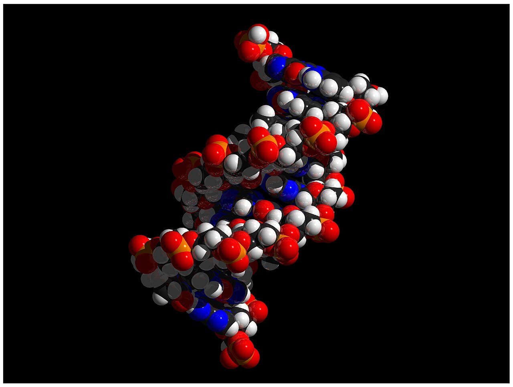
The oldest question in the field
Are we born who we are, or made who we are? This is the nature–nurture debate, and it is the oldest question in the study of development. Nature refers to what heredity supplies: our genes, and the genetically timed unfolding of the body called maturation — the reason children the world over sit before they crawl, and crawl before they walk, on a roughly shared schedule. Nurture refers to everything experience supplies: nutrition, learning, relationships, culture, wealth or poverty, stress or safety. For centuries thinkers lined up on one side or the other — the empiricist John Locke imagined the newborn mind as a tabula rasa, a blank slate written on entirely by experience, while nativists insisted the essential design is set in advance.
It was never either/or
Modern developmental science has retired that contest. The verdict is not “mostly nature” or “mostly nurture” but interaction: every trait a person has emerges from genes and environment working together, continuously, from the first cell onward. Your genotype is the set of genes you inherit; your phenotype is what you actually become — and the phenotype is always the product of a genotype meeting an environment. Genes set a range of reaction, an upper and lower limit for a trait, and the environment decides where within that range you land. Height is the classic case: your genes cap how tall you might grow, but nutrition, health, and even affection determine whether you reach that ceiling.
| Concept | What it means | Example |
|---|---|---|
| Range of reaction | Genes set the limits; the environment decides where in that range a trait lands | Genetic height potential reached only with good nutrition |
| Canalization | Some traits are so strongly buffered by genes that they follow a set path across almost any environment | Babbling and basic motor milestones appear in nearly all infants |
| Gene–environment correlation | Genes and environments tend to travel together — inherited tendencies also shape the settings a person meets | Musical parents pass on both genes and a house full of instruments |
| Epigenetics | Experience switches genes on or off without changing the DNA code itself | Nurturing early care can dial down the activity of stress-reactivity genes |
Epigenetics: nurture writing on nature
The most striking modern discovery is epigenetics — the study of how experience changes gene expression without altering the underlying DNA sequence. Think of the genome as a piano: epigenetic marks (chemical tags such as methyl groups) decide which keys get played and which stay silent. Diet, stress, toxins, and the quality of early caregiving can all lay down these marks, turning genes up or down — and some marks can even be passed to the next generation. Epigenetics dissolves the last of the old debate: here is nurture literally reaching in and rewriting how nature is read.
- Nature (genes, maturation) and nurture (experience, environment) do not compete — they interact to build every trait.
- Your genotype is inherited; your phenotype is the genotype expressed within an environment.
- Genes set a range of reaction; the environment determines where within it a person lands.
- Epigenetics shows experience switching genes on and off without changing the DNA code — and heritability describes populations, not personal destiny.
Section 3The big questions
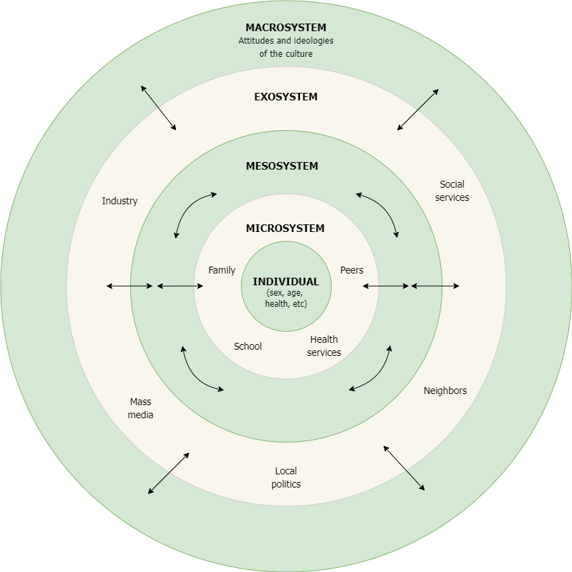
Continuity or stages?
Beneath the field’s many theories lie three enduring debates, and knowing them lets you place any theory you meet. The first asks how change happens. In the continuity view, development is gradual and cumulative — more of the same, added smoothly, like a vocabulary that grows word by word. In the discontinuity or stage view, development leaps through distinct, qualitatively different steps, each a genuine reorganization, arrived at in a fixed order. The great stage theorists are worth knowing by name. Jean Piaget proposed four stages of cognitive development — sensorimotor (birth to 2), preoperational (2 to 7), concrete operational (7 to 11), and formal operational (11 and up). Erik Erikson mapped eight psychosocial stages, each a lifelong crisis to resolve, from trust versus mistrust in infancy to integrity versus despair in old age. Even Elisabeth Kübler-Ross’s well-known five stages of grief — denial, anger, bargaining, depression, acceptance — belong to this family, though she later cautioned they are not a rigid ladder everyone climbs in order.
Stability or change?
The second debate asks whether we stay the same. Do the traits we show early — a shy temperament, a secure or anxious bond with a caregiver — persist across life, or can people genuinely change? Researchers who study temperament find real stability, and Mary Ainsworth’s classic work identified early attachment styles — secure, insecure-avoidant, and insecure-resistant (with a disorganized pattern added by later researchers) — that can echo for years. Yet the lifespan view stresses plasticity: the capacity to change is never fully lost, and warm relationships, new opportunities, or therapy can redirect a life. Most scientists now hold both truths at once — there is meaningful continuity and real room for change.
Universal or contextual?
The third debate asks whether there is one path of development or many. Piaget believed his stages were universal — the same sequence unfolding in every child on Earth. Others emphasize that development is contextual, profoundly shaped by culture and circumstance. Lev Vygotsky’s sociocultural theory placed learning inside relationships, introducing the zone of proximal development — the gap between what a child can do alone and what she can do with a skilled partner’s help. Urie Bronfenbrenner’s ecological systems model pictured the child at the center of nested layers — family and school (the microsystem), the community, the wider economy and culture, and even the changing historical moment. And Lawrence Kohlberg’s stages of moral reasoning, though framed as universal, have themselves been questioned for reflecting one cultural viewpoint — a reminder that even our theories are grown in a context.
| The question | One answer | The other answer | A voice for each |
|---|---|---|---|
| How does change happen? | Continuity — gradual, cumulative | Stages — distinct, reorganizing steps | Learning theorists / Piaget, Erikson |
| Do we stay the same? | Stability — early traits endure | Change — plasticity across life | Temperament & attachment work / lifespan theorists |
| Is there one path? | Universal — the same sequence for all | Contextual — culture shapes the path | Piaget / Vygotsky, Bronfenbrenner |
- Continuity vs stages: is change gradual and cumulative, or a series of qualitative reorganizations? Piaget (4 stages) and Erikson (8 stages) are the great stage theorists.
- Stability vs change: do early traits like temperament and attachment (Ainsworth) persist, or does plasticity allow lifelong change?
- Universal vs contextual: one path for all (Piaget) or many paths shaped by culture (Vygotsky’s ZPD, Bronfenbrenner’s nested systems)?
- The current consensus answers most of these debates with both — a matter of degree, not of sides.
Section 4Research designs
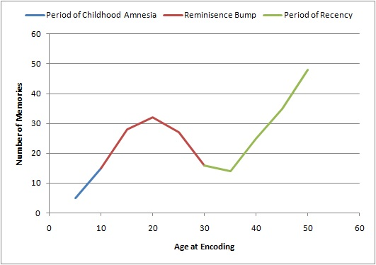
Cross-sectional: a snapshot
Studying change over a lifetime poses a practical puzzle: how do you observe seventy years of development without waiting seventy years? The field’s three main developmental designs are three answers to that puzzle. A cross-sectional study takes a snapshot — it compares different age groups all at the same time, testing, say, groups of 20-, 40-, and 60-year-olds this month. It is fast, inexpensive, and free of dropout. But it hides a trap. Because the age groups grew up in different eras, a difference between them may be a cohort effect — a product of the generation they belong to — rather than a true effect of aging. And because no one is followed, a cross-sectional study can never show how an individual actually changes.
Longitudinal: a filmstrip
A longitudinal study follows the same people over months, years, or decades, testing them again and again. This is the only way to watch an individual life unfold — to see whether the shy toddler becomes the reserved adult, to measure genuine stability and genuine change. The price is steep: longitudinal studies are slow and costly; participants drop out over time (a problem called attrition, and worse when the dropouts differ systematically from those who stay); repeated testing can produce practice effects; and because one cohort is followed through one slice of history, the findings may not generalize to people who grew up in another era.
Sequential: the best of both
A sequential design marries the two. The researcher starts with several age groups at once — the cross-sectional part — and then follows all of them forward in time — the longitudinal part. By comparing people of the same age who were born in different years, a sequential study can finally separate the effects of age from the effects of cohort, the single most powerful thing these designs can do. The cost is complexity: sequential studies are the most demanding and expensive of all, which is why the great ones, such as Schaie’s Seattle Longitudinal Study of adult intelligence, are landmarks.
| Design | How it works | Strength | Weakness |
|---|---|---|---|
| Cross-sectional | Different age groups compared at one point in time | Fast, cheap, no dropout | Confounds age with cohort; shows no individual change |
| Longitudinal | The same people followed over time | Reveals individual change & stability | Slow, costly; attrition; practice effects; tied to one cohort |
| Sequential | Several cohorts, each followed over time | Separates age effects from cohort effects | Most complex, expensive, and demanding |
- Cross-sectional designs compare age groups at once: fast and cheap, but they confound age with cohort and reveal no individual change.
- Longitudinal designs follow the same people over time: they show real change, but are slow, costly, and vulnerable to attrition.
- Sequential designs combine both and can separate age effects from cohort effects — at the cost of great complexity.
- A cohort effect — a generational difference — can easily be mistaken for a true effect of aging.
Section 5Studying people over time
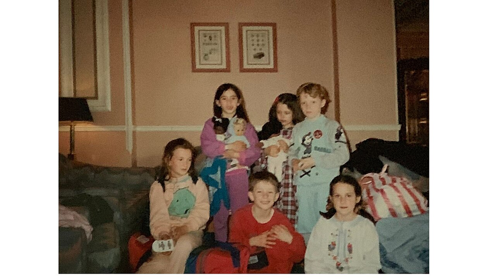
The special duties of developmental research
Developmental science studies the most vulnerable people there are — infants, young children, and frail elders — and often studies them for years. That raises the ethical stakes. Every reputable study today must clear an ethics review board (in the United States, an Institutional Review Board) before it begins, and must honor a set of protections that grew out of hard historical lessons. Chief among them is informed consent: participation must be voluntary and based on a clear understanding of what the study involves. But a two-year-old cannot read a consent form. In developmental research, a guardian gives legal consent while the child, whenever old enough, gives assent — agreement expressed in words the child can actually understand, with the freedom to say no.
Consent, protection, and the right to stop
Consent is only the first safeguard. Researchers owe participants protection from harm — no undue physical or psychological risk, a duty that weighs especially heavily with children who cannot always speak up for themselves. They owe confidentiality, keeping identities and data private, which becomes a decades-long obligation in a longitudinal study. Participants keep the right to withdraw at any moment, without penalty and without needing a reason. And because some studies involve mild deception (you cannot always tell a child exactly what you are watching for), researchers must debrief afterward, explaining the study honestly and undoing any misunderstanding.
| Safeguard | What it requires | In developmental research |
|---|---|---|
| Informed consent | Voluntary, informed agreement to take part | Guardian consents; the child gives assent in understandable terms |
| Protection from harm | No undue physical or psychological risk | Extra vigilance for vulnerable infants, children, and elders |
| Confidentiality | Identities and data kept private | Records may need safeguarding for decades |
| Right to withdraw | Freedom to quit anytime, without penalty | Honored at any age, at any point in a long study |
| Debriefing | Explain the study and correct any deception afterward | An age-appropriate explanation for child and family |
The challenges of a moving target
Beyond ethics, developmental researchers wrestle with problems unique to studying a changing person. There is the measurement puzzle: how do you assess “intelligence” or “fear” in a way that means the same thing in a 2-year-old and a 20-year-old, so that a change in scores reflects the person and not the ruler? There is attrition, quietly eroding a long study’s sample and possibly biasing it. There is the sheer cost in time and money, and the tangle of separating age, cohort, and the historical moment. Good developmental science is patient, careful work — and its findings, hard-won, are the foundation for everything a caring professional does to support people across the whole arc of a life.
- Developmental studies must clear an ethics review board and honor informed consent, protection from harm, confidentiality, the right to withdraw, and debriefing.
- Because participants may be children, guardians give consent while the child gives assent.
- Long-term research faces distinctive challenges: attrition, high cost, and measuring the same construct fairly across very different ages.
- These careful methods are what make developmental knowledge trustworthy.
The chapter in one breath
- Human development is the lifelong study of orderly change — gains, losses, and reorganizations — across three domains: physical, cognitive, and psychosocial.
- The lifespan is mapped into periods from the prenatal stage to late adulthood, with boundaries that are approximate and shaped by culture.
- Nature and nurture do not compete but interact; the genotype becomes a phenotype only within an environment, along a genetic range of reaction.
- Epigenetics shows experience switching genes on and off without changing the DNA code, and heritability describes populations, not personal destiny.
- Three great debates organize the field — continuity vs stages (Piaget, Erikson), stability vs change (temperament, Ainsworth’s attachment), and universal vs contextual (Vygotsky, Bronfenbrenner) — and the modern answer to each is usually “both.”
- Cross-sectional, longitudinal, and sequential designs each trade off speed, individual change, and the ability to separate a true age effect from a cohort effect.
- Studying people — especially children — over time carries special ethical duties (consent and assent, protection, confidentiality, withdrawal, debriefing) and practical challenges (attrition, cost, fair measurement).
ReferenceWords worth knowing
A quick reference for the terms in this chapter — skim it now, or circle back whenever a word trips you up.
- Assent
- A child’s own agreement to take part in research, expressed in understandable terms, alongside a guardian’s legal consent.
- Attachment
- The enduring emotional bond between a child and caregiver; Ainsworth described secure, avoidant, and resistant styles (disorganized was added later).
- Attrition
- The loss of participants from a study over time, which can bias a longitudinal sample.
- Cognitive domain
- The area of development covering thinking, language, memory, reasoning, and intelligence.
- Cohort effect
- A difference between age groups caused by the generation (era) they were born into rather than by age itself.
- Continuity vs discontinuity
- The debate over whether development is gradual and cumulative (continuous) or proceeds through distinct stages (discontinuous).
- Cross-sectional design
- A study comparing different age groups at a single point in time.
- Epigenetics
- The study of how experience changes gene expression without altering the DNA sequence.
- Genotype
- The set of genes an individual inherits.
- Heritability
- A population statistic estimating how much of the variation in a trait is linked to genetic differences; not a fixed limit on any one person.
- Human development
- The scientific study of how and why people change, and stay the same, across the lifespan.
- Informed consent
- Voluntary agreement to participate in research based on a clear understanding of what it involves.
- Longitudinal design
- A study that follows the same people over an extended period.
- Maturation
- The genetically timed, orderly unfolding of the body and its capacities.
- Nature
- The contribution of heredity — genes and maturation — to development.
- Nurture
- The contribution of experience — environment, learning, relationships, and culture — to development.
- Phenotype
- The observable traits a person actually develops, produced by a genotype expressed within an environment.
- Physical domain
- The area of development covering the body, brain, motor skills, senses, and health.
- Psychosocial domain
- The area of development covering emotion, personality, identity, morality, and relationships.
- Range of reaction
- The genetically set upper and lower limits for a trait, within which the environment determines the outcome.
- Sequential design
- A study that combines cross-sectional and longitudinal methods, following several cohorts over time to separate age from cohort effects.
- Zone of proximal development
- Vygotsky’s term for the gap between what a child can do alone and what she can do with a skilled partner’s help.
Check yourself
Theories of Development
No one has ever watched a person grow up and understood everything they saw. A child says her first word, refuses a nap, lies about a broken cup, falls in love, grieves a parent — and behind each moment sit questions too large to answer by watching alone. A theory is a disciplined attempt at those answers: an organized set of ideas that explains observations and predicts what comes next. This chapter introduces the great families of developmental theory — psychoanalytic, learning, cognitive, and contextual — and the thinkers who built them. None of them is the whole truth; each is a different lens on the same growing human, and learning to switch lenses is the real skill.
By the end of this chapter you can
- Explain the core claim of the psychoanalytic approach and outline Freud's psychosexual stages and Erikson's eight psychosocial crises.
- Distinguish classical conditioning, operant conditioning, and Bandura's observational learning.
- Summarize Piaget's four stages of cognitive development and the ideas of assimilation and accommodation.
- Contrast Piaget's constructivism with Vygotsky's sociocultural theory and the zone of proximal development.
- Describe the information-processing model of the developing mind.
- Map Bronfenbrenner's five ecological systems and give an example of each.
- Compare the theories on the great debates — nature versus nurture, continuity versus discontinuity, active versus passive — and say what each explains best.
Section 1Psychoanalytic theories

The idea beneath the surface
The psychoanalytic tradition begins with a single unsettling claim: much of what drives us is hidden from us. Sigmund Freud, a Viennese physician working at the turn of the twentieth century, argued that behavior is shaped by unconscious forces — drives, memories, and conflicts we cannot directly see — and that the shape of the adult personality is set early, in the emotional weather of the first years of life. You do not have to accept Freud's every conclusion to feel the pull of the idea. Anyone who has watched a toddler melt down over a demand they cannot name, or an adult repeat a pattern they swear they hate, has met the unconscious at work.
Freud pictured the mind as a contest among three parts. The id is the newborn's raw engine of want — it demands satisfaction now. The ego, forming across infancy, is the negotiator that finds realistic ways to meet those wants. The superego, arriving with early childhood, is the internalized voice of conscience and culture. Development, in this view, is the long project of balancing appetite, reality, and rule.
Freud's psychosexual stages
Freud proposed that a child's energy settles, stage by stage, on a different region of the body, and that how caregivers handle the tension at each stage leaves a lasting imprint. Too little or too much gratification produces fixation — a bit of the personality left permanently parked at that stage. The oral stage (birth to ~1 year) centers on the mouth and on trust in being fed; the anal stage (~1–3 years) on toilet training and control; the phallic stage (~3–6 years) on identification with the same-sex parent; a quiet latency period (~6–puberty) when the drives go underground and skills bloom; and finally the genital stage of mature adult intimacy. Modern developmentalists treat the specific mechanisms with heavy skepticism — the theory is hard to test and reflects its era's biases — but Freud's larger gifts endure: the unconscious, the importance of early relationships, and the very idea of stages.
Erikson's eight psychosocial crises
Erik Erikson, trained in Freud's circle, kept the stage structure but changed its engine. Development, he said, is driven not by bodily zones but by psychosocial tasks — the demands that relationships and society place on us — and it does not stop at puberty. Erikson mapped eight stages across the whole lifespan, each a crisis, a turning point between a healthier and a less healthy resolution. Resolve it well and you gain a lasting virtue; resolve it poorly and the difficulty is carried forward. Crucially, the stages are not pass–fail: earlier crises can be reworked, and later ones build on what came before.
| Stage (age) | Crisis | Central question | Virtue |
|---|---|---|---|
| Infancy (0–1) | Trust vs. mistrust | Can I count on the world? | Hope |
| Toddler (1–3) | Autonomy vs. shame & doubt | Can I do things myself? | Will |
| Preschool (3–6) | Initiative vs. guilt | Is it okay to make and plan? | Purpose |
| School age (6–12) | Industry vs. inferiority | Am I capable and competent? | Competence |
| Adolescence (12–18) | Identity vs. role confusion | Who am I? | Fidelity |
| Young adult (18–40) | Intimacy vs. isolation | Can I love and be close? | Love |
| Midlife (40–65) | Generativity vs. stagnation | Have I made my life count? | Care |
| Late life (65+) | Integrity vs. despair | Was my life worthwhile? | Wisdom |
Erikson's very first crisis — trust versus mistrust — overlaps a research tradition of its own. Building on John Bowlby's work, Mary Ainsworth devised the Strange Situation, watching how one-year-olds react when a caregiver leaves and returns. She described distinct attachment patterns: secure (upset at the leaving, comforted and quickly settled at the return), insecure-avoidant (little reaction either way), and insecure-resistant (also called ambivalent — hard to soothe, clingy and angry at once); a fourth, disorganized, was added later for children with no coherent strategy. A securely attached baby is Erikson's trusting baby, seen through a different instrument.
- The psychoanalytic approach says unconscious forces and early relationships shape the personality.
- Freud proposed psychosexual stages (oral, anal, phallic, latency, genital) and the id–ego–superego structure; the specifics are now largely rejected, the framing kept.
- Erikson recast development as eight lifelong psychosocial crises, each yielding a virtue — from trust vs. mistrust to integrity vs. despair.
- Ainsworth's attachment styles — secure, avoidant, resistant, disorganized — grew from this tradition.
Section 2Learning theories

Development as learning
Where psychoanalysts looked inward at hidden drives, the behaviorists looked outward and refused to guess about the unseen. John Watson, their American founder, insisted that psychology study only what can be measured: observable behavior and the environment that shapes it. Development, on this view, is not the unfolding of stages but the steady accumulation of learning — and it is continuous, without the sharp steps the stage theorists loved. Watson's famous boast, that he could take any healthy infant and train it into any profession, is a caricature of nurture — but it names the learning theorist's core faith: experience, not destiny, writes the person.
Classical conditioning
The first mechanism came from a Russian physiologist studying dog saliva. Ivan Pavlov noticed that his dogs began drooling before food arrived — at the footsteps of the attendant. In classical conditioning, a neutral signal that reliably precedes a meaningful event comes to trigger the response on its own. Food (the unconditioned stimulus) naturally produces salivation (the unconditioned response); pair a bell with the food enough times and the bell alone (now a conditioned stimulus) produces salivation (a conditioned response). Watson showed the same process builds emotions in humans: in the ethically notorious “Little Albert” study, an infant learned to fear a white rat after it was paired with a frightening noise. Much of how children come to love a lullaby or dread a doctor's office runs on exactly this machinery.
Operant conditioning
Edward Thorndike's law of effect added a second mechanism: behaviors followed by satisfying consequences are repeated, and those followed by unpleasant ones fade. B. F. Skinner built this into operant conditioning, the shaping of voluntary behavior by its consequences. Reinforcement makes a behavior more likely; punishment makes it less likely. Each comes in two flavors, and the words positive and negative here mean “adding” and “removing,” not “good” and “bad” — the single most misread pair of terms in the field.
| Procedure | What happens | Effect | Everyday example |
|---|---|---|---|
| Positive reinforcement | Add something pleasant | Behavior ↑ | Praise for sharing → more sharing |
| Negative reinforcement | Remove something unpleasant | Behavior ↑ | Nagging stops when chore is done → more chores |
| Positive punishment | Add something unpleasant | Behavior ↓ | Scolding after a tantrum → fewer tantrums |
| Negative punishment | Remove something pleasant | Behavior ↓ | Losing screen time for hitting → less hitting |
Timing and pattern matter enormously. Reinforcement that comes immediately teaches faster than reinforcement delayed, and — counterintuitively — behaviors rewarded only sometimes are the hardest to extinguish, which is exactly why a child who occasionally gets candy for whining at the checkout will whine louder and longer than one who never does.
Bandura's social learning
Albert Bandura agreed that consequences matter but showed they need not be your own. In his classic Bobo doll experiments, children who merely watched an adult punch an inflatable clown were far more likely to punch it themselves — observational learning, learning by watching a model. This one finding cracked behaviorism open: between the stimulus and the response sits a thinking child who attends, remembers, and decides whether to imitate. Bandura called the mature version social cognitive theory, and he added a pivotal idea — self-efficacy, your belief in your own ability to succeed at a task, which shapes what you will even attempt. A child surrounded by capable, encouraging models does not just copy skills; she builds the confidence to try.
- Learning theories explain development as continuous change driven by the environment.
- Classical conditioning (Pavlov, Watson) links a neutral signal to an automatic response.
- Operant conditioning (Thorndike, Skinner) shapes voluntary behavior through reinforcement and punishment — where positive/negative mean add/remove.
- Bandura added observational learning and self-efficacy: children learn by watching models and by believing they can.
Section 3Cognitive theories

Piaget: the child as scientist
Jean Piaget, a Swiss biologist who fell into psychology by watching his own children, gave development its most influential map of the mind. He saw children not as small adults who simply know less, but as thinkers who reason in qualitatively different ways at different ages. Knowledge, he argued, is built — constructivism — through mental structures he called schemas. A baby with a “grasping” schema meets the world by grabbing it. When new experience fits an existing schema, the child uses assimilation (calling a whale a “fish”); when it will not fit, the child must accommodate — revise the schema (learning that whales are something else). The push and pull between these two, seeking a balance Piaget called equilibration, is the motor of cognitive growth.
Piaget proposed four broad stages, each a reorganization of how thought works. The infant in the sensorimotor stage knows the world through action and senses, and its great achievement is object permanence — grasping that things still exist when out of sight. The preoperational child is a fountain of language and imagination but reasons by appearance, is egocentric (struggles to take another's viewpoint), and fails conservation — the understanding that quantity survives a change in shape. The concrete operational child masters logic about tangible things and now conserves, but stumbles on the abstract. Only in formal operational thought can the adolescent reason about hypotheticals, ethics, and what merely might be.
| Stage | Age (approx.) | Hallmark of thinking | Key achievement |
|---|---|---|---|
| Sensorimotor | 0–2 | Knows through senses & movement | Object permanence |
| Preoperational | 2–7 | Symbols & language; egocentric; no conservation | Pretend play, language |
| Concrete operational | 7–11 | Logic about concrete things; conserves | Reversibility, classification |
| Formal operational | 11+ | Abstract & hypothetical reasoning | “What if” thinking |
Lawrence Kohlberg extended Piaget's logic to right and wrong. Using moral dilemmas, he described three levels of moral reasoning: preconventional (avoid punishment, seek reward), conventional (follow rules and please others), and postconventional (reason from abstract principles of justice). As with Piaget, it is the reasoning behind the choice, not the choice itself, that marks the level.
Vygotsky: thinking is social first
Lev Vygotsky, a Russian psychologist who died young but whose ideas surged decades later, agreed that children build knowledge — but insisted they never build it alone. In his sociocultural theory, cognition grows out of relationships and the tools a culture hands down, language chief among them. His signature idea is the zone of proximal development (ZPD): the gap between what a learner can do alone and what she can do with help from a more knowledgeable other. Learning happens inside that zone, through scaffolding — support that is rich at first and withdrawn as the child takes over, exactly as scaffolding comes off a finished building. Where Piaget saw a solitary young scientist, Vygotsky saw an apprentice; the child's private muttering during a hard puzzle (private speech) is, for him, thought being born from conversation.
Information processing: the mind as computer
A third cognitive approach borrows its metaphor from the machine. Information-processing theory drops the idea of stages entirely and asks how the mind takes information in, holds it, and gets it back out — encoding, storage, and retrieval. It pictures a flow: fleeting sensory memory, a limited working memory where thinking actually happens, and a vast long-term memory for lasting storage. On this account children get smarter not by leaping to a new stage but by gradual, continuous gains — a bigger working-memory span, faster processing, better attention, and richer strategies like rehearsal and organization. It explains beautifully why a six-year-old cannot hold a long instruction in mind that a twelve-year-old handles with ease.
- Piaget saw children constructing knowledge through schemas, assimilation, and accommodation, across four stages: sensorimotor, preoperational, concrete operational, formal operational.
- Landmarks: object permanence (sensorimotor) and conservation (concrete operational); Kohlberg extended the model to moral reasoning.
- Vygotsky made cognition social — the zone of proximal development and scaffolding.
- Information-processing theory frames the mind as encoding, storage, and retrieval, improving gradually with working memory and attention.
Section 4Contextual theories

The child in the whole picture
Every theory so far puts something inside the child at the center — a drive, a habit, a mind. The contextual approach turns the camera around and widens the shot. Urie Bronfenbrenner argued that you cannot understand a developing person apart from the layered environments that surround them, from the intimate to the sweeping. His ecological systems theory pictures the child at the center of a set of nested circles, like the rings of an onion, each influencing the person and being influenced in return.
The five systems
The innermost ring, the microsystem, is the child's immediate, face-to-face world — family, close friends, a classroom. One ring out, the mesosystem, is not a place but a set of connections: how the microsystems talk to each other, such as whether a parent and a teacher coordinate. The exosystem holds settings the child never enters but that shape their life anyway — a parent's workplace, the local school board. The vast macrosystem is the surrounding culture: its economy, laws, values, and beliefs about childhood itself. And running through all of them is the chronosystem, the dimension of time — how a person and their world change across years and across history, so that growing up during a pandemic or a boom is itself a developmental force.
| System | What it is | Example |
|---|---|---|
| Microsystem | Immediate settings the child is in | Home, classroom, best friend |
| Mesosystem | Links between microsystems | Parent–teacher communication |
| Exosystem | Settings that affect the child indirectly | A parent's job, the school board |
| Macrosystem | The broad culture and its values | Laws, economy, beliefs about childhood |
| Chronosystem | Change over time | A divorce; growing up during a recession |
Why context is not just background
The power of the ecological view is that it forbids easy blame. A child who struggles in school is not simply “unmotivated”; the same child sits inside a family under stress (microsystem), a broken line between home and school (mesosystem), a parent working two jobs with no leave (exosystem), and a culture that funds some schools far better than others (macrosystem) — all shifting over time (chronosystem). Bronfenbrenner later stressed that these layers act through everyday proximal processes: the reliable, back-and-forth interactions — reading together, sharing meals, working a puzzle — that are the true engines of development. Context matters most in how it reaches down into those ordinary daily moments.
- Contextual theories place the developing person inside layered environments rather than inside a single inner mechanism.
- Bronfenbrenner's ecological systems nest five layers: microsystem, mesosystem, exosystem, macrosystem, and chronosystem (time).
- The layers act through everyday proximal processes — the ordinary repeated interactions that actually drive growth.
- The view reframes problems and solutions at the level of family, community, and culture, not the child alone.
Section 5Comparing the theories

Different lenses on the same child
It is tempting to ask which theory is right, but that is the wrong question — like asking whether a map of roads is better than a map of rivers. Each theory was built to answer a particular kind of question, and each is strongest exactly where it looks hardest. Watch a four-year-old refuse to share a toy: a psychoanalyst asks what her early relationships taught her about trust, a learning theorist asks what sharing has been reinforced or punished, a cognitive theorist asks whether she can yet grasp another child's point of view, and a contextual theorist asks about the family and culture that frame the moment. All four are partly right. The mature developmentalist keeps every lens on the shelf and reaches for the one the question needs.
The great debates
Theories divide along a few deep fault lines, and knowing a theory's stance on these predicts almost everything else about it. The nature–nurture debate asks how much of development is written by biology and how much by experience — though today's answer is nearly always “both, interacting.” The continuity–discontinuity debate asks whether development is a smooth ramp (the learning and information-processing theorists) or a staircase of distinct stages (Freud, Erikson, Piaget). The active–passive debate asks whether children build their own development (Piaget's little scientist) or are shaped by forces around them (classical behaviorism). And the stability–change debate asks whether early traits last a lifetime or whether we keep remaking ourselves — Erikson's lifespan optimism against Freud's early determinism.
| Theory | Explains best | Watch out for |
|---|---|---|
| Psychoanalytic (Freud, Erikson) | Emotion, personality, early relationships, lifespan identity | Hard to test scientifically |
| Learning (Pavlov, Skinner, Bandura) | How specific behaviors, fears, and habits are acquired | Can slight thought, biology, and stages |
| Cognitive (Piaget, Vygotsky, info-processing) | How thinking, reasoning, and knowledge change with age | Underplays emotion and motivation |
| Contextual (Bronfenbrenner) | How culture, family, and society shape the person | Less precise about internal mechanisms |
Choosing a lens — and beyond childhood
Because these theories are complementary, most modern research is frankly eclectic: it borrows what fits the question and the age. Studying language delay? Reach for information-processing and Vygotsky. Designing a behavior plan? Operant conditioning. Understanding an adolescent's search for self? Erikson. And because this is a lifespan book, remember that development does not end at adulthood or even at illness. Elisabeth Kübler-Ross, studying dying patients, described five reactions to loss — denial, anger, bargaining, depression, and acceptance — that many people move through unevenly, out of order, and never as a neat checklist. Her work, like Erikson's, insists that the final chapters of life are developmental too, and it will return when we reach the end of the human arc.
- The theories are complementary lenses, each strongest on the question it was built to answer.
- Know a theory by its stance on the great debates: nature–nurture, continuity–discontinuity, active–passive, and stability–change.
- Stage theories (Freud, Erikson, Piaget) favor discontinuity; learning and information-processing favor continuity.
- Real research is eclectic, and a lifespan view — through Erikson and Kübler-Ross — extends development all the way to loss and old age.
The chapter in one breath
- A theory organizes observations and predicts development; four great families each offer a different lens.
- Psychoanalytic theory (Freud's psychosexual stages, Erikson's eight psychosocial crises) centers unconscious drives and early relationships, and Erikson stretched it across the whole lifespan.
- Learning theory explains behavior through classical conditioning (Pavlov), operant conditioning (Skinner's reinforcement and punishment), and Bandura's observational learning and self-efficacy.
- Cognitive theory maps how thinking changes: Piaget's four stages, Vygotsky's socially built mind and the zone of proximal development, and the information-processing model.
- Contextual theory (Bronfenbrenner) nests the child inside micro-, meso-, exo-, macro-, and chronosystems.
- The theories are complementary, dividing along nature–nurture, continuity–discontinuity, and active–passive; good practice is eclectic.
- Attachment (Ainsworth), moral reasoning (Kohlberg), and grief (Kübler-Ross) extend these ideas across the full arc of life.
ReferenceWords worth knowing
A quick reference for the terms in this chapter — skim it now, or circle back whenever a word trips you up.
- Accommodation
- In Piaget's theory, revising an existing schema to fit new information that will not otherwise fit.
- Assimilation
- In Piaget's theory, interpreting new experience by fitting it into an existing schema.
- Attachment
- The enduring emotional bond between child and caregiver; Ainsworth described secure, avoidant, resistant, and disorganized patterns.
- Behaviorism
- The school of psychology that studies only observable behavior and the environment that shapes it.
- Classical conditioning
- Learning in which a neutral stimulus, paired with a meaningful one, comes to trigger the same response (Pavlov).
- Continuity–discontinuity debate
- The question of whether development is gradual and smooth or proceeds in distinct stages.
- Ecological systems theory
- Bronfenbrenner's model of the person nested within micro-, meso-, exo-, macro-, and chronosystems.
- Id, ego, and superego
- Freud's three parts of the mind: raw desire, the realistic negotiator, and the internalized conscience.
- Information processing
- A cognitive approach that models the mind as encoding, storing, and retrieving information, improving gradually with age.
- Nature and nurture
- The interacting contributions of biology (nature) and experience (nurture) to development.
- Object permanence
- The understanding that objects continue to exist when out of sight; a sensorimotor achievement.
- Observational learning
- Learning by watching and imitating a model, central to Bandura's social cognitive theory.
- Operant conditioning
- Learning in which voluntary behavior is shaped by its consequences — reinforcement and punishment (Skinner).
- Psychosexual stages
- Freud's sequence — oral, anal, phallic, latency, genital — through which personality is thought to form.
- Psychosocial crisis
- In Erikson's theory, the central conflict of each of eight life stages, resolved toward a lasting virtue.
- Reinforcement
- Any consequence that makes a behavior more likely; positive adds a stimulus, negative removes one.
- Scaffolding
- Support a more knowledgeable person gives a learner, gradually withdrawn as skill grows (Vygotsky).
- Schema
- A mental structure that organizes knowledge and guides how a person interprets the world.
- Self-efficacy
- A person's belief in their own ability to succeed at a task; a key idea in Bandura's theory.
- Zone of proximal development
- The gap between what a learner can do alone and what they can do with help (Vygotsky).
Check yourself
Genetics & Prenatal Development
Every human life begins as a single cell no larger than the period at the end of this sentence — and that cell already carries the entire genetic script for a person. In the space of about thirty-eight weeks, that one cell becomes trillions, arranges itself into a brain, a beating heart, and ten fingers, and emerges as a newborn who will spend the rest of the lifespan unfolding what those first instructions began. This chapter follows that story from the molecule up: how genes are packaged and passed on, what happens when the instructions carry an error, how the stages of prenatal life proceed on their remarkable schedule, which outside agents can derail them, and how thoughtful prenatal care protects the whole enterprise. Nature and nurture are already in conversation before birth — and understanding that conversation is where a real understanding of human development starts.
By the end of this chapter you can
- Describe how DNA, genes, and chromosomes are organized, and state the normal human chromosome number.
- Distinguish genotype from phenotype and explain dominant and recessive inheritance using alleles.
- Compare autosomal dominant, autosomal recessive, and X-linked inheritance patterns with real examples.
- Explain how nondisjunction produces chromosomal disorders such as Down syndrome.
- Order and describe the three prenatal periods — germinal, embryonic, and fetal.
- Define teratogen and explain how dose, timing, and susceptibility shape the harm an agent can do.
- Identify major teratogens — alcohol, tobacco, certain drugs, and infections — and their effects.
- Summarize the components of good prenatal care and why folic acid and early monitoring matter.
Section 1Genes and chromosomes

The molecule that carries the instructions
Inside almost every one of your cells sits a full copy of your genetic instruction book, written in a molecule called DNA (deoxyribonucleic acid). DNA is a long chemical ladder twisted into the famous double helix, and its rungs are made of just four chemical letters — A, T, C, and G — paired in a fixed way (A always with T, C always with G). The order of those letters is a code, and a stretch of that code that spells out one meaningful instruction — usually the recipe for one protein — is a gene. Proteins, in turn, build and run the body: they form tissues, carry oxygen, speed up chemical reactions, and shape traits from eye color to the fine timing of brain development. A gene, then, is not destiny in a single stroke; it is a recipe, and how the recipe is expressed depends partly on the rest of the body and the environment around it.
DNA does not float loose. When a cell is preparing to divide, its DNA coils up tightly around proteins into compact packages called chromosomes. A typical human body cell holds 46 chromosomes, arranged as 23 pairs. Twenty-two of those pairs are autosomes, shared alike by everyone; the twenty-third pair are the sex chromosomes, which are XX in a typical female and XY in a typical male. You inherited one member of every pair from each biological parent — 23 chromosomes carried in the egg, 23 in the sperm — which is why you resemble both, and neither exactly.
From genotype to phenotype
Because chromosomes come in pairs, most genes come in pairs too. The alternative versions of a gene that can sit at the same spot are called alleles. If the two alleles you carry for a trait match, you are homozygous for it; if they differ, you are heterozygous. Your full genetic makeup — the alleles you actually carry — is your genotype. What can be observed about you, the trait that results, is your phenotype. The two are not the same thing, and the gap between them is one of the most important ideas in genetics.
When a heterozygous person's two alleles disagree, which one shows up? A dominant allele produces its effect even when only one copy is present; a recessive allele shows up in the phenotype only when a person carries two copies of it. Someone with one recessive allele and one dominant allele is a carrier — the recessive trait is hidden in their phenotype but can still be passed to a child. Most human traits, though, are not so tidy: height, skin tone, temperament, and intelligence are polygenic, shaped by many genes acting together and by the environment, which is why they vary along a smooth range rather than falling into neat either/or categories.
Why siblings differ
Eggs and sperm are made by a special kind of cell division called meiosis, which halves the chromosome number so that each gamete carries 23 chromosomes rather than 46. Along the way, matching chromosomes swap segments (crossing over) and sort into gametes independently, so each egg and each sperm carries a freshly shuffled combination. That shuffling is why full siblings — drawing from the same two parents — can be so different from one another, and why every person except an identical twin is genetically one of a kind.
| Term | What it means | Everyday handle |
|---|---|---|
| DNA | The coded molecule carrying genetic instructions | The instruction book |
| Gene | A stretch of DNA coding one instruction (often a protein) | A single recipe |
| Chromosome | DNA coiled into a package; humans have 46 (23 pairs) | A chapter of recipes |
| Allele | An alternative version of a gene | A variant of one recipe |
| Genotype | The alleles a person actually carries | What's written |
| Phenotype | The observable trait that results | What shows |
- DNA carries the code; a gene is a stretch of it; DNA is packaged into chromosomes.
- Humans have 46 chromosomes (23 pairs): 22 pairs of autosomes plus one pair of sex chromosomes (XX or XY).
- Alleles can be dominant or recessive; a recessive trait shows only with two copies, so a heterozygous person can be a hidden carrier.
- Genotype (what's inherited) is not the same as phenotype (what's expressed); many traits are polygenic.
Section 2Genetic and chromosomal disorders

Single-gene patterns
When a disorder is caused by a change in a single gene, it tends to follow one of a few predictable inheritance patterns, and knowing the pattern lets us estimate the odds for a family. In autosomal dominant inheritance, one copy of the altered allele is enough to cause the condition, so an affected parent has roughly a one-in-two chance of passing it to each child — Huntington's disease, a progressive neurological disorder that usually appears in midlife, is the classic example. In autosomal recessive inheritance, a child must inherit two altered copies — one from each parent — to be affected; two unaffected carriers have about a one-in-four chance of an affected child with each pregnancy. Cystic fibrosis, sickle-cell disease, Tay-Sachs disease, and phenylketonuria (PKU) all inherit this way.
A third pattern, X-linked recessive, involves a gene on the X chromosome. Because males have only one X, a single altered allele shows up in them with no second copy to mask it, so conditions like hemophilia, red-green color blindness, and Duchenne muscular dystrophy appear far more often in males, while females more often carry the allele without being affected. This is why some traits seem to "skip" from grandfather to grandson through an unaffected mother.
When whole chromosomes go wrong
Other disorders are not about a single gene but about having the wrong number of chromosomes. During meiosis, a pair of chromosomes can fail to separate properly — an error called nondisjunction — leaving a gamete with an extra or a missing chromosome. The best-known result is Down syndrome, or trisomy 21, in which a person carries three copies of chromosome 21 instead of two. Down syndrome is associated with intellectual disability that ranges from mild to moderate, characteristic facial features, and a higher rate of certain heart defects; the chance of it rises with the mother's age, because older eggs are more prone to nondisjunction. Errors in the sex chromosomes produce their own conditions: Turner syndrome (a single X, written 45,X) and Klinefelter syndrome (an extra X in a male, 47,XXY) are examples. Most other whole-chromosome errors are so disruptive that the pregnancy ends in miscarriage.
| Pattern | How it's inherited | Example disorders |
|---|---|---|
| Autosomal dominant | One altered allele is enough; ~50% risk per child of an affected parent | Huntington's disease |
| Autosomal recessive | Two altered alleles needed; two carriers = ~25% risk per pregnancy | Cystic fibrosis, sickle-cell disease, PKU, Tay-Sachs |
| X-linked recessive | Altered gene on the X; affects males far more often | Hemophilia, red-green color blindness, Duchenne muscular dystrophy |
| Chromosomal (trisomy) | An extra whole chromosome from nondisjunction | Down syndrome (trisomy 21) |
| Sex-chromosome | A missing or extra sex chromosome | Turner (45,X), Klinefelter (47,XXY) |
- Autosomal dominant needs one altered allele; autosomal recessive needs two; X-linked recessive conditions strike males more often.
- Two unaffected carriers of a recessive allele have about a 25% chance of an affected child each pregnancy.
- Down syndrome (trisomy 21) comes from nondisjunction and its risk increases with maternal age.
- Sex-chromosome errors include Turner (45,X) and Klinefelter (47,XXY) syndromes.
Section 3Conception and the stages

Conception
Prenatal development begins at conception, when a sperm penetrates an egg and their two sets of 23 chromosomes combine into a single cell with the full complement of 46. That first cell is the zygote, and its genome — already unique, already complete — is the blueprint for the entire person to come. Biological sex is decided in this instant: the egg always contributes an X, so it is the sperm, carrying either an X or a Y, that tips the balance toward XX or XY. Occasionally the zygote splits in the first days into two, producing identical (monozygotic) twins who share a genome; fraternal (dizygotic) twins, by contrast, come from two separate eggs fertilized by two separate sperm and are no more alike than any siblings.
The germinal period
The first two weeks after conception make up the germinal period. The zygote travels down the fallopian tube while dividing again and again — a process called cleavage — until it becomes a hollow ball of cells called a blastocyst. Around the end of the first week it reaches the uterus and burrows into the uterine wall, an event called implantation. This early stage is precarious: a large share of zygotes never implant successfully, often because of chromosomal errors, and are lost before a pregnancy is even recognized. The blastocyst's outer cells will go on to form the placenta, the remarkable organ that will supply the developing child with oxygen and nutrients and carry away wastes.
The embryonic and fetal periods
Once implantation is secure, the embryonic period runs from about the third through the eighth week. This is the season of organogenesis — the laying down of the major organs and body systems. The neural tube, forerunner of the brain and spinal cord, closes in the fourth week; the heart begins to beat; arms, legs, eyes, and ears take shape. Because so much is being built so fast, the embryonic period is also the time of greatest vulnerability to harm, a point Section 4 returns to. From the ninth week until birth comes the long fetal period, dominated by growth and refinement: the organs mature, the brain's neurons multiply and connect, and the fetus begins to move, hear, and respond. Somewhere around 22 to 24 weeks the fetus reaches the age of viability, the point at which survival outside the womb becomes possible with intensive medical support — though every additional week in the uterus improves the odds.
| Period | Timing | What happens |
|---|---|---|
| Germinal | Conception – ~2 weeks | Cleavage, blastocyst forms, implantation; placenta begins |
| Embryonic | ~3 – 8 weeks | Organogenesis — heart, neural tube, limbs, organs form; highest vulnerability |
| Fetal | ~9 weeks – birth | Growth and maturation; movement; viability around 22–24 weeks |
- Development begins at conception, forming a zygote with 46 chromosomes; the sperm decides biological sex.
- The germinal period (0–2 weeks) ends with implantation; the placenta begins forming.
- The embryonic period (3–8 weeks) builds the organs and is the most vulnerable stage.
- The fetal period (9 weeks–birth) is growth and maturation; viability arrives around 22–24 weeks.
Section 4Teratogens

What a teratogen is
A teratogen is any outside agent — a drug, an infection, a chemical, a form of radiation — that can disturb prenatal development and cause a birth defect. The placenta filters and protects, but it is not a perfect barrier, and many harmful substances cross it and reach the developing child. Whether a teratogen actually causes harm, and how much, depends on three principles worth memorizing. First is timing: the critical period for each organ is when it is forming, so the same exposure that is devastating during the embryonic weeks may do little later on. Second is dose: for most teratogens, more exposure means more risk, and some agents are harmful only above a threshold. Third is individual susceptibility: the genetic makeup of both the mother and the fetus influences how a given exposure plays out, which is why two pregnancies exposed to the same agent can end very differently.
The major offenders
The most common preventable teratogen is alcohol. There is no amount established as safe in pregnancy, and prenatal alcohol exposure can produce fetal alcohol spectrum disorders (FASD), a range of lifelong problems that at their most severe include distinctive facial features, growth restriction, and intellectual and behavioral difficulties. Tobacco smoking raises the risk of low birth weight, prematurity, and sudden infant death. Certain medications are notorious: thalidomide, once prescribed for morning sickness, caused severe limb malformations and taught the world a hard lesson about drug testing in pregnancy; isotretinoin (an acne drug) and some anti-seizure medicines carry serious risks, which is why any prescription in pregnancy is weighed carefully. Infections can be teratogenic too — a cluster often remembered as TORCH: toxoplasmosis, rubella (German measles), cytomegalovirus, and herpes, with Zika virus and syphilis now added to the watch-list. Rubella early in pregnancy, for instance, can cause deafness, heart defects, and cataracts, which is why rubella immunity before conception matters so much. Environmental hazards such as lead, mercury, and high-dose radiation round out the list.
| Teratogen | Type | Possible effects |
|---|---|---|
| Alcohol | Drug | Fetal alcohol spectrum disorders (FASD): facial changes, growth & cognitive effects |
| Tobacco | Drug | Low birth weight, prematurity, higher SIDS risk |
| Thalidomide | Medication | Severe limb malformations |
| Rubella | Infection | Deafness, heart defects, cataracts (worst in early pregnancy) |
| Zika virus | Infection | Microcephaly and brain abnormalities |
| Mercury / lead | Environmental | Nervous-system damage, cognitive impairment |
- A teratogen is any agent that can harm prenatal development; the placenta is not a complete shield.
- Harm depends on timing (the organ's critical period), dose, and individual susceptibility.
- Alcohol (FASD) is the leading preventable teratogen; there is no known safe amount.
- Teratogens span drugs, infections (rubella, Zika, the TORCH group), and environmental toxins (lead, mercury).
Section 5Prenatal care

Why early and regular care matters
Most of what threatens a pregnancy is either preventable or far more manageable when it is caught early, and that is the whole point of prenatal care: a schedule of visits, beginning as soon as pregnancy is known, that lets a clinician monitor mother and fetus and intervene before small problems become large ones. Routine visits track the mother's blood pressure and weight, screen for conditions such as gestational diabetes and preeclampsia, follow the growth of the fetus, and confirm that development is on track. Regular care is strongly linked to better outcomes — healthier birth weights, fewer complications, and lower infant mortality — and its benefits are greatest for pregnancies that carry extra risk.
Nutrition and lifestyle
Some of the most powerful protections are the simplest. Folic acid, a B vitamin, dramatically lowers the risk of neural tube defects such as spina bifida — but because the neural tube closes in the fourth week, often before a woman even knows she is pregnant, folic acid is recommended before conception and in the earliest weeks. Adequate overall nutrition, sensible weight gain, and enough iron and other nutrients support fetal growth. Just as important is avoiding known harms: no alcohol, no smoking, caution with medications, and steering clear of infections and environmental toxins where possible. In this sense prenatal care is as much about what a mother avoids as about what she does.
Screening and monitoring
Prenatal care also offers a growing toolkit for looking in on the fetus. Ultrasound uses sound waves to image the fetus, confirm dates, check growth, and detect many structural problems without any radiation. Blood tests can screen for chromosomal conditions and neural tube defects. When more information is needed, amniocentesis (sampling the amniotic fluid) and chorionic villus sampling (sampling placental tissue) can diagnose chromosomal disorders directly, though they carry a small risk and so are offered selectively. Paired with genetic counseling, these tools help families understand their situation and prepare — the modern extension of everything this chapter has covered, from the single gene to the whole pregnancy.
| Component | What it does | Why it matters |
|---|---|---|
| Folic acid | B vitamin taken before & early in pregnancy | Prevents most neural tube defects |
| Routine visits | Track blood pressure, weight, fetal growth | Catch preeclampsia, gestational diabetes early |
| Ultrasound | Sound-wave imaging of the fetus | Confirms dates and detects many problems, no radiation |
| Amniocentesis / CVS | Sample amniotic fluid or placental tissue | Diagnoses chromosomal disorders directly |
| Genetic counseling | Explains inherited risks and results | Supports informed, unpressured decisions |
- Early, regular prenatal care monitors mother and fetus and catches problems like preeclampsia and gestational diabetes.
- Folic acid before and early in pregnancy prevents most neural tube defects; the timing is critical.
- Avoiding alcohol, tobacco, and other teratogens is as important as any positive step.
- Ultrasound, blood screening, and (when needed) amniocentesis or CVS, paired with counseling, inform and protect.
The chapter in one breath
- DNA holds the code, a gene is one instruction, and DNA is packaged into 46 chromosomes (23 pairs, XX or XY) — one set from each parent.
- Genotype (what's inherited) differs from phenotype (what's expressed); dominant alleles show with one copy, recessive with two.
- Disorders follow patterns — autosomal dominant, recessive, X-linked — while nondisjunction causes chromosomal conditions like Down syndrome.
- Prenatal life moves through the germinal, embryonic, and fetal periods, with organs built — and most vulnerable — in the embryonic weeks.
- A teratogen's harm depends on timing, dose, and susceptibility; alcohol, tobacco, some drugs, and infections like rubella and Zika are key threats.
- Good prenatal care — folic acid, regular visits, avoiding teratogens, and screening — protects a healthy pregnancy.
- Nature and nurture are already interacting before birth: genes set possibilities, and the prenatal environment helps decide how they unfold.
ReferenceWords worth knowing
A quick reference for the terms in this chapter — skim it now, or circle back whenever a word trips you up.
- Allele
- An alternative version of a gene; a person carries two, one on each chromosome of a pair.
- Amniocentesis
- A prenatal test that samples amniotic fluid to diagnose chromosomal and other disorders.
- Autosome
- Any of the 22 chromosome pairs that are not the sex chromosomes.
- Blastocyst
- The hollow ball of cells the zygote becomes before implanting in the uterine wall.
- Chromosome
- A package of tightly coiled DNA; humans normally have 46, arranged in 23 pairs.
- Critical period
- The window during which a particular organ or system is forming and is most sensitive to harm.
- DNA (deoxyribonucleic acid)
- The double-helix molecule that stores genetic instructions in a four-letter code.
- Dominant allele
- An allele that produces its effect even when only one copy is present.
- Down syndrome
- A chromosomal disorder (trisomy 21) caused by an extra copy of chromosome 21.
- Embryonic period
- Weeks 3–8 of prenatal development, when the major organs form and vulnerability is highest.
- Fetal alcohol spectrum disorders (FASD)
- The range of lifelong effects caused by prenatal alcohol exposure.
- Fetal period
- Week 9 to birth, marked by growth, organ maturation, and increasing movement.
- Gene
- A stretch of DNA that codes one instruction, usually the recipe for a protein.
- Genotype
- The set of alleles a person actually carries.
- Germinal period
- The first two weeks after conception, from zygote through implantation.
- Heterozygous
- Carrying two different alleles for a given gene.
- Homozygous
- Carrying two matching alleles for a given gene.
- Meiosis
- The cell division that makes gametes, halving the chromosome number to 23 and shuffling genes.
- Phenotype
- The observable trait that results from the genotype and its environment.
- Recessive allele
- An allele whose effect appears only when two copies are present.
- Teratogen
- An outside agent — drug, infection, chemical, or radiation — that can harm prenatal development.
- Zygote
- The single cell formed at conception when sperm and egg unite, carrying the full 46 chromosomes.
Check yourself
Birth & the Newborn
After roughly forty weeks of quiet growth, a fetus becomes a person you can hold. Birth is the single most dramatic transition of the entire lifespan — in a matter of hours the developing human leaves a warm, dark, weightless, fully provisioned world and must, within seconds of arrival, breathe air, regulate its own temperature, and take in food through its mouth for the first time. This chapter follows that passage from the inside out: the stages of labor, the settings and interventions that shape modern birth, the complications that can threaten a newborn, and the tools we use to check that a baby has arrived safely. It ends with a surprise — the newborn who looks so helpless is, in fact, already seeing, hearing, smelling, and preferring the people who love it.
By the end of this chapter you can
- Describe the three stages of labor — dilation, delivery, and afterbirth — and what happens in each.
- Explain the role of oxytocin and positive feedback in driving labor forward.
- Compare common birth settings and attendants and weigh medicated against natural (prepared) childbirth.
- State the main reasons for a cesarean delivery and its trade-offs.
- Define anoxia, prematurity, and low birth weight, and explain why each threatens development.
- Score a newborn on the Apgar scale and interpret the result.
- Identify the major newborn reflexes and explain what they reveal about the nervous system.
- Summarize the surprising sensory and perceptual abilities a newborn already possesses.
Section 1The stages of labor
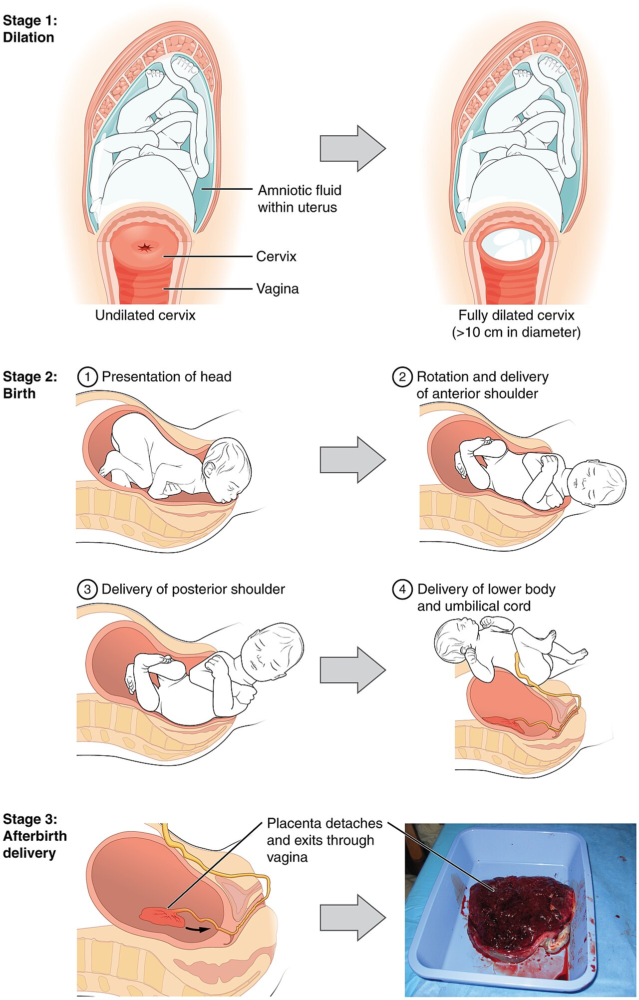
What sets labor in motion
For most of pregnancy the uterus practices with irregular, painless tightenings called Braxton Hicks contractions, but true labor is a different event with its own chemistry. As the fetus reaches term, a rising tide of hormones — estrogen, prostaglandins, and above all oxytocin — brings the uterine muscle to the edge of coordinated contraction. Oxytocin is the engine of labor, and it works through a positive feedback loop: contractions push the baby's head against the cervix, stretch receptors there signal the brain to release more oxytocin, and more oxytocin produces stronger contractions. Unlike the negative feedback that keeps most of the body steady, this loop is designed to build and build until it resolves in only one way — birth.
Three stages, one passage
Obstetricians divide labor into three stages. The first stage — dilation — is by far the longest, often twelve to fourteen hours for a first birth and shorter thereafter. During it the cervix must do two things: efface (thin out) and dilate (open) from closed to a full ten centimeters. Early contractions are mild and widely spaced; by the end of the first stage, in the intense phase called transition, they come every couple of minutes and last a minute each. The second stage — delivery — begins once the cervix is fully open and the mother feels the urge to push. It usually lasts minutes to a couple of hours and ends when the baby is born: the head appears at the vaginal opening (crowning), then the head and shoulders emerge, and the newborn takes its first breath. The third stage — afterbirth — is the briefest, five to thirty minutes, in which continued contractions detach and expel the placenta and umbilical cord. Delivering the whole placenta matters: a fragment left behind can cause dangerous bleeding.
| Stage | What happens | Typical length (first birth) |
|---|---|---|
| 1 — Dilation | Cervix effaces and dilates from 0 to 10 cm; contractions strengthen and quicken, peaking in transition | 12–14 hours (very variable) |
| 2 — Delivery | Mother pushes; the baby crowns, the head and body emerge, first breath is taken | Minutes to ~2 hours |
| 3 — Afterbirth | Contractions detach and expel the placenta and cord | 5–30 minutes |
- Labor has three stages: dilation (longest), delivery of the baby, and afterbirth (the placenta).
- Oxytocin drives labor through a positive feedback loop that builds until birth.
- In the first stage the cervix must efface and dilate to 10 cm; transition is its most intense phase.
- The placenta must be delivered completely, or retained fragments can cause hemorrhage.
Section 2Birth settings and interventions

Where babies are born, and with whom
In most industrialized countries the great majority of births happen in a hospital, attended by an obstetrician or a certified nurse-midwife, because a hospital can respond instantly if something goes wrong. But the setting is not one-size-fits-all. Some families choose a freestanding birth center, a home-like facility staffed by midwives for low-risk pregnancies, or a planned home birth. A growing number are also accompanied by a doula — a trained companion who offers continuous emotional and physical support but does not deliver the baby. Research consistently finds that continuous support from a doula is associated with shorter labors and fewer interventions, a reminder that birth is a psychological event as much as a medical one.
Medicated versus natural birth
A medicated birth uses drugs to manage pain and, sometimes, to control the timing of labor. The most common is the epidural, a regional anesthetic injected near the spinal cord that numbs the lower body while leaving the mother awake and alert. Labor may be started or sped up with synthetic oxytocin (induction and augmentation), the baby's heart rate tracked by electronic fetal monitoring, and delivery assisted by forceps or a vacuum extractor if the second stage stalls. A natural or prepared childbirth, by contrast, aims to minimize or avoid drugs, relying instead on education, breathing and relaxation techniques, movement, and support. The best-known approaches are the Lamaze method (patterned breathing and conditioning) and the Bradley method (partner-coached, drug-free birth). Neither path is simply “better”: an epidural can turn an overwhelming labor into a manageable one, while an unmedicated birth avoids drug side effects and keeps the mother fully mobile. The developmentally important point is that the choice belongs to an informed family.
Cesarean delivery
A cesarean section (C-section) delivers the baby surgically through incisions in the abdomen and uterus rather than through the birth canal. It is the most common major surgery in the world, and it can be lifesaving. Clear indications include a baby positioned feet- or bottom-first (breech), signs of fetal distress on the monitor, a labor that fails to progress, a placenta covering the cervix (placenta previa), and certain prior cesareans. But a C-section is still major surgery, with a longer recovery, higher infection risk, and implications for future pregnancies — which is why the high cesarean rates in many countries (roughly one birth in three in the United States) have prompted efforts to reserve the operation for cases that genuinely need it.
| Approach | What it involves | Trade-off to weigh |
|---|---|---|
| Medicated (epidural) | Regional anesthesia numbs the lower body; mother stays awake | Powerful pain relief; may slow labor or limit mobility |
| Natural / prepared | Breathing, relaxation, movement, support (Lamaze, Bradley) | No drug effects; requires preparation and pain tolerance |
| Induction / augmentation | Synthetic oxytocin starts or strengthens labor | Useful when labor stalls or must begin; contractions can be intense |
| Cesarean section | Surgical delivery through the abdomen and uterus | Lifesaving when needed; major surgery with longer recovery |
- Births occur in hospitals, birth centers, or at home; a doula gives support but does not deliver.
- A medicated birth (commonly an epidural) manages pain with drugs; natural/prepared birth (Lamaze, Bradley) minimizes them.
- A cesarean delivers surgically and is indicated for breech, fetal distress, failure to progress, or placenta previa.
- Every intervention carries benefits and costs; the aim is the right choice for a given birth.
Section 3Birth complications
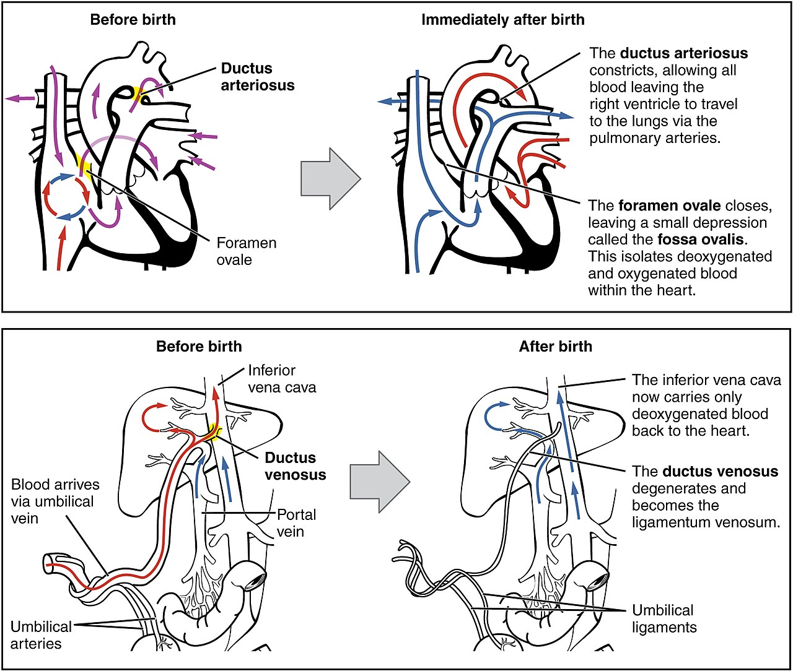
Anoxia: when oxygen is cut off
Throughout pregnancy the fetus receives oxygen through the placenta and umbilical cord; at birth that supply is severed and the lungs must take over within seconds. Anything that interrupts oxygen during this transition causes anoxia (a total lack of oxygen) or the milder hypoxia (a reduced supply). Common causes include a cord that becomes pinched or wrapped around the neck, a labor so prolonged that the placenta begins to fail, or a delayed first breath. Brief, mild oxygen loss is usually harmless, but prolonged anoxia can injure the brain, and it is one recognized cause of cerebral palsy, a disorder of movement and posture. Because the brain is so vulnerable, the whole apparatus of fetal monitoring exists mainly to catch falling oxygen early enough to act.
Prematurity and low birth weight
Two overlapping problems account for most newborn difficulty, and it is worth keeping them distinct. A preterm (premature) baby is one born before 37 weeks of gestation; a low-birth-weight (LBW) baby is one weighing less than 2,500 grams (about 5½ pounds), regardless of when it was born. A baby can be both, but not always: some low-weight babies are full-term but small for gestational age (SGA), having grown slowly in the womb. The thresholds sharpen as weight falls — very low birth weight under 1,500 g and extremely low birth weight under 1,000 g — because survival and long-term outcome track closely with size and maturity.
The preterm newborn's central problem is that its organs are unfinished. The lungs may lack surfactant, the soapy film that keeps air sacs from collapsing, producing respiratory distress syndrome; temperature control, feeding, and immune defenses are all immature. Modern neonatal intensive care has transformed the odds, and one of its gentlest tools is kangaroo care — holding the baby skin-to-skin against a parent's chest, which stabilizes heart rate, temperature, and breathing and supports the parent–infant bond.
| Complication | Definition | Why it threatens development |
|---|---|---|
| Anoxia / hypoxia | Total loss / reduction of oxygen around birth | The brain is highly vulnerable; prolonged loss can cause cerebral palsy or brain injury |
| Preterm (premature) | Born before 37 weeks gestation | Immature lungs (lack surfactant), poor temperature control, weak immunity |
| Low birth weight (LBW) | Under 2,500 g (~5½ lb) at birth | Higher risk of infection, feeding difficulty, and developmental delay |
| Small for gestational age | Underweight for gestational age, even if full-term | Signals restricted growth in the womb; distinct from prematurity |
- Anoxia (oxygen loss at birth) can injure the brain and is one cause of cerebral palsy.
- Preterm = born before 37 weeks; low birth weight = under 2,500 g — related but not identical.
- Preterm lungs may lack surfactant, causing respiratory distress syndrome.
- Kangaroo (skin-to-skin) care stabilizes fragile newborns and strengthens bonding.
Section 4Assessing the newborn

The Apgar score
Within the first minute of life, and again at five minutes, the newborn is given an Apgar score — the quick, standardized checkup devised in 1952 by anesthesiologist Virginia Apgar. It rates five signs, each from 0 to 2, for a total of 0 to 10. The five conveniently spell her name: Appearance (skin color), Pulse (heart rate), Grimace (reflex response to stimulation), Activity (muscle tone), and Respiration (breathing effort). A score of 7 to 10 means the baby is doing well; 4 to 6 signals that the newborn needs help, such as suctioning or oxygen; and below 4 is an emergency requiring immediate resuscitation. The Apgar is not a prediction of a child's future — it is a snapshot of how well the baby is making the transition to life outside the womb, and how urgently the team must act.
| Sign | Score 0 | Score 1 | Score 2 |
|---|---|---|---|
| Appearance (color) | Blue / pale | Body pink, limbs blue | Fully pink |
| Pulse (heart rate) | Absent | Below 100 bpm | Above 100 bpm |
| Grimace (reflex) | No response | Grimace | Cry, cough, or pull away |
| Activity (tone) | Limp | Some flexion | Active movement |
| Respiration | Absent | Slow, irregular | Strong cry |
Newborn reflexes
A newborn arrives with a repertoire of automatic, unlearned responses called reflexes, and checking them is a second window on the nervous system. Some are plainly for survival: rooting (stroke the cheek and the baby turns toward it, mouth open) and sucking work together to feed, and swallowing completes the chain. Others are primitive reflexes whose original purpose is less obvious — the Moro (startle) reflex flings the arms out and back at a sudden loss of support; the palmar grasp clamps tiny fingers around anything that touches the palm; the Babinski fans the toes when the sole is stroked; the stepping reflex makes walking motions when the baby is held upright; and the tonic neck reflex throws one arm out in a fencer's pose when the head turns. What makes these reflexes so useful clinically is that they follow a timetable: each should appear at birth and then disappear on schedule as the cerebral cortex matures. A reflex that is missing when it should be present, or one that lingers long past its time, can be an early sign of a neurological problem.
| Reflex | How to elicit it | Fades by (about) |
|---|---|---|
| Rooting | Stroke the cheek → head turns, mouth opens | 4 months (survival) |
| Sucking | Object in the mouth → rhythmic sucking | Persists / becomes voluntary |
| Moro (startle) | Sudden movement or noise → arms fling out, then embrace | 4–6 months |
| Palmar grasp | Press the palm → fingers curl and grip | 3–4 months |
| Babinski | Stroke the sole → toes fan outward | 8–12 months |
| Stepping | Hold upright, feet on a surface → stepping motions | 2 months |
- The Apgar score (0–10) rates Appearance, Pulse, Grimace, Activity, and Respiration at 1 and 5 minutes.
- A score of 7–10 is reassuring; 4–6 needs help; below 4 is an emergency.
- Newborn reflexes include survival reflexes (rooting, sucking) and primitive ones (Moro, grasp, Babinski, stepping, tonic neck).
- Reflexes should appear and then disappear on schedule; deviations can flag neurological concerns.
Section 5What newborns can do
Seeing, hearing, and the rest
The newborn who seems to do nothing but eat, sleep, and cry is in fact a busy perceiver, and researchers have found ingenious ways to ask a baby what it notices. Two tricks unlock the newborn mind. In the preference method, pioneered by Robert Fantz, a baby is shown two things at once and researchers time how long it looks at each — longer looking reveals a preference. In habituation, a baby is shown one stimulus until its interest wanes, then a new one; renewed attention proves the baby can tell the two apart. Using these methods, we have learned that vision is the least mature sense at birth: a newborn sees roughly 20/400, blurry beyond a short range, and focuses best at about 8 to 12 inches — not coincidentally the distance to a caregiver's face during feeding. Yet even this fuzzy vision is choosy: newborns prefer faces, high contrast, and curves, and within days come to prefer their own mother's face.
The other senses are further along. Hearing is nearly mature, having been working for months in the womb: newborns turn toward sounds, prefer the higher pitch of speech, and — in a classic demonstration by DeCasper and Fifer — will suck in a special pattern to hear their own mother's voice over a stranger's. Smell is keen enough that a breastfed newborn will turn toward a pad worn against its own mother's breast rather than another woman's. Taste shows clear preferences too — newborns relax and suck to sweet, and grimace at bitter and sour. And touch, the most mature sense of all, is the channel through which comfort, warmth, and bonding first flow. Far from a blank slate, the newborn is primed from the first hour to find, and prefer, the people who will care for it.
| Sense | Maturity at birth | What the newborn prefers |
|---|---|---|
| Vision | Least mature; ~20/400; clear at 8–12 in | Faces, contrast, curves; the mother's face within days |
| Hearing | Nearly mature; working before birth | Speech sounds; the mother's voice; the native language's rhythm |
| Smell | Well developed | The mother's scent; turns from noxious odors |
| Taste | Well developed | Sweet; rejects bitter and sour |
| Touch | Most mature | Warmth and gentle contact; central to bonding |
- The preference method (looking time) and habituation (renewed interest) let researchers read a newborn's mind.
- Vision is least mature (~20/400, clearest at 8–12 in) but already prefers faces and the mother's face.
- Hearing, smell, and taste are well developed; newborns prefer the mother's voice and scent and the taste of sweet.
- The senses are calibrated toward the caregiver, seeding early attachment.
The chapter in one breath
- Labor has three stages — dilation of the cervix, delivery of the baby, and afterbirth (the placenta) — driven by an oxytocin positive feedback loop.
- Births happen in hospitals, birth centers, or at home, with obstetricians, midwives, and supportive doulas.
- Medicated birth (commonly an epidural) manages pain with drugs; natural/prepared birth (Lamaze, Bradley) minimizes them; a cesarean delivers surgically when needed.
- Anoxia can injure the newborn brain (a cause of cerebral palsy); prematurity and low birth weight are related but distinct threats.
- The Apgar score (0–10) checks color, pulse, reflex, tone, and breathing at 1 and 5 minutes.
- Newborn reflexes — rooting, sucking, Moro, grasp, Babinski, stepping, tonic neck — should appear and fade on schedule, revealing the maturing brain.
- Newborns are surprisingly capable perceivers: vision is least mature, but hearing, smell, and taste are strong, and every sense leans toward the caregiver.
ReferenceWords worth knowing
A quick reference for the terms in this chapter — skim it now, or circle back whenever a word trips you up.
- Afterbirth (third stage)
- The final stage of labor, in which the placenta and umbilical cord are expelled after the baby is born.
- Anoxia
- A total lack of oxygen around the time of birth; prolonged anoxia can damage the brain (hypoxia is a partial reduction).
- Apgar score
- A 0–10 rating of a newborn's Appearance, Pulse, Grimace, Activity, and Respiration, taken at 1 and 5 minutes.
- Babinski reflex
- A newborn reflex in which the toes fan outward when the sole of the foot is stroked; normally fades by 8–12 months.
- Cesarean section
- Surgical delivery of a baby through incisions in the abdomen and uterus rather than through the birth canal.
- Crowning
- The moment during delivery when the widest part of the baby's head appears at the vaginal opening.
- Dilation
- The opening of the cervix (to a full 10 cm) during the first stage of labor; paired with effacement, its thinning.
- Doula
- A trained companion who provides continuous emotional and physical support during birth but does not deliver the baby.
- Epidural
- A regional anesthetic injected near the spinal cord that numbs the lower body while the mother stays awake.
- Habituation
- The waning of attention to a repeated stimulus; used to test whether a newborn can tell two stimuli apart.
- Kangaroo care
- Holding a newborn skin-to-skin against a parent's chest to stabilize its vital signs and support bonding.
- Low birth weight (LBW)
- A birth weight under 2,500 g (~5½ lb), regardless of gestational age; below 1,500 g is very low birth weight.
- Moro reflex
- The newborn startle reflex — arms fling out and then embrace — in response to a sudden loss of support; fades by 4–6 months.
- Neonate
- A newborn infant, generally in the first four weeks after birth.
- Oxytocin
- The hormone that drives uterine contractions through a positive feedback loop; also used synthetically to induce labor.
- Placenta
- The organ that supplies the fetus with oxygen and nutrients during pregnancy and is delivered as the afterbirth.
- Preference method
- A technique that infers what a newborn notices from how long it looks at one stimulus versus another.
- Preterm (premature)
- Born before 37 completed weeks of gestation; often, but not always, also low in birth weight.
- Reflex
- An automatic, unlearned response to a specific stimulus; newborn reflexes appear and then disappear on a developmental timetable.
- Rooting reflex
- A survival reflex in which a stroked cheek prompts the newborn to turn its head and open its mouth to feed.
- Surfactant
- A film that keeps the lungs' air sacs from collapsing; when it is lacking in preterm babies, respiratory distress syndrome results.
- Transition
- The intense final phase of the first stage of labor, as the cervix reaches full dilation.
Check yourself
Infancy: Body & Mind
No other stretch of life changes as fast as the first two years. A newborn who cannot hold up her own head becomes, in roughly twenty-four months, a walking, talking person who hunts for a hidden toy and names the family dog. This chapter follows that transformation from the outside in and the inside out — the body that grows head-first, the brain that wires itself against experience, the reflexes that give way to reaching and walking, the senses that come online at different speeds, the first flickers of thought, and the extraordinary emergence of language. Nothing here is trivial; every milestone you will meet is a foundation the rest of development is built on.
By the end of this chapter you can
- Describe the pace and pattern of physical growth in the first two years, including the cephalocaudal and proximodistal directions.
- Explain how the infant brain develops through synaptogenesis, synaptic pruning, and myelination, and what experience-expectant plasticity means.
- Distinguish newborn reflexes from voluntary movement and identify the major survival and primitive reflexes.
- Sequence the major gross- and fine-motor milestones from head control to walking and the pincer grasp.
- Summarize what infants can see, hear, smell, and taste, and the perceptual preferences they show.
- Describe Piaget's sensorimotor stage, its substages, and the gradual emergence of object permanence.
- Trace the roots of language from cooing and babbling to first words and telegraphic speech.
- Compare learning, nativist, and social-interactionist accounts of how language emerges.
Section 1Growth and the brain

How the body grows
The average newborn arrives weighing about 7 pounds (3.4 kg) and measuring roughly 20 inches (50 cm). Growth from there is faster than it will ever be again: most babies double their birth weight by about 5 months and triple it by their first birthday, while adding half again to their length. If that pace continued, a two-year-old would be the size of a small car by kindergarten — which is exactly why growth slows so sharply after infancy.
Growth is not only fast, it is orderly, and it follows two directions worth memorizing. The cephalocaudal principle means growth and control proceed from the head downward — a newborn's head is a full quarter of her body length, and she masters her head, then trunk, then legs. The proximodistal principle means development proceeds from the center outward — the shoulders and hips come under control before the hands and feet, and the whole arm swipes before a single finger points. These two rules quietly explain the order of nearly every motor milestone in the next section.
Building the brain
If the body's growth is dramatic, the brain's is staggering. At birth the brain is only about 25% of its adult weight; by age two it has reached roughly 75%. Yet the newborn already has most of the neurons she will ever own — on the order of 85 billion. What changes is not the number of neurons so much as the connections between them. In a burst called synaptogenesis, neurons sprout an exuberant tangle of synapses, at a peak rate estimated in the tens of thousands of new connections per second across the first months of life. The infant brain deliberately overbuilds, making far more links than it will keep.
Two later processes turn that overgrowth into a working brain. Synaptic pruning eliminates the connections that go unused — a "use it or lose it" sculpting in which experience decides which circuits survive. And myelination, the wrapping of axons in a fatty insulating sheath, speeds neural transmission dramatically; it begins prenatally and continues for years, moving (as growth does) from lower, older brain regions upward toward the cortex. Together, overproduction, pruning, and insulation make the brain both efficient and exquisitely tuned to the world the child actually lives in.
Experience shapes the wiring
Because pruning is guided by use, early experience is not a decoration on brain development — it is part of the mechanism. Psychologists distinguish experience-expectant plasticity, in which the brain counts on inputs virtually every infant receives (patterned light, voices, being handled) to fine-tune universal systems like vision and hearing, from experience-dependent plasticity, in which the brain wires itself around the particular experiences a given child happens to have (a specific language, a specific face). The practical upshot is the idea of a sensitive period: a window during which the right input has an outsized effect, and its absence can leave a lasting gap.
| By this age | Weight | Length/height | Brain (of adult size) |
|---|---|---|---|
| Birth | ~7 lb (3.4 kg) | ~20 in (50 cm) | ~25% |
| 5 months | Double birth weight | — | — |
| 12 months | Triple birth weight | ~50% longer than birth | ~65–70% |
| 24 months | ~4× birth weight | ~half of adult height | ~75% |
- Infants grow faster than at any later age — weight doubles by ~5 months, triples by ~12 months.
- Growth follows the cephalocaudal (head-to-foot) and proximodistal (center-to-periphery) directions.
- The brain reaches ~75% of adult size by age two through synaptogenesis, pruning, and myelination.
- Pruning is guided by experience, so early input shapes the brain during sensitive periods.
Section 2Motor development
Born moving: the reflexes
Newborns are not blank and still; they arrive with a repertoire of automatic, stereotyped movements called reflexes. Some are clearly protective survival reflexes: the rooting reflex turns the baby's head toward a cheek that is stroked, the sucking reflex follows, and together they make feeding possible before any of it is learned. Others are primitive reflexes whose purpose is less obvious — the Moro (startle) reflex flings the arms out and back at a sudden loss of support; the palmar grasp closes the hand around anything that touches the palm; the stepping reflex produces walking-like movements when the baby is held upright; and the asymmetrical tonic neck reflex throws one arm out in a "fencing" posture when the head turns.
Most primitive reflexes disappear on a schedule over the first half-year as the cortex matures and takes command of movement. That disappearance is itself diagnostic: a reflex that never appears, or one that lingers well past its expected exit, can be an early sign of a neurological problem. Reflexes, in other words, are both the newborn's starter kit and one of the first windows clinicians have onto how the brain is coming together.
Gross motor: from head to foot
Voluntary gross motor skills — the large movements of the whole body — emerge in a sequence that follows the cephalocaudal rule almost perfectly. Head control comes first (steady by about 2 months), then rolling over (~4 months), sitting without support (~6 months), crawling (~8 months), pulling to stand (~9 months), cruising along furniture, and finally independent walking around the first birthday. The sequence is remarkably consistent across the world; the timing is not. First unaided steps can normally appear anywhere from about 9 to 17 months, and caregiving practices matter — babies given daily practice at sitting or stepping, as in some cultures, reach those milestones earlier.
Modern researchers no longer see this march as simple biological unfolding. In dynamic systems theory, associated with Esther Thelen, each new skill emerges from the interaction of many factors at once — muscle strength, body proportions, balance, motivation, and the specific task — rather than from a maturational clock ticking alone. Walking appears when a baby who wants to reach across the room finally has the leg strength and postural control to make it happen.
Fine motor: the road to the pincer grasp
Fine motor skills — the small, precise movements of the hands and fingers — develop along the proximodistal path from whole-arm to fingertip. A newborn's grasp is a reflex; by about 3 months an infant can bat at a dangling toy, by 4–5 months reach and rake objects into the palm, and by around 9 months oppose thumb and forefinger in a delicate pincer grasp that can pick up a single crumb. That opposable pinch is a quietly momentous achievement — it is the hand movement that later makes writing, buttoning, and tool use possible.
| Approx. age | Gross motor | Fine motor |
|---|---|---|
| 2 months | Holds head steady when upright | Hands begin to open from fists |
| 4 months | Rolls over | Reaches for and bats at objects |
| 6 months | Sits without support | Rakes objects; passes between hands |
| 8–9 months | Crawls; pulls to stand | Pincer grasp emerges |
| 12 months | Stands alone; first steps | Puts objects into a container; releases on purpose |
| 18–24 months | Walks well; runs; climbs stairs | Scribbles; stacks a few blocks |
- Newborns begin with reflexes — survival reflexes (rooting, sucking) and primitive reflexes (Moro, grasp, stepping) that mostly fade by ~4–6 months.
- Gross motor milestones follow the cephalocaudal order: head, roll, sit, crawl, stand, walk.
- Fine motor skills follow the proximodistal path, culminating in the pincer grasp (~9 months).
- Dynamic systems theory frames each skill as emerging from many interacting factors, not a fixed maturational clock; timing varies with practice and culture.
Section 3Sensation and perception

Vision comes into focus
Of all the senses, vision is the least ready at birth. A newborn's acuity is roughly 20/400 — she sees at 20 feet what an adult with sharp vision sees at 400 — and she focuses best at about 8 to 12 inches, which happens to be the distance to a caregiver's face during feeding. Color vision is limited at first and reaches near-adult richness by about 2 to 4 months. Acuity then improves rapidly, approaching adult levels within the first year as the eye and the visual cortex mature. The newborn's world is not a blur of nothing; it is a soft, close-up, high-contrast world centered on the people holding her.
Researchers read the preverbal mind through where babies look. Using the preferential-looking method, Robert Fantz showed that even newborns gaze longer at some patterns than others — they prefer contours, curves, complexity, and, above all, the arrangement of features that makes up a human face. This face bias is present in crude form within hours of birth and helps guarantee that the very first thing a baby attends to is the caregiver she depends on.
The senses that arrive ready
Hearing, by contrast, is well developed before birth. The fetus can hear in the last trimester, and newborns already prefer their mother's voice to a stranger's and prefer the language and stories they were exposed to in the womb — evidence that learning begins prenatally. Newborns turn toward sounds, discriminate a wide range of speech sounds, and show a striking preference for the sing-song, high-pitched, exaggerated speech that adults naturally use with babies.
Smell and taste are also remarkably mature. Newborns turn toward the scent of their own mother's milk and away from foul odors, and they show a clear preference for sweet tastes over sour or bitter ones — a bias that suits an infant whose first and ideal food is sweet breast milk. And the senses do not work in isolation: infants show early intermodal perception, matching what they hear to what they see, such as looking longer at a face whose lip movements match a sound they are hearing.
Depth, and what babies prefer
The most famous demonstration of infant perception is the visual cliff, built by Eleanor Gibson and Richard Walk. A baby is placed on a sturdy glass surface, half of which sits over a patterned floor and half over an apparent drop. Most infants old enough to crawl will not venture out over the "deep" side even when a parent beckons — evidence that by the time they are mobile, they perceive depth and treat the drop as real. Interestingly, wariness of the cliff seems tied to the experience of self-produced movement: babies grow cautious of heights after, not before, they begin to crawl.
| Sense | At birth | Reaches near-adult level |
|---|---|---|
| Vision | Blurry (~20/400); focuses best at 8–12 in | Acuity within ~1 year; color by 2–4 months |
| Hearing | Well developed; prefers mother's voice | Refined over the first year |
| Smell | Recognizes mother's scent; avoids foul odors | Mature at birth |
| Taste | Prefers sweet; rejects bitter/sour | Mature at birth |
| Touch | Highly sensitive; basis of reflexes | Mature at birth |
- Vision is the least mature sense at birth (~20/400), sharpest at face distance, and reaches near-adult acuity within a year.
- Infants prefer faces (Fantz's preferential looking), their mother's voice, sweet tastes, and familiar scents.
- Hearing, smell, and taste are largely functional at birth; learning even begins prenatally.
- The visual cliff shows that crawling infants perceive depth, wariness rising with self-produced movement.
Section 4Sensorimotor cognition
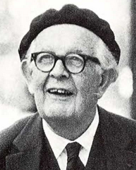
Thinking by doing
Jean Piaget called the first two years the sensorimotor stage — the first of his four stages of cognitive development, followed by the preoperational, concrete operational, and formal operational stages of childhood and adolescence. The name captures his central claim: infants think with their senses and their actions rather than with symbols and words. A baby "knows" a rattle not as an idea but as something to be grasped, shaken, mouthed, and dropped. Through this handling the infant builds schemes — organized patterns of action — and gradually adapts them to a widening world.
Much of that adapting runs on what Piaget called circular reactions: the infant stumbles onto an interesting result and repeats it over and over. Primary circular reactions center on the baby's own body (sucking a thumb); secondary ones act on objects (shaking a rattle to hear it again); tertiary ones, near the end of infancy, become little experiments (dropping a spoon from different heights to see what happens). In that last playful variation Piaget saw the birth of curiosity and, eventually, of thought itself.
The six substages
Piaget divided the sensorimotor stage into six substages, each a step away from pure reflex and toward genuine mental representation. The infant moves from exercising built-in reflexes, to habits centered on her own body, to acting on the outside world, to combining actions into intentional goal-directed sequences, to actively experimenting, and finally — at around 18 to 24 months — to mental representation, the ability to picture things and actions in the mind. The arrival of representation is the true finish line of infancy: it makes possible language, pretend play, and deferred imitation, in which a toddler copies an action she saw hours or days earlier.
| Substage (approx. age) | Hallmark |
|---|---|
| 1. Reflexes (0–1 mo) | Exercising and refining inborn reflexes |
| 2. Primary circular reactions (1–4 mo) | Repeating pleasurable actions on own body |
| 3. Secondary circular reactions (4–8 mo) | Repeating actions that affect objects |
| 4. Coordination of secondary schemes (8–12 mo) | Intentional, goal-directed behavior; first clear object permanence |
| 5. Tertiary circular reactions (12–18 mo) | Trial-and-error experimentation |
| 6. Mental representation (18–24 mo) | Symbolic thought; deferred imitation; pretend play begins |
Object permanence and its limits
The signature achievement of the sensorimotor stage is object permanence — understanding that objects continue to exist when they cannot be seen, heard, or touched. Piaget argued that young infants lack it entirely: hide a toy under a cloth from a 5-month-old and, for her, it is simply gone ("out of sight, out of mind"). Around 8 months babies begin to search for hidden objects, but they make a revealing mistake Piaget named the A-not-B error: having found a toy under cloth A several times, they keep reaching for A even after watching it hidden under cloth B. Only by the end of infancy is object permanence fully secure.
Later researchers argued that Piaget underestimated infants because his tasks demanded motor skills babies did not yet have. Using gentler violation-of-expectation methods — measuring how long babies stare at "impossible" events — Renée Baillargeon and others found signs of object permanence months earlier than reaching tasks suggest. The modern verdict keeps Piaget's stages as a brilliant map of the sequence of cognition while revising his timetable: infants often know more, and know it sooner, than his reaching tests could reveal.
- Piaget's sensorimotor stage (birth–2) is the first of four stages; infants think through sensing and acting, building schemes.
- Learning advances through primary, secondary, and tertiary circular reactions across six substages.
- Object permanence emerges gradually; the A-not-B error (~8–12 months) shows it is not yet complete.
- Newer methods (Baillargeon) reveal object permanence earlier than Piaget's reaching tasks implied — his sequence holds, his timetable was conservative.
Section 5The roots of language
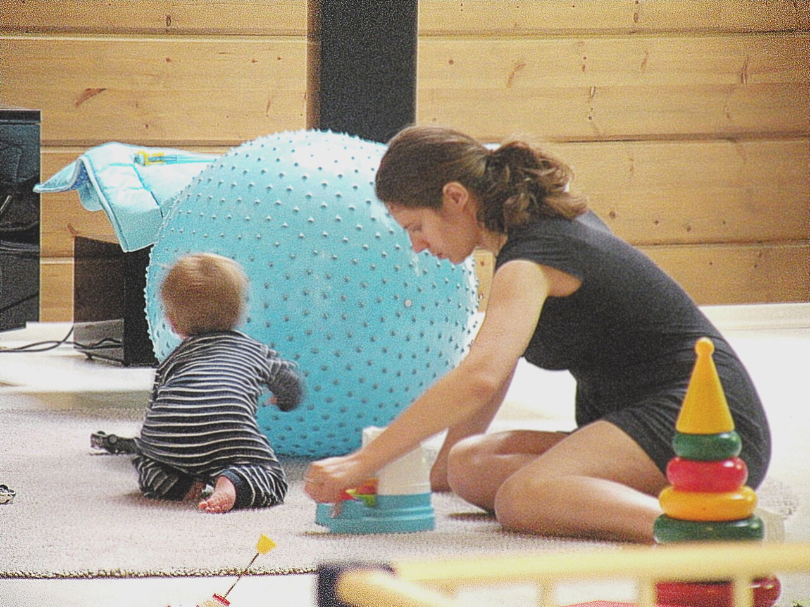
Before the first word
Language does not begin with words; it begins with sound and turn-taking. In the first weeks infants cry and make reflexive noises. Around 2 months comes cooing — drawn-out vowel sounds ("oooh," "aaah") produced in contentment and often traded back and forth with a delighted adult. Around 6 months cooing gives way to babbling: repeated consonant-vowel strings like "ba-ba-ba" and "da-da-da." Strikingly, babies everywhere — including deaf infants, who babble with their hands when exposed to sign language — begin with a similar universal repertoire before their babble drifts toward the particular sounds of the language around them.
Underneath the noise, comprehension runs ahead of production. Infants understand words before they can say them, and their ears are busy learning structure. Newborns can discriminate the speech sounds of every language; but over the first year, in a process called perceptual narrowing (documented by Janet Werker and colleagues), they lose the ability to hear contrasts their native language ignores and sharpen the ones it uses — going from "citizens of the world" to specialists in their mother tongue. Babies also track the statistics of speech, using which syllables tend to follow which to find the boundaries between words in a stream of talk.
From first words to two
The first words typically arrive around the first birthday and are usually names for important people, objects, and events ("mama," "dog," "bye"). Early on a single word does the work of a whole sentence — a holophrase in which "milk!" may mean "I want milk," "that is milk," or "my milk is gone," disambiguated only by context and gesture. Vocabulary grows slowly at first, then many toddlers show a naming explosion or vocabulary spurt in the second year. By around 24 months children combine two words into telegraphic speech — "more juice," "doggy gone" — stripped, like a telegram, to the words that carry the meaning.
How language emerges
How infants accomplish all this so fast is one of the great debates in the field, and three broad answers frame it. The learning view, associated with B. F. Skinner, held that children acquire language through imitation and reinforcement — adults reward sounds and words, shaping speech like any other behavior. The nativist view, argued forcefully by Noam Chomsky, countered that children learn grammar far too quickly and creatively for reinforcement alone; he proposed an inborn language acquisition device and a universal grammar that prepare the human brain to acquire whatever language it meets. The social-interactionist view, in the spirit of Lev Vygotsky, stresses that language grows out of the communicative relationship itself — children are driven to connect, and caregivers scaffold them within it.
That scaffolding has a characteristic sound. Adults across cultures speak to babies in child-directed speech (often called "parentese") — higher-pitched, slower, sing-song, with exaggerated vowels and simple, repetitive phrasing. Far from being silly, it captures infant attention, marks word boundaries, and highlights the sounds of the language, and infants reliably prefer it. Most researchers now see language as the product of all three forces together: a brain prepared to learn language, immersed in a flood of speech, inside a relationship that makes communicating irresistible.
| Approx. age | Language milestone |
|---|---|
| Birth | Crying and reflexive sounds; prefers speech and mother's voice |
| ~2 months | Cooing — vowel sounds in social exchange |
| ~6 months | Babbling — consonant-vowel strings ("ba-ba") |
| ~8–10 months | Understands some words; uses gestures (pointing, waving) |
| ~12 months | First words; single-word holophrases |
| ~18 months | Vocabulary spurt (naming explosion) |
| ~24 months | Two-word telegraphic speech ("more juice") |
- Prelinguistic sequence: crying → cooing (~2 mo) → babbling (~6 mo) → first words (~12 mo).
- Comprehension precedes production, and perceptual narrowing tunes the infant ear to the native language over the first year.
- Single-word holophrases give way to two-word telegraphic speech by ~24 months.
- Language reflects learning (Skinner), nativist (Chomsky), and social-interactionist (Vygotsky) forces together, aided by child-directed speech.
The chapter in one breath
- Infancy brings the fastest growth of life — weight triples in a year — following the cephalocaudal and proximodistal directions.
- The brain overbuilds connections through synaptogenesis, then sculpts them by experience-guided pruning and speeds them by myelination, reaching ~75% of adult size by age two.
- Movement begins as reflexes and gives way to voluntary gross (head→walk) and fine (reach→pincer grasp) motor skills, in a fixed sequence but flexible timing.
- The senses come online at different speeds — vision slowest, hearing/smell/taste nearly ready — and infants prefer faces, the mother's voice, and sweetness; the visual cliff reveals depth perception.
- In Piaget's sensorimotor stage, infants think through action and gradually master object permanence, with the A-not-B error marking its incompleteness.
- Language grows from cooing and babbling to first words and telegraphic speech, tuned by perceptual narrowing and nourished by child-directed speech.
- Body and mind advance together, each milestone a foundation the next stage of development is built upon.
ReferenceWords worth knowing
A quick reference for the terms in this chapter — skim it now, or circle back whenever a word trips you up.
- A-not-B error
- An infant's mistake of reaching for a hidden object where it was previously found (location A) rather than where it was just hidden (location B); a sign that object permanence is not yet complete.
- Babbling
- The repetition of consonant-vowel syllables ("ba-ba-ba") that begins around 6 months, at first universal, then narrowing toward the native language.
- Cephalocaudal principle
- The head-to-foot direction of growth and motor control — the head develops before the trunk, which develops before the legs.
- Child-directed speech
- The higher-pitched, slower, sing-song speech ("parentese") adults use with infants, which captures attention and highlights the sounds of language.
- Circular reaction
- In Piaget's theory, an infant's repetition of an action that produced an interesting result; primary (own body), secondary (objects), and tertiary (experimentation) forms appear in turn.
- Cooing
- Drawn-out vowel sounds produced in contentment beginning around 2 months, often exchanged with a caregiver.
- Deferred imitation
- Copying an action seen at an earlier time; evidence of mental representation, emerging near the end of the sensorimotor stage.
- Fine motor skills
- Small, precise movements of the hands and fingers, such as grasping and the pincer grasp.
- Gross motor skills
- Large movements involving the whole body, such as sitting, crawling, and walking.
- Holophrase
- A single word used to express a whole thought ("milk!"), typical of the earliest word use.
- Myelination
- The coating of axons in a fatty sheath that greatly speeds neural transmission; begins prenatally and continues for years.
- Object permanence
- The understanding that objects continue to exist even when they cannot be perceived; a hallmark of the sensorimotor stage.
- Perceptual narrowing
- The first-year process by which infants lose sensitivity to speech (and face) distinctions their environment does not use, and sharpen the ones it does.
- Pincer grasp
- Picking up small objects with opposed thumb and forefinger, emerging around 9 months.
- Proximodistal principle
- The center-to-periphery direction of development — control of the trunk and shoulders precedes control of the hands and fingers.
- Reflex
- An automatic, involuntary response to a stimulus; newborns show survival reflexes (rooting, sucking) and primitive reflexes (Moro, grasp, stepping).
- Scheme
- In Piaget's theory, an organized pattern of thought or action used to make sense of experience.
- Sensorimotor stage
- Piaget's first stage of cognitive development (birth–2), in which infants know the world through sensing and acting.
- Synaptic pruning
- The elimination of unused neural connections, guided by experience — a "use it or lose it" refinement of the brain.
- Synaptogenesis
- The rapid formation of synapses (connections between neurons), which peaks in infancy.
- Telegraphic speech
- Two-word utterances ("more juice") that keep only the essential words, appearing around 24 months.
- Visual cliff
- An apparatus with a glass-covered apparent drop-off, used by Gibson and Walk to test depth perception in crawling infants.
Check yourself
Infancy: Social & Emotional
Long before a baby can walk or speak, a whole emotional life is already underway. In the first year, an infant sorts the world into what is safe and what is not, learns whose face means comfort, and begins the lifelong project of managing feeling. This chapter follows four threads that braid together across infancy and toddlerhood — the temperament a child is born with, the attachment they form to a caregiver, the earliest crises of trust and independence, and the emotions that unfold on a surprisingly regular schedule. Woven through all of them is a single truth: development is a relationship, not a solo performance. The people who hold, feed, comfort, and respond to a baby are not the backdrop to this story; they are half of it.
By the end of this chapter you can
- Define temperament and describe the easy, difficult, and slow-to-warm-up profiles.
- Explain goodness of fit and why it predicts outcomes better than temperament alone.
- Summarize Bowlby's attachment theory and the ideas of the secure base and internal working model.
- Describe Ainsworth's Strange Situation and the four attachment patterns it reveals.
- State the central conflict and virtue of Erikson's first two psychosocial stages.
- Lay out the rough timetable of emotional development and explain social referencing.
- Explain how responsive caregiving, non-parental childcare, and early adversity shape the developing infant.
Section 1Temperament

What temperament is
Ask any parent of two children and you will hear the same thing: they were different from day one. One nursed on a schedule, slept through the night, and greeted strangers with a grin; the other startled at every sound, cried hard and long, and took a week to accept a new food. That early, biologically based style of responding to the world — how intensely a baby reacts, how quickly they settle, how they approach the unfamiliar — is called temperament. It is not the same as personality, which is built over years from temperament plus experience, values, and choices. Temperament is the raw material: the emotional and behavioral tendencies a child shows before the world has had much chance to shape them.
The classic map of temperament comes from the New York Longitudinal Study, begun in the 1950s by Alexander Thomas and Stella Chess. They rated babies on nine dimensions — activity level, rhythmicity (regularity of sleeping and eating), approach or withdrawal to new things, adaptability, intensity of reaction, threshold of responsiveness, quality of mood, distractibility, and attention span. When they looked at how these traits clustered, three recognizable profiles emerged, along with a large group of children who did not fit neatly into any one of them.
Three classic profiles
About forty percent of the babies were easy: regular in their rhythms, positive in mood, and quick to accept new people and situations. Roughly ten percent were difficult: irregular, intense, slow to adapt, and prone to negative moods and loud protest. Another fifteen percent were slow-to-warm-up: mild but wary, tending to withdraw from novelty at first and needing repeated, low-pressure exposure before they came around. The remaining third were a blend that resisted a single label — a reminder that these categories describe tendencies, not fixed types.
| Style | Share of babies | What it looks like | Caregiving that fits |
|---|---|---|---|
| Easy | ~40% | Regular routines, cheerful mood, adapts readily to new foods, people, places | Enjoyable and low-friction; still needs attention, not just convenience |
| Difficult | ~10% | Irregular, intense reactions, slow to adapt, frequent negative mood and hard crying | Patience, calm, predictable structure; avoid escalating the intensity |
| Slow-to-warm-up | ~15% | Mild but cautious; withdraws from novelty, warms with gentle repeated exposure | Gradual, pressure-free introductions; do not push or label as “shy” |
| Blend / unclassified | ~35% | Mix of traits that does not fall cleanly into one profile | Read the individual child rather than the category |
A related line of work by Jerome Kagan focused on one dimension in particular: behavioral inhibition, the tendency to react to unfamiliar people and events with caution, wariness, and physiological arousal. Highly inhibited infants — roughly the same group Thomas and Chess would call slow-to-warm-up — show measurable differences in heart rate and stress reactivity, and are somewhat more likely to be reserved later in childhood. Yet even here the link is a tendency, not a sentence: many inhibited babies grow into comfortable, sociable children, especially when caregivers gently support rather than force their approach to the new.
Goodness of fit
The most useful idea Thomas and Chess left us is not the list of types but the concept of goodness of fit — the match between a child's temperament and the demands, expectations, and style of their environment. A slow-to-warm-up toddler thrust into a loud, ever-changing daycare with a brisk caregiver has a poor fit and may struggle; the same child in a calm room with an adult who allows a slow approach has a good fit and may thrive. What predicts a child's outcome is rarely the temperament in isolation. It is whether the people around the child adjust to who the child actually is.
- Temperament is the early, biologically based style of emotional and behavioral response; personality is built on top of it.
- Thomas and Chess named three profiles — easy (~40%), difficult (~10%), and slow-to-warm-up (~15%) — with a large blended group.
- Kagan's behavioral inhibition describes wary, physiologically reactive infants who often, but not always, stay reserved.
- Goodness of fit — temperament matched to environment — predicts outcomes better than temperament alone.
Section 2Attachment

Bowlby: the biology of the bond
The British psychiatrist John Bowlby proposed that the tie between an infant and a caregiver is not a byproduct of feeding, as earlier theories held, but an evolved behavioral system in its own right. A human infant cannot survive alone; the ones who stayed close to a protector — who cried when separated, smiled to draw the adult near, and clung when frightened — were the ones who lived. Attachment, in Bowlby's view, is the emotional machinery that keeps a helpless baby near a source of protection. Its biological goal is proximity; its felt goal is security.
Two of Bowlby's ideas travel everywhere in this field. The first is the secure base: a trusted caregiver serves as a home port from which the infant ventures out to explore, returning for reassurance when the world gets frightening. Watch a securely attached toddler at a playground and you will see the pattern — a foray toward the slide, a glance back to check the parent is still there, then a bolder foray. The second is the internal working model: from thousands of small interactions, the baby builds an unconscious template of what relationships are like — whether people can be counted on, whether the self is worth responding to — a model that quietly shapes expectations of others for years. Bowlby also argued that early infancy is a sensitive period for forming this first bond, a claim later research softened but did not overturn. Harry Harlow's famous studies with infant monkeys, who clung to a soft cloth “mother” over a wire one that fed them, drove home Bowlby's central point: what the infant seeks first is not food but contact comfort.
Ainsworth's Strange Situation
Bowlby's collaborator Mary Ainsworth turned the theory into something measurable. Her laboratory procedure, the Strange Situation, is a carefully staged sequence of about eight brief episodes for a roughly one-year-old: the baby and caregiver enter an unfamiliar room, a stranger joins them, the caregiver leaves and returns, leaves again, and returns once more. The point is not the separation itself but the reunion — how the baby uses the caregiver, and especially how the baby behaves when the caregiver comes back, reveals the quality of the bond.
Ainsworth found that securely attached babies used the parent as a secure base, protested at separation, and were readily comforted at reunion — then went back to play. Others showed organized but insecure patterns: some seemed indifferent, some inconsolable. Years later, Mary Main and Judith Solomon identified a fourth group whose behavior had no coherent strategy at all.
Four patterns of attachment
| Pattern | In the Strange Situation | Typical caregiving history | Roughly (Western samples) |
|---|---|---|---|
| Secure (B) | Explores using parent as base; distressed at separation; comforted quickly at reunion, then resumes play | Sensitive, consistent, responsive to signals | ~60–65% |
| Insecure-avoidant (A) | Little distress at separation; ignores or avoids parent at reunion; treats stranger similarly | Consistently unresponsive, rejecting, or intrusive | ~15–20% |
| Insecure-resistant / ambivalent (C) | Very distressed at separation; seeks yet resists contact at reunion — clings and pushes away, hard to soothe | Inconsistent — responsive sometimes, unavailable other times | ~10–15% |
| Disorganized (D) | Contradictory, confused behavior — freezing, approaching then backing away; no coherent strategy | Frightening, frightened, or abusive/neglectful care | ~5–15% |
The strongest predictor of a secure attachment is caregiver sensitivity — the knack of reading a baby's signals accurately and responding promptly and warmly. It is not about being perfect or endlessly available; it is about being reliably readable. Attachment patterns also vary across cultures in their proportions — more avoidant classifications appear in samples that prize early independence, more resistant ones where infants are rarely apart from mothers — a caution against reading the categories as universal grades rather than descriptions.
- Bowlby saw attachment as an evolved system for keeping infants near protection, giving us the secure base and internal working model.
- Ainsworth's Strange Situation reads attachment quality from the infant's behavior at reunion.
- The four patterns are secure, insecure-avoidant, insecure-resistant, and disorganized.
- Caregiver sensitivity — accurate, prompt, warm responding — is the best predictor of security.
Section 3Trust and autonomy

Erikson's psychosocial vision
Erik Erikson reimagined development as a lifelong series of eight psychosocial stages, each organized around a central tension between two pulls. At every stage the person faces a “crisis” — not a catastrophe, but a turning point — and how it is resolved leaves the person with a lasting strength, or virtue, and colors how the next crisis is met. Where Freud emphasized bodily drives, Erikson emphasized the social world: the crises are worked out in relationships, first with caregivers, later with peers, partners, and society. The first two stages fall squarely in the years this chapter covers, and they map beautifully onto the attachment and temperament themes we have just met.
Stage 1: Trust versus mistrust
The first stage, spanning roughly the first year, pits trust against mistrust. The infant's whole question is elemental: Is the world a dependable place? When hunger is met with feeding, distress with comfort, and cold with warmth — reliably, warmly, and soon enough — the baby builds a bedrock sense that needs will be answered and people can be counted on. Erikson called the resulting strength hope. When care is neglectful, harsh, or wildly unpredictable, the infant instead learns a wary, guarded stance toward the world. Notice how closely this echoes attachment: the sensitive, responsive caregiving that produces a secure attachment is the same caregiving that resolves the trust crisis in favor of hope.
Stage 2: Autonomy versus shame and doubt
The second stage, roughly ages one to three, brings autonomy versus shame and doubt. The toddler is suddenly mobile, willful, and capable — walking, climbing, feeding themselves, insisting “me do it” and, gloriously, “no.” The task is to develop a sense of independent will: the confidence that one can act on the world and make things happen. Caregivers who allow safe exploration and reasonable choices — which shirt, which snack, a chance to try the zipper before help arrives — foster autonomy and its virtue, will. Caregivers who are over-controlling, mocking, or impatient with a toddler's fumbling and accidents can instead instill shame and doubt, a nagging sense that one's own impulses are bad and one's efforts inadequate. Even toilet training, Erikson's chosen example, is really about this larger question of who controls the child's own body and choices.
| Stage | Age | Central conflict | Virtue if resolved | If unresolved |
|---|---|---|---|---|
| 1. Trust vs. mistrust | Birth–~1 yr | Is the world dependable? | Hope | Wariness, insecurity, difficulty trusting |
| 2. Autonomy vs. shame & doubt | ~1–3 yr | Can I act on my own? | Will | Shame, self-doubt, over-dependence |
Erikson did not think a stage was ever “finished.” A person who leaves infancy with a good balance — mostly trust, with a healthy sliver of caution; mostly autonomy, with the humility to accept help — carries that resolution forward as a resource. Later experiences can revise an early outcome in either direction, but the tone set in the first years is the one everything else is added to.
- Erikson described eight psychosocial stages, each a crisis whose resolution yields a lasting virtue.
- Stage 1, trust vs. mistrust (infancy), asks whether the world is dependable; its virtue is hope.
- Stage 2, autonomy vs. shame and doubt (toddlerhood), builds independent will; its virtue is will.
- The trust crisis mirrors attachment; supporting a toddler's safe exploration fosters autonomy.
Section 4Emotional development

The timetable of feeling
Emotions do not all arrive at once; they unfold on a schedule that is remarkably consistent across babies. The basic (primary) emotions — interest, distress, disgust, and soon joy, anger, sadness, surprise, and fear — appear in the first months and are recognizable on the face. Newborns show contentment and distress almost immediately. By around six to eight weeks comes the social smile, the first smile aimed at a human face rather than reflexively during sleep, and one of the most reinforcing events in a parent's life. Laughter follows near four months. Anger and sadness become clearly readable by the middle of the first year, and fear emerges around six to nine months — announced by two famous milestones, stranger anxiety (wariness of unfamiliar people) and separation anxiety (distress when the caregiver leaves), both of which peak in the second half of the first year and into the second.
A second wave, the self-conscious (secondary) emotions — embarrassment, envy, and empathy, then pride, shame, and guilt — requires something the baby does not yet have: a sense of self and, later, an awareness of standards. Embarrassment and simple empathy appear around eighteen months, roughly when toddlers first recognize themselves in a mirror. Pride, shame, and guilt, which depend on measuring the self against a rule, wait until closer to age two or three. You cannot feel proud of an accomplishment or ashamed of a spill until you have a “me” to attach the feeling to.
| Emotion | Roughly when it appears | What it depends on |
|---|---|---|
| Distress, contentment, interest, disgust | Birth | Innate, reflexive; present from the start |
| Social smile (joy) | ~6–8 weeks | Attention to the human face |
| Anger, sadness, surprise | ~4–6 months | Growing perception and expectation |
| Fear — stranger & separation anxiety | ~6–9 months | Memory, attachment, and awareness of who is safe |
| Empathy, embarrassment (self-conscious) | ~18 months | Sense of self (mirror self-recognition) |
| Pride, shame, guilt | ~2–3 years | Self plus awareness of standards and rules |
Reading other people: social referencing
Somewhere around eight to ten months, infants begin doing something socially sophisticated: when they meet an ambiguous, uncertain situation, they look to a trusted adult's face and use that person's emotional expression to decide what to do. This is social referencing. In the classic “visual cliff” studies, babies at the edge of an apparent drop-off would cross toward mother if her face showed joy or interest, but freeze and retreat if her face showed fear. The infant is, in effect, borrowing the caregiver's appraisal of the world — a powerful early channel for learning what is safe, what is dangerous, and how one is supposed to feel about the unfamiliar. It also means an anxious caregiver and a calm one can hand a baby very different emotional lessons about the same event.
Learning to manage feeling
Feeling an emotion is one thing; managing it is another, and emotional regulation — the ability to modulate the intensity and duration of feeling — develops slowly and, at first, entirely from the outside. A newborn cannot calm itself; it depends on a caregiver to rock, shush, feed, and soothe. This early co-regulation is where regulation is learned: through thousands of episodes of being soothed, the infant gradually internalizes the ability to settle. By the end of infancy, toddlers show the first crude self-soothing strategies — looking away from something upsetting, seeking a blanket or a thumb, toddling to a parent. A child's temperament sets the difficulty of the task, but the caregiver supplies most of the early answer.
- Basic emotions appear in the first months (social smile ~6–8 weeks; fear, with stranger and separation anxiety, ~6–9 months).
- Self-conscious emotions (embarrassment, empathy, then pride, shame, guilt) require a sense of self and, later, standards.
- Social referencing (~8–10 months) means using a caregiver's facial expression to interpret an uncertain situation.
- Emotional regulation begins as caregiver-supplied co-regulation and is gradually internalized.
Section 5The caregiving context

Responsive relationships: serve and return
Everything in this chapter points to a single mechanism: the developing infant is built through back-and-forth interaction with responsive people. Developmental scientists call this serve-and-return — the baby “serves” with a coo, a gaze, a reach, or a cry, and the caregiver “returns” by answering in kind. These tiny exchanges, repeated thousands of times a day, are the raw experience from which attachment, emotional regulation, and even brain architecture take shape. Edward Tronick's still-face experiment shows how much the return matters: when a mother who has been playing warmly suddenly holds a blank, unresponsive face, her baby within seconds grows agitated, works hard to win her back, and then, failing, withdraws in distress. Infants do not merely enjoy responsive interaction; they depend on it and protest its absence.
Crucially, the responsive person need not be the mother, and need not be only one person. Fathers, grandparents, older siblings, and other regular caregivers — what anthropologists call alloparents — can all serve as attachment figures, and babies commonly form a small hierarchy of attachments rather than a single one. Cultures distribute infant care very differently, from the intensive one-caregiver model to communities where a baby is passed among many hands, and healthy development occurs across this whole range. What matters is not the configuration but whether the child has at least one stable, responsive relationship.
When care happens elsewhere
Because so many infants spend part of the day in non-parental childcare, the question of its effects has been studied intensively, most famously in a large longitudinal study of early childcare. The recurring finding is that quality matters more than the mere fact of care. High-quality care — responsive caregivers, low child-to-adult ratios, stable staff, safe and stimulating rooms, and warm verbal interaction — is associated with better cognitive and language outcomes and does not, on its own, weaken the parent-child attachment. Long hours in low-quality care carry more risk, including some modest links to later behavior difficulties. The reassuring headline is that a securely attached baby can flourish in a good childcare setting, and that the strongest single influence on a child remains the sensitivity of care at home.
| Feature of high-quality care | Why it matters |
|---|---|
| Low child-to-adult ratio | Each infant can get prompt, individual, responsive attention |
| Stable, consistent caregivers | Lets the baby form a secure relationship rather than starting over |
| Warm, responsive interaction | Provides the serve-and-return that builds regulation and language |
| Safe, clean, stimulating space | Supports exploration without hazard — a secure base to venture from |
| Rich talk and reading | Feeds early language, the strongest cognitive payoff of good care |
Deprivation, stress, and resilience
The clearest evidence for how much relationships matter comes, tragically, from their absence. Studies of infants raised in severely depriving institutions — the Romanian orphanages of the late twentieth century are the best documented — found profound delays in growth, cognition, language, and attachment. Yet the same research delivered a hopeful counterpart: children moved into responsive foster families, especially before roughly age two, recovered substantially, evidence both for a sensitive period in early relationship-building and for genuine plasticity afterward. Short of such extremes, chronic toxic stress — the sustained adversity of poverty, neglect, or a caregiver's untreated depression — can dysregulate a baby's developing stress system and shape development for the worse.
The protective factor, again and again, is a relationship. A single stable, responsive caregiver can buffer a child against remarkable adversity, which is why resilience is best understood not as a trait a lucky child is born with but as something built by the people around them. The practical message of this chapter is therefore also its most hopeful: the surest way to support an infant's social and emotional development is to protect and strengthen the relationships that surround them.
- Serve-and-return interaction is the engine of early development; the still-face experiment shows how much infants depend on it.
- Babies can attach to multiple caregivers (alloparents); what matters is at least one stable, responsive relationship.
- For non-parental childcare, quality outweighs the fact of care; high-quality care can benefit development.
- Severe deprivation harms development, but responsive relationships drive recovery and build resilience.
The chapter in one breath
- Temperament is the early, biological style of responding — easy, difficult, or slow-to-warm-up — but goodness of fit with the environment predicts outcomes better than the trait alone.
- Bowlby cast attachment as an evolved system for staying near protection, giving us the secure base and the internal working model.
- Ainsworth's Strange Situation reveals four patterns — secure, insecure-avoidant, insecure-resistant, and disorganized — with caregiver sensitivity the best predictor of security.
- Erikson's first stage is trust vs. mistrust (virtue: hope); his second is autonomy vs. shame and doubt (virtue: will).
- Emotions unfold on a schedule: the social smile by ~6–8 weeks, fear and stranger/separation anxiety by ~6–9 months, and self-conscious emotions after a sense of self emerges.
- Social referencing lets babies read a caregiver's face to interpret uncertain situations, and emotional regulation starts as caregiver co-regulation.
- Development runs on responsive relationships; quality childcare can help, severe deprivation harms, and a stable, responsive bond builds resilience.
ReferenceWords worth knowing
A quick reference for the terms in this chapter — skim it now, or circle back whenever a word trips you up.
- Attachment
- The enduring emotional bond between an infant and a caregiver that keeps the infant near a source of protection and comfort.
- Autonomy versus shame and doubt
- Erikson's second psychosocial stage (~1–3 yr), in which toddlers develop independent will; its virtue is will.
- Difficult temperament
- A profile marked by irregular routines, intense reactions, slow adaptation, and frequent negative mood (Thomas & Chess).
- Disorganized attachment
- An insecure pattern with contradictory, confused reunion behavior and no coherent strategy, often linked to frightening care.
- Easy temperament
- A profile marked by regular rhythms, positive mood, and ready adaptation to new people and situations.
- Emotional regulation
- The ability to modulate the intensity and duration of emotion; it begins as caregiver co-regulation and is gradually internalized.
- Goodness of fit
- The match between a child's temperament and the demands and style of their environment; a strong predictor of outcomes.
- Insecure-avoidant attachment
- A pattern in which the infant shows little separation distress and ignores or avoids the caregiver at reunion.
- Insecure-resistant attachment
- A pattern (also called ambivalent) in which the infant is very distressed and both seeks and resists contact at reunion.
- Internal working model
- The mental template of relationships an infant builds from early interactions, shaping later expectations of self and others.
- Secure attachment
- A pattern in which the infant uses the caregiver as a secure base and is readily comforted at reunion; linked to sensitive care.
- Secure base
- A trusted caregiver from whom the infant ventures out to explore and to whom the infant returns for reassurance.
- Self-conscious emotions
- Secondary emotions (embarrassment, empathy, pride, shame, guilt) that require a sense of self and awareness of standards.
- Sensitive period
- A window in development during which a given experience — such as forming a first attachment — has an especially strong effect.
- Separation anxiety
- Distress an infant shows when a primary caregiver leaves, emerging around 6–9 months and peaking late in the first year.
- Serve-and-return
- The reciprocal back-and-forth of infant signals and caregiver responses that drives early social, emotional, and brain development.
- Slow-to-warm-up temperament
- A profile of mild but cautious babies who withdraw from novelty at first and warm with gentle, repeated exposure.
- Social referencing
- Using a trusted person's emotional expression to interpret and respond to an uncertain situation (from ~8–10 months).
- Strange Situation
- Ainsworth's laboratory procedure of separations and reunions used to classify an infant's attachment pattern.
- Stranger anxiety
- Wariness or fear of unfamiliar people, emerging around 6–9 months as a normal cognitive and emotional milestone.
- Temperament
- The early-appearing, biologically based style of emotional and behavioral response on which personality is later built.
- Trust versus mistrust
- Erikson's first psychosocial stage (infancy), resolved toward trust by dependable care; its virtue is hope.
Check yourself
Early Childhood
Somewhere between the second and the sixth birthday, the round-bellied toddler becomes a lean, chattering, imaginative small person. The body slims and steadies, the hand learns to hold a crayon, and the brain wires itself for attention, memory, and self-control. Meanwhile the mind fills with symbols — words, pretend, and drawings that stand for a world the child is only beginning to reason about. This chapter follows the preschool years across four fronts at once: the growing body and maturing brain, the leaps and limits of preoperational thought, the social roots of thinking and language, and the emerging self who plays, feels, and is being shaped by the adults nearby.
By the end of this chapter you can
- Describe patterns of physical growth and the sequence of gross and fine motor skills in the preschool years.
- Explain key events of brain maturation — myelination, synaptic pruning, and lateralization — and link them to behavior.
- Characterize Piaget's preoperational stage, including symbolic thought, and explain egocentrism, centration, and conservation.
- Summarize Vygotsky's zone of proximal development and scaffolding, and contrast his view of private speech with Piaget's.
- Trace the language explosion — vocabulary growth, fast mapping, and overregularization.
- Describe early-childhood self-concept and emotional regulation, and place Erikson's initiative versus guilt among his eight stages.
- Distinguish the social and cognitive categories of play and the course of gender development.
- Compare Baumrind's four parenting styles and their typical outcomes.
Section 1Body and brain

Growing up and slimming down
After the explosive first two years, growth settles into a slower, steadier climb. A preschooler adds roughly 2 to 3 inches and 4 to 5 pounds a year — nothing like the near-tripling of birth weight seen in infancy. Just as important as the numbers is the change in shape. The top-heavy, round-bellied toddler gradually lengthens and leans: the legs grow faster than the head, the baby fat melts, and the center of gravity drops toward the hips. That new, more adult proportion is one quiet reason a five-year-old can run, climb, and balance in ways a two-year-old cannot. On average boys are slightly taller and heavier than girls, but the overlap is enormous, and individual variation — driven by genes, nutrition, and health — dwarfs the group difference.
The brain does most of the building
No organ changes more in these years than the brain. By about age 5 or 6 the brain has reached roughly 90% of its adult weight, even though the body is nowhere near adult size. The growth is not extra neurons but better wiring. Myelination — the wrapping of axons in fatty insulation — races ahead in the pathways for attention, movement, and hand–eye coordination, and in the corpus callosum, the great bridge between the two hemispheres, so the sides of the brain begin to cooperate smoothly. At the same time the brain prunes: connections that go unused are eliminated in synaptic pruning, sculpting a leaner, more efficient network from the overabundance built in infancy. Lateralization — the specialization of the two hemispheres — advances, and a stable handedness is usually settled by around age five.
What the hands and feet can do
Motor skills unfold in a predictable order, and they split into two families. Gross motor skills use the large muscles for whole-body movement — running, jumping, hopping, climbing, pedaling a tricycle, throwing and catching. Fine motor skills use the small muscles of the hands and fingers for precise work — holding a crayon, buttoning, using a spoon, cutting with scissors, and eventually copying shapes and letters. Fine motor control lags behind gross motor control because it depends on slower-maturing brain regions, which is why a four-year-old can gallop across a yard yet still struggle to tie a shoe. Drawing shows the progression beautifully: aimless scribbles near age two give way to deliberate shapes near three, and to the charming "tadpole" people — a head with legs sticking straight out — by three or four.
| Around age | Gross motor | Fine motor |
|---|---|---|
| 2–3 years | Runs, kicks a ball, walks up stairs, pedals a tricycle | Scribbles, stacks a few blocks, turns pages |
| 3–4 years | Jumps with both feet, hops on one foot, climbs | Draws simple shapes, uses child scissors, feeds self neatly |
| 4–5 years | Catches a bounced ball, throws overhand, balances briefly | Copies a square, draws a person, dresses with little help |
| 5–6 years | Skips, runs smoothly, rides with training wheels | Copies letters, cuts on a line, begins to tie laces |
- Preschool growth is slow and steady (~2–3 in and 4–5 lb/yr) and the body leans out into more adult proportions.
- The brain reaches ~90% of adult weight by age 5–6, driven by myelination, synaptic pruning, and lateralization — not new neurons.
- Gross motor (large-muscle) skills mature ahead of fine motor (small-muscle) skills.
- Motor and drawing skills follow a predictable cephalocaudal and proximodistal order.
Section 2Preoperational thinking

The rise of the symbol
Jean Piaget called the years from about 2 to 7 the preoperational stage — the second of his four stages, following the sensorimotor infant and preceding the concrete-operational schoolchild. The stage's crowning achievement is the symbolic function: the ability to let one thing stand for another. A word stands for an object, a scribble stands for a dog, a banana becomes a telephone, and a cardboard box becomes a spaceship. This single power drives the explosion of language, the flowering of pretend play, and the beginnings of drawing. The child can now think about things that are not present, remember and re-enact events (deferred imitation), and carry a growing mental world around inside the head.
Why it is called pre-operational
The name is a warning as much as a label. An "operation," for Piaget, is a reversible mental action that follows logical rules — and the preschooler does not yet have them. Several limits define the stage. Egocentrism is the difficulty of seeing a situation from another person's viewpoint; in Piaget's famous three-mountains task, the child assumes a doll on the far side of a model sees exactly what the child sees. Centration is the tendency to fix on one striking feature and ignore the rest, which produces failures of conservation — the understanding that quantity stays the same despite changes in appearance. Pour a short, wide glass of juice into a tall, thin one and the child declares there is now "more," centering on the height and ignoring the width, unable to mentally reverse the pour. Add a dash of animism (believing the sun or a teddy bear has feelings) and precausal reasoning, and you have a mind that is imaginative and fast but not yet logical.
| Limitation | What it means | Classic sign |
|---|---|---|
| Egocentrism | Cannot easily take another's point of view | Three-mountains task; "hiding" by covering own eyes |
| Centration | Focuses on one feature, ignores others | Fails conservation of liquid or number |
| Irreversibility | Cannot mentally undo a transformation | "It's more now" after the juice is poured |
| Animism | Attributes life and feelings to objects | "The cloud is chasing us" |
| Appearance–reality | Confuses how things look with how they are | A sponge painted like a rock "is" a rock |
Piaget under revision
Later researchers showed that Piaget often underestimated the preschooler, because his tasks were confusing or unfamiliar. When the three-mountains problem is replaced with a simple game of hiding a boy doll from "policeman" dolls, even three- and four-year-olds take others' viewpoints well. And a new landmark appears around age 4: a theory of mind, the understanding that other people have beliefs — even false beliefs — that differ from one's own. In the classic false-belief test, a child watches a toy moved while a character is away; younger children say the character will look where the toy really is, while by about four most correctly say the character will look where she last saw it. Symbolic, egocentric, and increasingly mind-reading all at once — the preoperational child is more capable than Piaget's stark stage suggests.
- Piaget's preoperational stage (~2–7) is defined by the symbolic function — words, pretend, and drawing.
- Its limits are egocentrism, centration, and irreversibility, which together explain failures of conservation.
- Simpler tasks reveal that Piaget underestimated young children's abilities.
- A theory of mind — grasping others' (even false) beliefs — typically emerges around age 4.
Section 3Vygotsky and language

Thinking is social first
Where Piaget pictured a little scientist exploring the world largely on his own, the Russian psychologist Lev Vygotsky argued that cognition grows out of relationships. In his sociocultural theory, a child first performs a skill with a more capable partner — a parent, older sibling, or teacher — and only later performs it alone. The engine of this hand-off is the zone of proximal development (ZPD): the gap between what a child can do independently and what the child can do with guidance. Learning happens most powerfully inside that zone — on tasks just beyond the child's solo reach but within reach with help.
Scaffolding and private speech
The help itself has a name: scaffolding, the practice of adjusting support to the child's need — more when the task is hard, less as competence grows, and eventually none at all, like the temporary framework taken down once a building can stand. A good scaffolder breaks a puzzle into steps, offers a hint at the sticking point, and hands back control as soon as the child can carry it. Vygotsky also reinterpreted a behavior Piaget had dismissed. When preschoolers talk out loud to themselves — "now the red piece goes here" — Piaget saw pointless egocentric speech. Vygotsky saw private speech: a tool for guiding one's own thinking that children use most when a task is difficult, and that gradually goes underground to become the silent inner speech of adult self-direction.
| Concept | What it is | In practice |
|---|---|---|
| Zone of proximal development | The gap between solo and assisted performance | Aim teaching just above the child's independent level |
| Scaffolding | Support tuned to the child's need, then withdrawn | Hint, break into steps, hand back control |
| More knowledgeable other | The partner who provides the guidance | Parent, teacher, or a slightly older peer |
| Private speech | Self-directed talk that guides thinking | Increases on hard tasks; becomes inner speech |
The language explosion
Nothing showcases early-childhood learning like the growth of words. A typical two-year-old commands a few hundred words; a six-year-old understands on the order of 10,000. Much of this comes from fast mapping — forming a rough idea of a new word's meaning after only one or two exposures, without formal teaching. Grammar blossoms too, from two-word telegraphic phrases to full sentences with tense, plurals, and questions. A revealing error marks the progress: overregularization, in which the child applies a newly learned rule too broadly — "I goed" or "two foots." Far from a step backward, these mistakes prove the child has extracted the rule (add -ed, add -s) rather than merely memorizing words. Rich conversation, shared book-reading, and responsive adults — exactly the scaffolding Vygotsky described — pour fuel on this fire.
- Vygotsky's sociocultural theory holds that thinking develops through social interaction, then becomes internal.
- The zone of proximal development is the space between solo and assisted performance; scaffolding is support tuned to the child and then withdrawn.
- Vygotsky read private speech as a self-guidance tool that becomes silent inner speech — not Piaget's aimless egocentric speech.
- Vocabulary rockets to ~10,000 words by age 6 via fast mapping; overregularization reveals rule-learning.
Section 4Self and emotions

Who am I? The early self-concept
Ask a four-year-old to describe herself and you will hear something concrete and usually glowing: "I have a red bike, I can run super fast, and I know my ABCs." The early self-concept is built from observable features — possessions, physical traits, and skills — rather than inner qualities, and it is famously unrealistically positive. Preschoolers tend to overestimate their abilities and cannot yet hold two opposing ideas about themselves at once ("good at some things, bad at others"). This rosy, all-or-nothing self-image is not vanity; it reflects the same cognitive limits — centration, trouble with the abstract — seen in Piaget's stage, and it gives children the confidence to try.
Feeling, and managing the feeling
Early childhood brings a new class of feelings, the self-conscious emotions — pride, shame, guilt, and embarrassment — which require a sense of self plus an awareness of standards to measure it against. A child can now feel proud of a tower she built or guilty for a toy she grabbed. Alongside these comes real progress in emotional regulation: the growing ability to manage the intensity and expression of feelings. Fueled by maturing frontal-lobe control and by coaching from adults, preschoolers begin to use strategies — looking away from a temptation, talking themselves through a fear, seeking a hug — and to name and read emotions in others, a foundation for empathy and cooperation. Tantrums fade not because feelings weaken but because control strengthens.
| Erikson stage | Approximate age | Central question | Virtue |
|---|---|---|---|
| Trust vs. mistrust | Infancy | Can I count on my world? | Hope |
| Autonomy vs. shame & doubt | Toddler | Can I do things myself? | Will |
| Initiative vs. guilt | Early childhood | Can I plan and carry out my own ideas? | Purpose |
| Industry vs. inferiority | School age | Am I competent among peers? | Competence |
Initiative versus guilt
The preschool years map onto the third of Erik Erikson's eight psychosocial stages: initiative versus guilt. Bursting with new motor and language powers, the child now invents games, assigns roles, asks endless questions, and launches ambitious plans ("let's build a fort!"). When adults encourage this drive — answering the questions, allowing the messy project — the child gains a sense of purpose. When initiative is met with constant criticism or control, the child may instead develop an oppressive sense of guilt over wanting to act at all. The healthy resolution is not unlimited freedom but initiative tempered by conscience: doing, planning, and daring, within reasonable limits.
- Early self-concept is concrete, skill-based, and unrealistically positive — a reflection of preoperational limits.
- Self-conscious emotions (pride, shame, guilt, embarrassment) require self-awareness plus standards.
- Emotional regulation improves with frontal-lobe maturation and adult coaching.
- Early childhood is Erikson's initiative versus guilt stage, yielding the virtue of purpose.
Section 5Play and parenting

The serious work of play
Play is not the opposite of learning; for a preschooler it is learning. Researcher Mildred Parten described how play grows more social with age, moving from solitary and onlooker play, through parallel play (children side by side, doing the same thing but not together), to associative and finally cooperative play, in which children share goals and roles. Play also varies in cognitive content: functional (simple repeated movement), constructive (building), sociodramatic (pretend with plots and parts — "you be the doctor"), and games with rules. Sociodramatic play is a workshop for the whole self: children practice symbols, negotiate with peers, take others' perspectives, and rehearse emotional control, all disguised as fun.
Becoming a boy or a girl
Gender is one of the first social categories a child masters. By about age 2 to 3, children reach gender identity — correctly labeling themselves and others as boys or girls. Understanding deepens in steps famously charted by Lawrence Kohlberg: gender stability (a boy will grow into a man) around four, and gender constancy (gender stays the same despite hair, clothes, or activity) by about six or seven, once the appearance–reality confusion of the preoperational stage fades. Meanwhile children absorb gender roles from every direction — watching and imitating models (social learning) and organizing what they see into mental gender schemas that then steer attention and memory. A striking, near-universal result is gender segregation: given the choice, preschoolers strongly prefer to play with same-sex peers.
Four ways to parent
How adults respond to all this initiative matters enormously. Diana Baumrind identified parenting styles along two dimensions — warmth (responsiveness) and control (demandingness) — producing four patterns. Authoritative parents are high in both: warm, but with firm, explained expectations, and they raise the most competent, self-reliant children on average. Authoritarian parents are high in control but low in warmth: strict and unexplained ("because I said so"), linked to more anxious, less confident children. Permissive parents are warm but under-demanding, tied to more impulsive children who struggle with limits. Uninvolved (neglectful) parents are low in both, the pattern with the poorest outcomes. These links are averages, not destiny, and their strength varies across cultures and circumstances — firm control, for instance, carries different meaning in different communities.
| Style | Warmth | Control | Typical child outcome |
|---|---|---|---|
| Authoritative | High | High | Self-reliant, socially competent, good self-control |
| Authoritarian | Low | High | Obedient but anxious, lower self-esteem |
| Permissive | High | Low | Warm but impulsive, trouble with limits |
| Uninvolved | Low | Low | Poorest across social and academic domains |
- Play grows more social (Parten: solitary → parallel → cooperative) and includes crucial sociodramatic pretend.
- Gender identity forms by 2–3; gender constancy arrives by ~6–7; gender segregation in play is near-universal.
- Baumrind's styles vary on warmth and control; authoritative parenting predicts the best average outcomes.
- Parenting–outcome links are averages shaped by culture and context, not fixed rules.
The chapter in one breath
- Preschool growth is slow and steady while the body leans out; the brain hits ~90% of adult weight through myelination, pruning, and lateralization.
- Gross motor skills precede fine motor skills, following head-to-toe and center-out order.
- Piaget's preoperational stage brings symbolic thought but is limited by egocentrism, centration, and failures of conservation; a theory of mind emerges near age 4.
- Vygotsky's zone of proximal development and scaffolding make thinking social first; private speech guides the child toward inner speech.
- The language explosion reaches ~10,000 words by age 6 through fast mapping, with overregularization revealing rule-learning.
- Early self-concept is concrete and rosy; self-conscious emotions and emotional regulation emerge; Erikson's stage is initiative versus guilt.
- Play grows social and dramatic, gender understanding advances toward constancy, and authoritative parenting — warmth plus structure — predicts the best outcomes.
ReferenceWords worth knowing
A quick reference for the terms in this chapter — skim it now, or circle back whenever a word trips you up.
- Animism
- The preoperational tendency to attribute life, feelings, or intentions to inanimate objects, as in "the cloud is chasing us."
- Authoritative parenting
- A style high in both warmth and control — affectionate with firm, reasoned expectations — linked to the best average child outcomes.
- Centration
- Focusing on a single striking feature of a situation while ignoring the others; a chief cause of conservation errors.
- Conservation
- The understanding that a quantity stays the same despite a change in its appearance; typically absent before the concrete-operational stage.
- Egocentrism
- The preoperational difficulty of distinguishing one's own viewpoint from someone else's, illustrated by the three-mountains task.
- Emotional regulation
- The developing ability to manage the intensity and expression of feelings, aided by brain maturation and adult coaching.
- Fast mapping
- Forming a rough meaning for a new word after only one or two exposures, a major driver of the vocabulary explosion.
- Fine motor skills
- Movements of the small muscles of the hands and fingers — drawing, buttoning, cutting — that mature later than gross motor skills.
- Gender constancy
- The realization that one's gender is stable across time and situations regardless of hair, clothing, or activity, reached around age 6–7.
- Gender identity
- The ability to correctly label oneself and others as a boy or a girl, achieved by about age 2–3.
- Gross motor skills
- Whole-body movements using the large muscles — running, jumping, climbing — that mature ahead of fine motor skills.
- Initiative versus guilt
- Erikson's third psychosocial stage, in which the preschooler's drive to plan and act yields either a sense of purpose or a sense of guilt.
- Myelination
- The wrapping of axons in insulating fatty sheaths, which speeds neural signaling and advances rapidly in early childhood.
- Overregularization
- Applying a grammatical rule too broadly, as in "goed" or "foots" — evidence that the child has learned the rule.
- Preoperational stage
- Piaget's second stage (~2–7), marked by symbolic thought but limited by egocentrism, centration, and irreversibility.
- Private speech
- Self-directed talk that Vygotsky viewed as a tool for guiding thinking, later becoming silent inner speech.
- Scaffolding
- Adjusting support to a learner's needs and withdrawing it as competence grows, operating within the zone of proximal development.
- Self-conscious emotions
- Feelings such as pride, shame, guilt, and embarrassment that require a sense of self and awareness of standards.
- Sociodramatic play
- Cooperative pretend play with plots and assigned roles, a rich workshop for symbols, perspective-taking, and self-control.
- Synaptic pruning
- The elimination of unused neural connections, sculpting a more efficient brain from the surplus built in infancy.
- Theory of mind
- The understanding that others have beliefs, desires, and knowledge — including false beliefs — that may differ from one's own, emerging around age 4.
- Zone of proximal development
- Vygotsky's gap between what a child can do alone and what the child can do with guidance from a more knowledgeable other.
Check yourself
Middle Childhood
Somewhere around the sixth birthday, childhood settles into its long, steady middle. Growth slows to a patient inch or two a year, the baby teeth loosen and fall, and the body that once toddled now runs, climbs, and writes its own name. Inside, thought is being rebuilt: the school-age child learns to reason about the concrete world with a logic that finally holds still. This is the age of the schoolyard and the classroom, of best friends and spelling tests, of the first serious question — Am I good at this? This chapter follows the six-to-eleven-year-old through body, mind, conscience, and the widening world of peers and family.
By the end of this chapter you can
- Describe the pattern of physical growth in middle childhood and the gross and fine motor skills that mature during it.
- Identify the most common health concerns of the school years, including obesity, asthma, and unintentional injury.
- Explain Piaget's concrete operational stage — conservation, reversibility, classification, and seriation.
- Contrast major theories of intelligence (Spearman, Cattell, Gardner, Sternberg) and describe how IQ is measured and distributed.
- Summarize Kohlberg's three levels and six stages of moral reasoning and the main critiques of his theory.
- Explain Erikson's crisis of industry versus inferiority and how self-concept and self-esteem develop.
- Describe how friendships, peer status, and the family shape the school-age child.
Section 1Growth and health
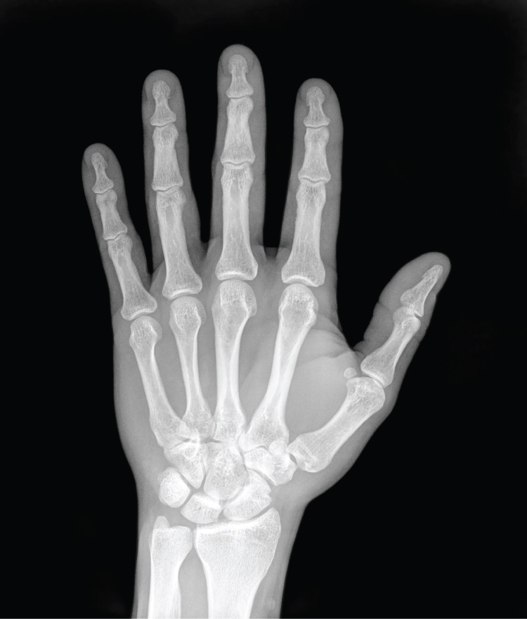
Steady growth and a changing body
After the headlong sprint of the first two years and the slower stretch of the preschool period, growth in middle childhood — roughly ages six to eleven — becomes calm and predictable. A school-age child gains about two to three inches (5–7 cm) and five to seven pounds (2–3 kg) each year, thinning out and stretching up so that the round preschool silhouette gives way to a leaner, longer-limbed frame. The baby (deciduous) teeth loosen and fall out on a rolling schedule and the first permanent teeth erupt, a small landmark that families and dentists both watch. Long bones lengthen at the growth plates (epiphyseal plates), and because those plates ossify on a reliable timetable, a physician can read a child's bone age from a single hand X-ray.
The brain has already reached roughly 90–95% of its adult size by age six, but it is far from finished. Behind the scenes, unused synapses are pruned and heavily used pathways are wrapped in myelin, speeding the signals that underlie attention, memory, and self-control. Boys and girls grow at nearly the same rate through most of this period; only near its end do many girls begin the growth spurt that will carry them into puberty a year or two ahead of boys.
Motor skills sharpen
Middle childhood is when movement becomes skilled. Gross motor abilities — running, jumping, skipping, throwing, catching, riding a bike, swimming — grow smoother and better coordinated as balance, strength, and reaction time improve. Fine motor control matures too: handwriting becomes legible and then fluent, shoelaces get tied, an instrument can be learned, and small crafts become possible. Sex differences in motor performance are small in these years and owe as much to practice and encouragement as to biology. What children of this age need most is simply opportunity — unstructured play and physical activity that let coordination consolidate.
The healthiest years, with a few threats
Statistically, middle childhood is the healthiest and safest stretch of the entire lifespan: death rates are lower here than at any other age. The threats that remain are largely preventable. Obesity has become the signature health problem of the school years, driven by diet, sedentary screen time, and shrinking active play; it tracks forward into adolescent and adult disease. Asthma is the most common chronic illness of childhood, and unintentional injury — in cars, on bikes, in the water — is the leading cause of death. Uncorrected vision problems (especially myopia), dental caries, and attention or learning difficulties round out the list of concerns a school and a family watch for.
| Concern | What it is | Why it matters now |
|---|---|---|
| Obesity | Excess body fat, usually judged by age- and sex-adjusted BMI percentile | Most common nutritional problem of the school years; tracks into adulthood |
| Asthma | Chronic airway inflammation causing wheeze and shortness of breath | Most common chronic disease of childhood; a leading cause of missed school |
| Unintentional injury | Car, bicycle, drowning, and playground injuries | Leading cause of death in this age group — and highly preventable |
| Dental caries | Tooth decay in new permanent teeth | Common, painful, and tied to nutrition and access to care |
| Vision problems | Myopia (nearsightedness) most often | Undetected, it masquerades as inattention or poor school performance |
| ADHD / learning difficulties | Attention, activity, or specific learning differences | Usually identified once formal schooling demands sustained focus |
- Growth is slow and steady — about 2–3 inches and 5–7 pounds a year; baby teeth are shed and the brain finishes pruning and myelinating.
- Gross and fine motor skills become smoother and more coordinated with practice; sex differences are small.
- Middle childhood is the healthiest, safest period of life.
- The main threats — obesity, asthma, unintentional injury, vision and dental problems — are largely preventable.
Section 2Concrete operations
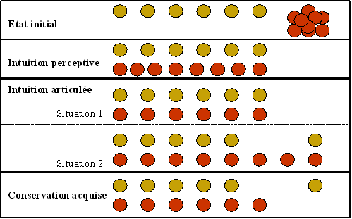
Operations: thought becomes reversible
Around age seven a child crosses into what Jean Piaget called the concrete operational stage (roughly ages 7–11), the third of his four stages after the sensorimotor and preoperational periods and before formal operations. The engine of the change is the operation — a mental action that can be performed in the mind and, crucially, undone. The preschooler was trapped by appearances; the school-age child can hold a transformation and its reverse in mind at once. Two new mental habits make this possible: reversibility (mentally running a change backward — pour the water back and it is the same amount) and decentration (attending to several features of a situation at once, rather than centering on just one).
Conservation, class inclusion, and seriation
Conservation is the flagship achievement: the understanding that a quantity stays the same despite a change in its shape or arrangement. Pour water from a short wide glass into a tall thin one and the preoperational child insists there is now “more,” fooled by the rising level; the concrete-operational child knows better, because she can reverse the pour in her mind and because she no longer centers on height alone. Interestingly, the different conservations are not mastered all at once — number comes first, then mass and length, then weight, and finally volume, a staggered pattern Piaget named horizontal décalage.
Two more concrete operations mature alongside conservation. Classification now includes class inclusion — grasping that a subclass is contained within a larger class. Show a child ten roses and five daisies and ask “Are there more roses or more flowers?”; only the concrete-operational thinker reliably answers “more flowers,” because she can hold the whole (flowers) and the part (roses) in mind together. Seriation — arranging items in order along a dimension such as length — also settles in, and with it transitivity: if stick A is longer than B, and B is longer than C, then A must be longer than C, deduced without laying the sticks side by side.
Still tied to the concrete
For all its power, this logic has a ceiling that names the stage: it works on the concrete, on objects and situations the child can picture or handle. Genuinely abstract, hypothetical, “what-if” reasoning — the province of the formal operational stage — does not arrive until adolescence. It is worth pairing Piaget here with Lev Vygotsky, who stressed that a child's thinking grows fastest with guidance: within the zone of proximal development — the gap between what a child can do alone and what she can do with help — a teacher's or peer's scaffolding pulls new competence into reach. Piaget mapped what the mind can do; Vygotsky reminded us that other people are how it gets there.
| Conservation task | What is transformed | Typically mastered |
|---|---|---|
| Number | A row of tokens is spread out or bunched up | ~6–7 years |
| Liquid | Water poured into a taller, thinner glass | ~7 years |
| Mass (substance) | A ball of clay is rolled into a sausage | ~7–8 years |
| Weight | The same reshaped clay, judged for heaviness | ~9–10 years |
| Volume | Displacement of water by the reshaped object | ~11–12 years |
- The concrete operational stage (~7–11) brings mental operations that are reversible and decentered.
- Conservation — quantity is unchanged by a change in appearance — is the hallmark achievement, arriving task by task (horizontal décalage).
- Class inclusion, seriation, and transitivity mark the new logic.
- Reasoning is still tied to the concrete; abstract “what-if” thought awaits adolescence. Vygotsky's ZPD adds that guidance accelerates the whole process.
Section 3Intelligence and schooling
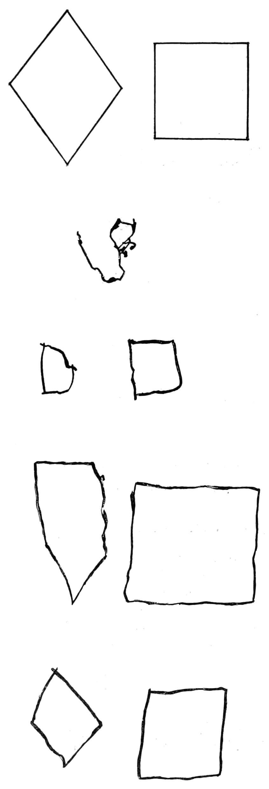
What is intelligence? Competing maps
Everyone knows what intelligence is until they have to define it — and psychologists have offered strikingly different maps. Charles Spearman noticed that people who do well on one mental test tend to do well on others and proposed a single underlying general intelligence, or g, alongside skills specific to each task. Raymond Cattell and John Horn split ability into fluid intelligence (reasoning about novel problems on the spot, which peaks early) and crystallized intelligence (accumulated knowledge and vocabulary, which grows for decades). Against these lumping views, Howard Gardner argued for multiple intelligences — linguistic, logical–mathematical, spatial, musical, bodily–kinesthetic, interpersonal, intrapersonal, and naturalist — each relatively independent. Robert Sternberg's triarchic theory names three: analytical, creative, and practical — the last being the “street smarts” that classroom tests routinely miss.
Measuring the mind: IQ tests
The practical testing tradition began in 1905 when Alfred Binet and Théodore Simon built a test in France to identify schoolchildren who needed extra help, introducing the idea of mental age — the age level a child's performance matched. Lewis Terman at Stanford adapted it into the Stanford–Binet and popularized the intelligence quotient (IQ), originally mental age divided by chronological age times 100. David Wechsler later built the widely used WISC for children. Modern tests abandon the old ratio for a deviation IQ that simply places a child against age-mates on a normal distribution with a mean of 100 and a standard deviation of 15 — so about two-thirds of children score between 85 and 115, and scores below 70 or above 130 are each rare.
What IQ scores can and cannot tell you
A well-built IQ test is reliable (a child scores about the same on retesting) and reasonably valid for one specific job: it predicts school achievement better than almost any other single number. But its reach stops there. IQ says little about creativity, motivation, social skill, or character, and it can badly misjudge a child whose language or culture the test was never designed for. Scores have also drifted steadily upward across the twentieth century — the Flynn effect — and can sag under stereotype threat, the anxiety of confirming a negative stereotype about one's group. Intelligence, in short, is real and partly measurable, but no test captures the whole child.
| Theory | Proposed by | Core idea |
|---|---|---|
| General intelligence (g) | Spearman | A single underlying ability drives performance across tasks |
| Fluid & crystallized | Cattell & Horn | Reasoning-on-the-fly (fluid) vs. accumulated knowledge (crystallized) |
| Multiple intelligences | Gardner | Eight relatively independent intelligences, not one |
| Triarchic theory | Sternberg | Analytical, creative, and practical intelligence |
- Theories of intelligence range from a single g (Spearman) to fluid vs. crystallized (Cattell), multiple intelligences (Gardner), and the triarchic theory (Sternberg).
- Testing runs from Binet's mental age to the Stanford–Binet and Wechsler (WISC); modern deviation IQ has a mean of 100 and SD of 15.
- IQ predicts school achievement well but misses creativity, character, and practical skill.
- Scores are shaped by the Flynn effect, stereotype threat, and cultural bias — interpret them cautiously.
Section 4Moral development
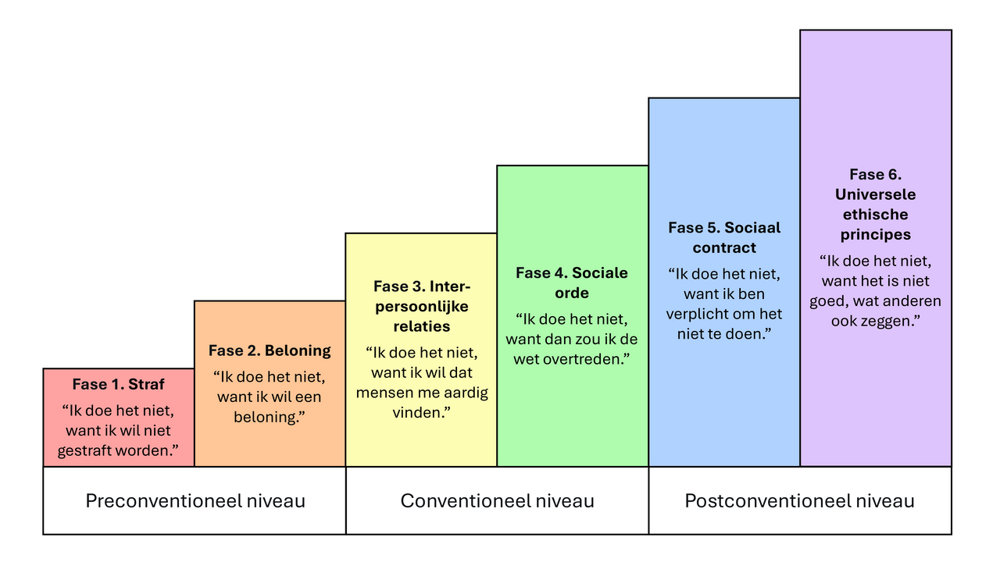
Kohlberg's dilemmas and the three levels
Building on Piaget's earlier work on the child's shift from a rigid heteronomous morality (rules are fixed and handed down) toward a more flexible autonomous one, Lawrence Kohlberg studied moral reasoning by posing dilemmas — most famously the story of Heinz, whose wife will die without a drug he cannot afford, and who must decide whether to steal it. Kohlberg cared little about whether children said “steal” or “don't”; what mattered was the reason behind the answer. From those reasons he mapped three broad levels — preconventional, conventional, and postconventional — each divided into two stages, six in all, moving from self-interest outward toward abstract principle.
The six stages
At the preconventional level, morality is external and self-focused. Stage 1 obeys to avoid punishment; Stage 2 acts out of naked self-interest — “you scratch my back, I'll scratch yours.” This is where most school-age children reason, though many begin moving into the next level. At the conventional level, morality means upholding relationships and rules. Stage 3 seeks approval — the “good boy / nice girl” who wants to be seen as kind; Stage 4 respects law and order and the social system as a whole. At the rarely reached postconventional level, morality rests on principle above rule: Stage 5 weighs the social contract and the greater good, and Stage 6 follows universal ethical principles such as justice and human dignity, even against the law.
Where children land — and the critiques
Most children in middle childhood reason at the preconventional level, sliding gradually into conventional thinking as they grow more attuned to what others expect. Kohlberg's theory has been enormously influential and heavily criticized. Carol Gilligan argued that his justice-focused ladder undervalued an ethic of care — responsibility and relationship — and may have been biased by an all-male original sample. Others note the theory's cultural bias toward Western, individualistic values, and the persistent gap between reasoning and behavior: a child who can explain why cheating is wrong may cheat anyway.
| Level | Stage | What drives the reasoning |
|---|---|---|
| Preconventional | 1 — Obedience | Avoid punishment; defer to power |
| Preconventional | 2 — Self-interest | “What's in it for me?” — fair exchange |
| Conventional | 3 — Approval | Be a good person in others' eyes |
| Conventional | 4 — Law & order | Uphold rules and the social system |
| Postconventional | 5 — Social contract | Rules serve the greater good and can change |
| Postconventional | 6 — Universal principles | Justice and human dignity above any law |
- Kohlberg studied moral reasoning through dilemmas such as the story of Heinz.
- He described three levels — preconventional, conventional, postconventional — and six stages, from punishment-avoidance to universal principles.
- Most school-age children reason at the preconventional level, moving toward conventional thinking.
- Critiques include Gilligan's ethic of care, cultural bias, and the reasoning–behavior gap.
Section 5Peers and self-esteem
Industry versus inferiority
In Erik Erikson's eight psychosocial stages, the school years pose the crisis of industry versus inferiority (roughly ages 6–11), the fourth stage — following trust vs. mistrust, autonomy vs. shame, and initiative vs. guilt, and preceding the identity crisis of adolescence. The child's task now is to become competent: to master the skills their culture values, chiefly through school and productive work. When effort meets success and recognition, the child develops a lasting sense of industry — “I can make things, I can do things well.” When effort meets repeated failure or ridicule, the child instead absorbs a sense of inferiority, a nagging doubt about their own worth and ability. This is why the classroom, the sports field, and the music lesson carry such emotional weight in these years.
The self and self-esteem
The school-age self-concept grows more realistic and more psychological. Where the preschooler described herself by appearance and possessions (“I have a red bike”), the older child describes stable inner traits and compares herself to others (“I'm better at reading than most kids, but not as fast a runner”). That new habit of social comparison is a double-edged gift: it sharpens self-knowledge but can deflate self-esteem. Importantly, self-esteem is not a single number. Following Susan Harter's work, children evaluate themselves separately across domains — academic, athletic, social, physical appearance, and conduct — and only gradually knit these into a global sense of self-worth. A child can feel like a strong reader, a weak athlete, and a good friend all at once.
Friends, peer groups, and the family
Friendship deepens from the “whoever I'm playing with” of early childhood into relationships built on trust, loyalty, and mutual support. Within the peer group, children acquire a sociometric status — popular, rejected, neglected, controversial, or average — and rejected children in particular face real risks of loneliness and later difficulty, especially when rejection tips into bullying. Play is also strikingly gender-segregated in these years, with boys' and girls' groups developing somewhat different styles. Yet the family remains central. The relationship simply matures: parents and children move toward coregulation (a term from Eleanor Maccoby), a shared, transitional control in which parents supervise from a step back while the child manages more of the moment-to-moment. All of this widening social world — family, school, peers, neighborhood — is exactly what Urie Bronfenbrenner's ecological model set out to describe, nested systems that together shape the developing child.
| Sociometric status | Liked by peers? | Typical picture |
|---|---|---|
| Popular | Widely liked | Cooperative, socially skilled (sometimes, instead, dominant) |
| Rejected | Actively disliked | Aggressive or withdrawn; highest risk for later problems |
| Neglected | Neither liked nor disliked | Quiet, low-visibility; often adjusts fine over time |
| Controversial | Both liked and disliked | Visible and assertive; strong reactions in both directions |
| Average | Moderately liked | The largest group; ordinary mix of acceptance |
- Erikson's fourth stage pits industry against inferiority: children build competence — or self-doubt — largely through school and work.
- Self-concept becomes trait-based and comparative; self-esteem is domain-specific before it becomes global (Harter).
- Friendships now rest on trust and loyalty; peers assign a sociometric status, and rejection or bullying carries real risk.
- The family stays central, shifting toward coregulation; Bronfenbrenner's nested systems frame the widening social world.
The chapter in one breath
- Growth in middle childhood (~6–11) is slow and steady; gross and fine motor skills sharpen, and these are the healthiest, safest years — with obesity, asthma, and injury as the main preventable threats.
- Piaget's concrete operational stage brings reversible mental operations: conservation (arriving task by task via horizontal décalage), class inclusion, seriation, and transitivity — but reasoning is still tied to the concrete.
- Vygotsky's zone of proximal development stresses that guidance and scaffolding accelerate a child's thinking.
- Theories of intelligence range from Spearman's g to Cattell's fluid/crystallized, Gardner's multiple intelligences, and Sternberg's triarchic model; IQ (mean 100, SD 15) predicts school achievement but not the whole child.
- Kohlberg's three levels and six stages trace moral reasoning from self-interest to principle; most school-age children reason at the preconventional level, and critiques include Gilligan's ethic of care and the reasoning–behavior gap.
- Erikson's crisis of industry versus inferiority unfolds through school; self-concept and self-esteem grow comparative and domain-specific.
- Friendships, peer sociometric status, and a maturing family (coregulation) — the nested systems of Bronfenbrenner's model — shape the school-age child.
ReferenceWords worth knowing
A quick reference for the terms in this chapter — skim it now, or circle back whenever a word trips you up.
- Class inclusion
- The understanding that a subclass is contained within a larger class (more flowers than roses), a concrete-operational achievement.
- Concrete operational stage
- Piaget's third stage (~7–11), marked by reversible mental operations applied to concrete objects and situations.
- Conservation
- The recognition that a quantity stays the same despite changes in its shape or arrangement.
- Conventional level
- Kohlberg's middle level, where morality means seeking approval (Stage 3) and upholding law and order (Stage 4).
- Coregulation
- A transitional, shared form of control in which parents supervise while the child manages moment-to-moment behavior (Maccoby).
- Crystallized intelligence
- Accumulated knowledge, vocabulary, and skills that grow with experience across the lifespan (Cattell).
- Fluid intelligence
- The ability to reason about and solve novel problems on the spot, largely independent of prior knowledge (Cattell).
- General intelligence (g)
- Spearman's proposed single underlying ability that accounts for correlated performance across mental tests.
- Horizontal décalage
- Piaget's term for mastering related skills (the various conservations) at different ages rather than all at once.
- Industry versus inferiority
- Erikson's fourth psychosocial stage (~6–11), in which children build a sense of competence or of inadequacy.
- Intelligence quotient (IQ)
- A standardized score of mental ability; modern deviation IQ has a mean of 100 and a standard deviation of 15.
- Multiple intelligences
- Gardner's theory that intelligence is not one ability but several relatively independent ones.
- Postconventional level
- Kohlberg's highest level, in which morality rests on the social contract (Stage 5) and universal ethical principles (Stage 6).
- Preconventional level
- Kohlberg's earliest level, where morality is external — avoiding punishment (Stage 1) and serving self-interest (Stage 2).
- Reversibility
- The mental ability to run a change backward, a core feature of concrete operations.
- Self-concept
- The set of beliefs a person holds about themselves; in middle childhood it becomes trait-based and comparative.
- Self-esteem
- The evaluative, feeling side of the self — one's judged worth — which is domain-specific before becoming global (Harter).
- Seriation
- The ability to order items along a dimension such as length or weight.
- Social comparison
- Judging one's own abilities and traits by measuring them against those of others.
- Sociometric status
- A child's standing in the peer group — popular, rejected, neglected, controversial, or average.
- Transitivity
- Inferring a relationship between items from their relationships to a third (if A>B and B>C, then A>C).
- Zone of proximal development
- Vygotsky's gap between what a child can do alone and what she can do with guidance (scaffolding).
Check yourself
Adolescence: Body & Mind
Somewhere around the tenth or eleventh birthday, a quiet biological switch flips and childhood begins to end. Over the next several years the body remakes itself in a hormonal surge called puberty, the brain rewires from the inside out, and thinking cracks open into a new world of abstractions, possibilities, and ideals. Adolescence is the bridge between the child a person was and the adult they are becoming — a decade that is, at once, the healthiest and the most dangerous of the whole life span. This chapter follows that transformation on two tracks: the changing body and the changing mind, and the ways the two keep pulling on each other.
By the end of this chapter you can
- Define puberty and trace the HPG axis that sets it in motion.
- Distinguish primary from secondary sex characteristics and place the major events of puberty in girls and boys.
- Explain the effects of early and late maturation on adolescents' social and emotional lives.
- Describe how the adolescent brain develops and why the dual-systems imbalance makes risk-taking so common.
- Summarize the nutrition, sleep, and behavioral health risks that shape adolescent well-being.
- Explain Piaget's formal operational stage and hypothetico-deductive reasoning.
- Describe adolescent egocentrism, the imaginary audience, and the personal fable.
Section 1Puberty

The hormonal switch
Puberty is the biological process that turns a child's body into one capable of reproduction. It does not begin in the gonads — it begins in the brain. Years before any visible change, the hypothalamus starts releasing pulses of gonadotropin-releasing hormone (GnRH), which signal the pituitary gland to secrete two more hormones: luteinizing hormone (LH) and follicle-stimulating hormone (FSH). These travel to the gonads — ovaries or testes — and drive a surge in the sex hormones estrogen and testosterone. This chain from hypothalamus to pituitary to gonads is the HPG axis, and it is the engine of the entire transformation. An earlier, separate event called adrenarche (maturation of the adrenal glands, around ages 6–8) supplies the first androgens behind body odor and early hair; the main show, gonadarche, is the awakening of the gonads themselves.
Primary and secondary sex characteristics
The changes of puberty sort into two families. Primary sex characteristics involve the reproductive organs directly — the maturation of the ovaries and uterus, the testes and penis. Their signature milestones are menarche, a girl's first menstrual period, and spermarche, a boy's first ejaculation of sperm. Secondary sex characteristics are the outward signs that do not directly enable reproduction: breast development, the growth of pubic and underarm hair, the deepening of the male voice, facial hair, and the redistribution of body fat and muscle. Clinicians track this sequence with the Tanner stages, a five-point scale from prepubertal (Stage 1) to fully mature (Stage 5). Overlaying all of it is the adolescent growth spurt, the fastest rate of growth since infancy — hands and feet enlarge first, giving the temporary gangliness that so many teens dread.
| Type | What it involves | Signature events |
|---|---|---|
| Primary | Maturation of the reproductive organs themselves | Menarche (first period); spermarche (first sperm) |
| Secondary (girls) | Outward signs not tied to reproduction | Breast budding, pubic/underarm hair, widening hips, growth spurt |
| Secondary (boys) | Outward signs not tied to reproduction | Voice deepening, facial & body hair, broadening shoulders, growth spurt |
Timing: early and late maturers
Puberty is not a stopwatch. On average, girls enter it about two years ahead of boys — girls around 10–11, boys around 11–12 — but the normal range spans several years, and the age of onset has crept earlier over the past century, a shift called the secular trend and linked to better nutrition and higher body fat. What matters psychologically is less when puberty arrives than how a child's timing compares with that of their peers. The research is consistent and a little sobering. Early-maturing girls face the greatest risk: their adult-looking bodies draw older attention and social pressures they are not yet emotionally ready for, and they show higher rates of body dissatisfaction, anxiety, depression, and early substance use. Early-maturing boys are often admired — taller, more athletic, granted status — yet that same advantage can pull them toward older peers and riskier behavior. Late-maturing boys may feel self-conscious and overlooked, though many catch up socially and some become notably resourceful.
- Puberty is driven by the HPG axis: hypothalamus (GnRH) → pituitary (LH, FSH) → gonads (estrogen, testosterone).
- Primary sex characteristics involve the reproductive organs (menarche, spermarche); secondary ones are outward signs like breasts, hair, and voice change.
- Girls typically begin about two years before boys, and onset has grown earlier over generations (the secular trend).
- Timing effects depend on the peer comparison — early-maturing girls are the most vulnerable to emotional and social risk.
Section 2The adolescent brain

Two systems on different clocks
For a long time, adults explained adolescent risk-taking with a shrug: teenagers just don't think. Brain imaging has told a more precise and more forgiving story. The adolescent brain contains two systems that mature on very different schedules. The socioemotional system — deep limbic structures such as the amygdala and the nucleus accumbens that register emotion and reward — becomes highly active early, right around the hormonal flood of puberty. The cognitive-control system — the prefrontal cortex that weighs consequences, plans ahead, and applies the brakes — matures slowly, and is not fully wired until the mid-twenties. This dual-systems imbalance means that for several years an adolescent drives a car with a very sensitive accelerator and brakes that are still being installed. The teen is not irrational so much as differently calibrated: rewards feel enormous, and the machinery for restraint is still under construction.
Rewiring: pruning and myelination
Underneath, the brain is not just growing — it is being edited. In a process called synaptic pruning, connections that go unused are eliminated while frequently used ones are strengthened, a "use it or lose it" sculpting that makes the brain more efficient and more specialized. At the same time, myelination wraps neural pathways in a fatty sheath that speeds signals dramatically, and it proceeds back-to-front, reaching the prefrontal cortex last. Shifts in the neurotransmitter dopamine also heighten the pull of reward during these years. The upside of all this plasticity is real: adolescence is a second great window for learning, when a brain primed for novelty and exploration is exactly what a young person needs to leave the family nest and build a life of their own.
| System | Key regions | Matures | Drives |
|---|---|---|---|
| Socioemotional | Amygdala, nucleus accumbens (limbic) | Early — at puberty | Reward-seeking, emotion, sensitivity to peers |
| Cognitive control | Prefrontal cortex | Late — into the mid-20s | Planning, impulse control, weighing consequences |
Risk in context — the peer effect
The imbalance shows up most vividly when other teenagers are watching. In driving-simulation studies, adolescents took roughly twice as many risks when peers were in the room, while adults were unaffected — and brain scans showed the reward system lighting up in the presence of friends. This is not simple peer pressure in the old sense of being talked into things; the mere presence of peers tilts the whole calculation, making the thrill of a risky choice feel more valuable than its danger. It helps to separate cold cognition, careful reasoning in a calm moment, from hot cognition, decision-making in the heat of emotion and social arousal. On a written quiz, a teenager can list every hazard of speeding; behind the wheel with friends laughing, a different system is at the controls.
- The dual-systems model: the emotion-and-reward (limbic) system matures early, the impulse-control (prefrontal) system matures late, into the mid-20s.
- Synaptic pruning and myelination reshape the brain for efficiency, with the prefrontal cortex maturing last.
- Peers roughly double adolescent risk-taking by amplifying the reward system — the presence of friends changes the math.
- The plasticity behind the risk also makes adolescence a prime window for learning and growth.
Section 3Health and risk

Fueling a growing body
The growth spurt makes adolescence one of the hungriest periods of life, and its nutritional needs are specific. Bones are laying down the mineral that will have to last a lifetime, so calcium and vitamin D intake during these years largely determine peak bone mass. Iron needs rise for everyone building muscle and blood volume, and especially for girls once menstruation begins. Yet this is precisely when eating habits often deteriorate: skipped breakfasts, more meals away from home, more sugary drinks and fast food, and diets driven by autonomy and marketing rather than balance. Two opposite problems bloom in adolescence. On one side, obesity becomes more common and more stubborn, carrying forward into adult disease. On the other, the eating disorders — anorexia nervosa and bulimia nervosa — typically first appear in these years, fed by a potent mix of body-image pressure, dieting, and the perfectionism the culture rewards.
The sleep-deprived teen
Adolescents need about 8–10 hours of sleep, and most get far less. The reason is not simply late-night screens, though those matter: puberty shifts the biological clock. A circadian phase delay pushes the release of the sleep hormone melatonin later into the night, so a teenager who genuinely cannot fall asleep at nine is not being defiant — their brain is not yet issuing the signal. Collide that delayed clock with early school start times and the result is chronic sleep debt across a whole generation. The costs are heavy and easy to miss: impaired attention and memory (sleep is when the day's learning is consolidated), irritability and low mood, weakened immune function, and a sharply higher risk of drowsy-driving crashes. Sleep is not a luxury the busy teen can trade away; it is where much of the growing brain does its work.
| Domain | What goes wrong | Why it matters |
|---|---|---|
| Nutrition | Low calcium/iron, more fast food, dieting | Peak bone mass; anemia; obesity and eating disorders |
| Sleep | Circadian delay plus early schedules → sleep debt | Learning, mood, immunity, drowsy-driving risk |
| Behavior | Substance experimentation, risky driving | The leading, and largely preventable, causes of death |
The real risks
Here is the paradox at the center of adolescent health: it is the physically robust stretch of life — illness is rare, strength and stamina peak — and yet the death rate rises compared with childhood. The reason is that the leading threats are no longer disease but behavior. Across the world, the leading causes of adolescent death are preventable: unintentional injury, above all motor-vehicle crashes, along with the consequences of substance use and other risk-taking. Most teenagers who experiment with alcohol or other substances do not go on to serious harm, but early and heavy use is linked to worse outcomes, and the still-maturing brain is more vulnerable to addiction than the adult brain. The protective factors are unglamorous and powerful: connected families, engaged schools, a caring adult, and structures that keep the inevitable experimentation from turning fatal.
- The growth spurt raises needs for calcium (peak bone mass) and iron, just as eating habits often worsen.
- Obesity and the eating disorders both tend to emerge or intensify in adolescence.
- A puberty-driven circadian phase delay plus early schedules leaves most teens chronically short of the 8–10 hours they need.
- The leading causes of adolescent death are behavioral and preventable — injury, especially crashes, and substance use.
Section 4Formal operations

Piaget's fourth stage
In Jean Piaget's account of cognitive development, thinking climbs through four stages: the sensorimotor stage of infancy (roughly birth to 2), the preoperational stage of early childhood (about 2 to 7), the concrete operational stage of middle childhood (about 7 to 11), and finally the formal operational stage, beginning around age 11 and continuing to unfold through adolescence. The concrete-operational child reasons capably — but only about concrete, tangible things they can picture. The leap of formal operations is the ability to reason about the abstract and the hypothetical: about what could be, not merely what is. A younger child asked "What if snow were black?" balks because it isn't. An adolescent can accept the premise and run with it, reasoning logically inside an imagined world.
Hypothetico-deductive reasoning
The hallmark of the stage is hypothetico-deductive reasoning — the scientist's method. Given a problem, the formal-operational thinker generates the full set of possible explanations, then tests them systematically, changing one variable at a time. Piaget demonstrated this with the pendulum problem: figure out what determines how fast a pendulum swings (the length of the string, the weight, the height of the drop, the push). The concrete thinker fiddles unsystematically and draws muddled conclusions; the formal-operational thinker isolates each variable in turn and arrives at the answer that only string length matters. This same machinery — called propositional thought — lets adolescents follow "if…then" logic, reason about statements as statements, and handle the algebra, geometry, and argumentation that suddenly fill their schooling.
| Stage | Approximate age | Hallmark |
|---|---|---|
| Sensorimotor | Birth–2 | Knows the world through senses and action; object permanence |
| Preoperational | 2–7 | Symbols and language; egocentrism; lacks conservation |
| Concrete operational | 7–11 | Logic about concrete, tangible things; conservation, reversibility |
| Formal operational | 11 and up | Abstract and hypothetical reasoning; systematic problem-solving |
Not everyone, not always
Piaget's stage captures something real, but later research softened its edges. Formal operational thought is neither universal nor constant: it depends heavily on education and cultural experience, adults deploy it inconsistently and mostly in domains they know well, and even a gifted reasoner may fall back on concrete habits under stress. What is unmistakable is a new flavor of adolescent thought — a fascination with possibility. Able for the first time to imagine ideal worlds, teenagers measure the real one against them and find it wanting, which is why this period brims with idealism, passionate argument, and a keen, sometimes withering eye for adult hypocrisy. The very power that solves for x also fuels the debate at the dinner table.
- Piaget's stages: sensorimotor, preoperational, concrete operational, and formal operational (about age 11 and up).
- Formal operations is the capacity for abstract and hypothetical reasoning — thinking about what could be.
- Hypothetico-deductive reasoning tests possibilities systematically, one variable at a time (the pendulum problem).
- The stage is not universal or constant — it depends on education and culture — and it fuels adolescent idealism.
Section 5Adolescent thinking

A new self-focus
The new power to think about thinking has a curious side effect. The psychologist David Elkind described a distinctive adolescent egocentrism — not selfishness, but a difficulty separating one's own thoughts from other people's. Newly able to imagine what others are thinking, adolescents make a natural error: they assume everyone else is thinking about the same thing they are — namely, them. It is an over-application of a genuine cognitive gain. The child could not readily model other minds; the adolescent can, and promptly floods those imagined minds with their own preoccupations. Elkind gave this self-focus two vivid faces: the imaginary audience and the personal fable.
The imaginary audience
The imaginary audience is the sensation of being constantly watched and evaluated, as though one were always on stage. A single blemish becomes a catastrophe because everyone will surely notice; an outfit is agonized over because the whole cafeteria is judging it; a stumble in the hallway feels broadcast to the world. This is the engine of adolescent self-consciousness, and it explains behavior that baffles adults — the refusal to be seen with a parent, the two hours in front of the mirror, the paralysis at the thought of a class presentation. The audience is imaginary, but the stage fright is entirely real.
The personal fable
Its companion is the personal fable: a conviction that one's own experiences are utterly unique and that no one — certainly no parent — could possibly understand. "You don't know what this feels like" is its anthem. A closely linked belief, sometimes called the invincibility fable, whispers that ordinary risks apply to other people but not to me: I won't get in a crash, I won't get pregnant, I won't get hooked. Set beside the reward-hungry teenage brain of Section 2, the personal fable is more than a quirk of thought — it is one of the cognitive ingredients of adolescent risk-taking. Both the audience and the fable soften as perspective-taking matures and as real relationships teach the adolescent that others, too, feel unique, watched, and afraid.
| Belief | The feeling | Everyday sign |
|---|---|---|
| Imaginary audience | "Everyone is watching and judging me." | Extreme self-consciousness; agonizing over appearance |
| Personal fable | "My experience is unique; no one understands me." | "You don't get it"; a sense of dramatic specialness |
| Invincibility fable | "Bad outcomes happen to others, not to me." | Risk-taking; "it won't happen to me" |
- Adolescent egocentrism (Elkind) is trouble separating one's own thoughts from others' — a by-product of new perspective-taking power.
- The imaginary audience is the feeling of being constantly watched and judged, driving intense self-consciousness.
- The personal fable is a sense of being unique and misunderstood; the linked invincibility fable feeds risk-taking.
- Both fade as perspective-taking matures and relationships reveal that others feel the same way.
The chapter in one breath
- Puberty is set off by the HPG axis (hypothalamus → pituitary → gonads) and produces primary and secondary sex characteristics.
- Puberty's timing matters socially — early-maturing girls face the most emotional and social risk because their bodies outpace their readiness.
- The adolescent brain follows a dual-systems schedule: the reward-and-emotion system matures early, the impulse-control prefrontal cortex late, into the mid-20s.
- That imbalance, amplified by peers, drives risk-taking — but the same plasticity makes adolescence a powerful window for learning.
- Adolescent health hinges on nutrition (calcium, iron), sleep (a circadian phase delay plus early schedules), and behavior; the leading causes of death are preventable.
- Piaget's formal operational stage brings abstract, hypothetical, and systematic hypothetico-deductive reasoning — and adolescent idealism.
- New thinking turns inward as adolescent egocentrism: the imaginary audience (feeling watched) and the personal fable (feeling unique and invulnerable).
ReferenceWords worth knowing
A quick reference for the terms in this chapter — skim it now, or circle back whenever a word trips you up.
- Adolescence
- The developmental period bridging childhood and adulthood, beginning with puberty and marked by major physical, cognitive, and social change.
- Adolescent egocentrism
- David Elkind's term for the adolescent difficulty in separating one's own thoughts and concerns from those of other people.
- Adrenarche
- The early maturation of the adrenal glands (around ages 6–8), which produces the first androgens behind body odor and early hair.
- Circadian phase delay
- The puberty-driven shift that releases melatonin later at night, pushing the sleep–wake clock back in adolescents.
- Concrete operational stage
- Piaget's third stage (about 7–11), when children reason logically but only about concrete, tangible things.
- Dual-systems model
- The view that adolescent risk-taking arises from an early-maturing reward system paired with a late-maturing control system.
- Formal operational stage
- Piaget's fourth stage (about 11 and up), defined by abstract, hypothetical, and systematic reasoning.
- Gonadarche
- The awakening of the gonads (ovaries or testes) that drives the central hormonal changes of puberty.
- Growth spurt
- The rapid increase in height and weight during puberty, the fastest growth since infancy.
- Hypothalamic–pituitary–gonadal (HPG) axis
- The hormone pathway — hypothalamus to pituitary to gonads — that initiates and sustains puberty.
- Hypothetico-deductive reasoning
- The scientific approach of generating hypotheses and testing them systematically; the hallmark of formal operations.
- Imaginary audience
- The adolescent feeling of being constantly watched and evaluated by others, driving self-consciousness.
- Menarche
- A girl's first menstrual period, a landmark of primary sexual maturation.
- Myelination
- The wrapping of neural pathways in a fatty sheath that speeds signal transmission; it reaches the prefrontal cortex last.
- Personal fable
- The adolescent belief that one's own experiences are unique and not fully understandable to others; linked to a sense of invulnerability.
- Prefrontal cortex
- The front region of the brain responsible for planning, judgment, and impulse control; the last area to fully mature.
- Primary sex characteristics
- Bodily changes of puberty that involve the reproductive organs directly (e.g., menarche, spermarche).
- Puberty
- The biological process of sexual maturation that makes reproduction possible.
- Secondary sex characteristics
- Outward signs of puberty not directly tied to reproduction, such as breast development, body hair, and voice change.
- Secular trend
- The generational shift toward earlier puberty and greater adult height, linked to improved nutrition and health.
- Spermarche
- A boy's first ejaculation of sperm, a landmark of primary sexual maturation.
- Synaptic pruning
- The elimination of unused neural connections and strengthening of used ones, sculpting a more efficient brain.
Check yourself
Adolescence: Identity & Relationships
Somewhere between the child who asks “what are we doing today?” and the adult who asks “who am I becoming?” sits the adolescent, doing both at once. Adolescence is the decade or so when a young person stops taking the self for granted and starts building one on purpose — testing beliefs, trying on roles, arguing with parents, leaning hard into friends, and taking risks that can look reckless from the outside and feel essential from the inside. None of this happens in a vacuum: identity is forged in relationships, and the same brain that drives a teenager toward novelty is also, day by day, learning to steer. This chapter follows that work through five arenas — the search for identity, the renegotiation of family life, the pull of peers, the sharpening of values, and the balance of risk and resilience — and shows how each one feeds the others.
By the end of this chapter you can
- Explain Erikson's stage of identity vs. role confusion and the idea of a psychosocial moratorium.
- Describe Marcia's four identity statuses and the two dimensions — exploration and commitment — that define them.
- Distinguish emotional, behavioral, and value autonomy, and describe how parent–teen relationships change.
- Compare Baumrind's parenting styles and explain why authoritative parenting supports healthy autonomy.
- Contrast cliques and crowds and describe how peer pressure and friendship intimacy shift across adolescence.
- Trace moral development through Kohlberg's preconventional, conventional, and postconventional levels.
- Explain the dual-systems model of the adolescent brain and why risk-taking peaks in the teen years.
- Identify the protective factors that build resilience in teens.
Section 1The search for identity

Erikson: identity vs. role confusion
Erik Erikson mapped the whole lifespan into eight psychosocial stages, each built around a central tension the person must resolve — trust vs. mistrust in infancy, autonomy vs. shame in toddlerhood, initiative vs. guilt in the preschool years, industry vs. inferiority in the school years, and so on through intimacy, generativity, and integrity in adulthood. The fifth stage, arriving with adolescence, is identity vs. role confusion. The task is to answer, in some workable way, the question “Who am I, and where do I fit?” A teenager who succeeds emerges with a coherent sense of self — values, goals, and commitments that feel authored rather than inherited. A teenager who cannot yet answer it lives in role confusion: unsure of direction, drifting between identities, or clinging to whatever group will supply a ready-made one.
Erikson argued that society grants adolescents a psychosocial moratorium — a sanctioned time-out from adult commitments during which experimenting with roles is expected, even encouraged. School clubs, first jobs, changing friend groups, shifting musical and political allegiances: these are not distractions from the work of adolescence, they are the work. It is worth noting where this sits in the larger sequence. A firm identity, in Erikson's view, is the foundation for the next stage, intimacy vs. isolation — you cannot fully merge your life with another's until you know whose life it is.
Marcia: four identity statuses
James Marcia made Erikson's idea testable by asking two concrete questions. Has the person actively explored alternatives (a period of searching, sometimes called crisis)? And has the person made a commitment? Crossing those two dimensions yields four identity statuses. They are not a fixed ladder — a person can occupy different statuses in different domains (settled about religion, still searching about career) and can cycle back through them — but they capture the range of where an adolescent can stand.
| Status | Explored? | Committed? | What it looks like |
|---|---|---|---|
| Identity diffusion | No | No | No searching and no commitments; apathetic or avoidant about the question of self |
| Foreclosure | No | Yes | Committed without exploring — adopted a parent's or authority's identity wholesale |
| Moratorium | Yes (ongoing) | Not yet | Actively exploring and questioning; in the thick of the search, commitments still open |
| Identity achievement | Yes | Yes | Explored the options and then made personal, considered commitments |
The pairing matters. Foreclosure can look mature — the teen seems decided and calm — but the commitment was never tested, so it can shatter when challenged. Moratorium can look chaotic, yet it is often the most developmentally healthy place to be at sixteen, because genuine identity achievement usually requires passing through it. Most people do not reach stable achievement until the late teens or twenties, which is one reason many theorists now describe a distinct phase of emerging adulthood.
Two cognitive shifts make all of this possible. First, Piaget's formal operational thinking — the capacity for abstract, hypothetical reasoning that comes online in adolescence — lets a teenager imagine possible selves and possible worlds, and hold the actual self up against the ideal one. Second, that same new power turns inward, sometimes uncomfortably. David Elkind described an adolescent egocentrism with two faces: the imaginary audience (the conviction that everyone is watching and judging) and the personal fable (the belief that one's feelings are uniquely intense and that ordinary risks do not apply to oneself).
- Erikson's adolescent stage is identity vs. role confusion; society allows a psychosocial moratorium for trying on roles.
- Marcia crosses exploration and commitment to yield four statuses: diffusion, foreclosure, moratorium, identity achievement.
- Foreclosure commits without exploring; achievement commits after exploring — the route usually runs through moratorium.
- Formal operational thought enables the self-reflection behind identity work — and the imaginary audience and personal fable that come with it.
Section 2Family and autonomy
What autonomy actually means
The popular story of adolescence is one of breaking away, but developmental research tells a subtler tale: adolescents pursue autonomy — the capacity to think, feel, and act as a self-governing person — while mostly staying connected to their families. It helps to split autonomy into three strands. Emotional autonomy is the gradual de-idealizing of parents, coming to see them as ordinary people rather than all-knowing figures, and relying less on them for every emotional need. Behavioral autonomy is the growing ability to make and act on independent decisions — and, importantly, to resist a bad suggestion as well as to follow a good one. Value autonomy, which develops latest, is having thought-through beliefs about politics, religion, and ethics that the adolescent can defend on their own terms.
The healthy version of this is individuation, not detachment. The teenager who separates within a warm relationship — still close, still connected, but increasingly their own person — fares far better than the one who cuts off. Attachment does not expire at puberty: the same styles Mary Ainsworth described in infancy (secure, and the insecure patterns) echo forward, and a securely attached teen uses the parent as a secure base to explore from, returning for support and then venturing out again.
Conflict, and the parenting that weathers it
Everyday conflict does tend to rise in early adolescence, but it is easy to misread. The classic finding is that arguments become more frequent yet are mostly about mundane matters — chores, curfews, tidiness, screen time — rather than deep values, and their intensity typically cools by later adolescence as the relationship re-stabilizes on new terms. The style parents bring to that friction shapes its outcome. Diana Baumrind's framework crosses two dimensions — warmth (responsiveness) and control (demandingness) — into four styles.
| Parenting style | Warmth | Control | Typical outcome for the teen |
|---|---|---|---|
| Authoritative | High | High | Warm plus firm, with reasons and negotiation — linked to the best adjustment, self-reliance, and school success |
| Authoritarian | Low | High | Strict and obedience-focused without warmth — more anxiety, poorer self-esteem, or rebellion |
| Permissive (indulgent) | High | Low | Warm but few limits — more impulsivity and difficulty with self-regulation |
| Uninvolved (neglectful) | Low | Low | Neither warmth nor structure — the poorest outcomes across domains |
Authoritative parenting supports autonomy precisely because it grants it gradually: it explains rules, invites the adolescent's voice, and loosens control as the teen earns it. A crucial ingredient is monitoring — parents knowing where their teen is and with whom — which works best when it flows from an open relationship the teen chooses to disclose to, rather than from surveillance.
- Autonomy has three strands: emotional, behavioral, and (latest) value autonomy.
- The goal is individuation within connection — separating while staying close — not detachment; attachment persists into the teen years.
- Conflict rises in early adolescence but is mostly over mundane issues and eases later.
- Authoritative parenting (high warmth + high, reasoned control) with genuine monitoring predicts the best outcomes.
Section 3Peers: friendship, cliques, and pressure
Friendship grows deeper
Younger children are friends with whoever they play with; adolescents are friends with people they confide in. The great change in friendship across the teen years is the rise of intimacy — mutual self-disclosure, emotional support, loyalty, and trust. Harry Stack Sullivan argued that these close, same-age friendships (he called the closest one a “chumship”) are where teenagers learn the interpersonal skills — honesty, empathy, repair after conflict — that later romantic and adult relationships depend on. A good friendship in adolescence is not a luxury; it is a rehearsal space for intimacy itself.
The peer world also organizes itself into recognizable structures. A clique is a small, tight group of friends who actually spend time together — a handful of people who know each other well. A crowd is larger and more abstract: a reputation-based category (the athletes, the brains, the arts kids, the populars) that a teen may belong to by label without necessarily being close to its members. Crowds do identity work — they advertise “this is the kind of person I am” — while cliques do the intimate, day-to-day relational work. Dexter Dunphy's classic observations traced how same-sex cliques gradually link up and reorganize into mixed groups as dating begins.
Peer pressure — and what it really does
Conformity to peers — the tendency to align one's behavior with the group — tends to peak in early-to-mid adolescence (around ages 13 to 15) and then declines as behavioral and value autonomy strengthen. It is a mistake, though, to hear peer pressure as only a downward force. Peers push in every direction: toward skipping class or toward studying together, toward a first cigarette or toward a team, a cause, a band. Much peer influence is also indirect — teens adjust to perceived norms without anyone saying a word.
| Peer structure | Size | Based on | Main job |
|---|---|---|---|
| Clique | Small (roughly 3–10) | Actual friendship and shared time | Intimacy, daily companionship, self-disclosure |
| Crowd | Large | Reputation and shared image | Identity — signaling “what kind of person I am” |
Popularity itself splits in two. Sociometric popularity is being genuinely well-liked — kind, cooperative, socially skilled. Perceived popularity is having high status and visibility, which sometimes comes with dominance or even aggression rather than warmth. The two do not always travel together, which is why the “popular” teens are not necessarily the well-liked ones.
- Friendship deepens into intimacy — self-disclosure, loyalty, support (Sullivan) — a rehearsal for later intimacy.
- Cliques are small, real friendship groups; crowds are large, reputation-based identity categories.
- Peer conformity peaks in early-to-mid adolescence, then falls; peer influence pushes toward good and bad alike.
- Sociometric (well-liked) and perceived (high-status) popularity are not the same thing.
Section 4Values and morality
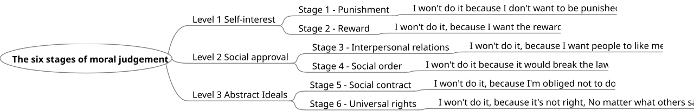
From rules to principles
The same abstract reasoning that lets adolescents question their own identity lets them question right and wrong. Jean Piaget first sketched the shift, noting that younger children hold a heteronomous morality — rules are fixed, handed down, and judged by consequences — while older children and adolescents move toward an autonomous morality that weighs intentions and understands rules as social agreements that people make and can change.
Lawrence Kohlberg extended this into six stages across three levels, studying how people reason about moral dilemmas rather than what they conclude. At the preconventional level (typical of children), right and wrong hinge on avoiding punishment and serving one's own interests. At the conventional level, which most adolescents reach, morality means upholding relationships and the social order — being a good person in others' eyes, and respecting law and duty. A minority move toward the postconventional level, reasoning from abstract principles — social contracts, and universal ethical principles like justice and human dignity — that can stand above any particular law.
| Level | Stage | What makes an act right |
|---|---|---|
| Preconventional | 1. Punishment & obedience | Avoiding punishment; obeying power |
| Preconventional | 2. Instrumental exchange | Serving one's own needs; fair deals (“you scratch my back”) |
| Conventional | 3. Good boy / good girl | Winning approval; being seen as nice and loyal |
| Conventional | 4. Law & order | Upholding rules, duty, and the social system |
| Postconventional | 5. Social contract | Rules serve the common good and can be changed by agreement |
| Postconventional | 6. Universal principles | Self-chosen ethical principles — justice, dignity — above any law |
Care, culture, and the gap between reasoning and acting
Kohlberg's model has been sharpened by criticism. Carol Gilligan argued that his justice-focused scoring undervalued an ethic of care — a way of reasoning organized around relationships, responsibility, and not wanting to hurt others — and that both care and justice are mature moral voices. Others note that the highest stages reflect Western, individualist assumptions and may score other cultural moralities unfairly. And a practical caution runs through all of it: how a teenager reasons about a dilemma predicts how they act only loosely. Values in adolescence are built as much through modeling, belonging, empathy, and real prosocial practice — volunteering, standing up for a friend, arguing a cause — as through abstract logic.
- Piaget: children move from heteronomous (rules fixed, judged by outcome) to autonomous (rules as agreements, judged by intention) morality.
- Kohlberg's levels are preconventional, conventional (most adolescents), and postconventional; he scored reasoning, not conclusions.
- Gilligan added an ethic of care alongside justice; the highest stages face cultural-bias critiques.
- Moral reasoning predicts moral behavior only loosely — values grow through modeling, empathy, and prosocial action too.
Section 5Risk and resilience
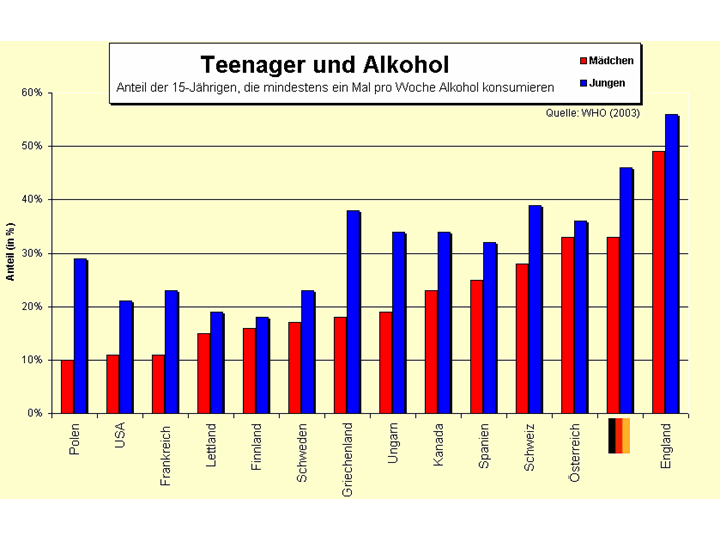
Why teenagers take risks
Adolescents are not simply ignorant of danger — ask them, and they will often rate a risk about as high as an adult would. The puzzle is that they take the risk anyway, and the best current explanation is developmental neuroscience's dual-systems (or imbalance) model. Two brain systems mature on different schedules. The socioemotional system — reward-sensitive circuits centered in the limbic region — becomes highly active early in adolescence, driving up sensation-seeking and the pull of immediate rewards. The cognitive control system — the prefrontal machinery for planning, impulse control, and weighing consequences — matures more slowly, not fully coming online until the mid-twenties. For a few years, in other words, a hot accelerator is paired with brakes still under construction.
This is why risk-taking peaks in adolescence and why it is so socially amplified. In a now-famous line of studies, teens took markedly more risks in a driving task when friends were merely watching — an effect that vanished in adults. The presence of peers lights up the reward system, tilting the balance toward the thrill and away from the consequence. Common expressions include experimenting with substances, unsafe driving, unprotected sex, and other novelty- and status-driven behaviors — most of which are transient, but some of which carry lasting cost.
What protects teens
Risk is only half the story. Resilience — doing well despite adversity — is not a rare gift but, in Ann Masten's phrase, “ordinary magic,” assembled from commonplace protective factors. The single most consistent one is a stable, caring relationship with at least one adult. Urie Bronfenbrenner's ecological-systems view is useful here: a teen is nested in layers — the immediate settings of family, peers, and school (microsystem), the connections among those settings (mesosystem), and the broader culture (macrosystem) — and protection can come from any layer.
| Level | Risk factors | Protective factors |
|---|---|---|
| Individual | High sensation-seeking, poor impulse control, hopelessness | Self-regulation, problem-solving skills, optimism, a sense of purpose |
| Family | Conflict, harsh or absent parenting, low monitoring | Warmth, authoritative parenting, at least one caring adult, monitoring |
| Peers & school | Deviant peers, disengagement, bullying | Prosocial friends, school connectedness, a caring mentor or coach |
| Community | Violence, poverty, easy access to harmful substances | Safe neighborhoods, activities and opportunities, supportive institutions |
Two practical points fall out of this. First, protection is additive and cross-level — a supportive coach can buffer a hard home, a strong family can buffer a rough neighborhood — so there are many places to intervene. Second, the goal is not to eliminate all risk. Some risk-taking is how adolescents explore, build competence, and find their edges; the aim is to channel a novelty-hungry brain toward challenges that build a self rather than endanger it.
- The dual-systems model: a fast-maturing reward (socioemotional) system outruns a slow-maturing cognitive control system into the mid-twenties.
- Risk-taking peaks in adolescence and rises sharply in the presence of peers, which activates reward circuits.
- Resilience is “ordinary magic” built from protective factors across Bronfenbrenner's ecological levels.
- The most consistent protective factor is a stable, caring relationship with at least one supportive adult.
The chapter in one breath
- Erikson's adolescent stage is identity vs. role confusion; society grants a moratorium to try on roles before committing.
- Marcia's four statuses — diffusion, foreclosure, moratorium, achievement — come from crossing exploration and commitment; real achievement usually runs through moratorium.
- Adolescents seek autonomy (emotional, behavioral, value) through individuation within connection, not detachment; attachment persists.
- Conflict rises over mundane issues then eases; authoritative parenting plus monitoring predicts the best adjustment.
- Friendship deepens into intimacy; cliques give closeness and crowds give identity; peer conformity peaks early-mid adolescence.
- Morality moves from Piaget's heteronomous rules toward Kohlberg's conventional and (for some) postconventional reasoning; Gilligan adds an ethic of care.
- The dual-systems brain drives peak risk-taking, magnified by peers; resilience is ordinary magic built from protective factors — above all, one caring adult.
ReferenceWords worth knowing
A quick reference for the terms in this chapter — skim it now, or circle back whenever a word trips you up.
- Authoritative parenting
- A style high in both warmth and reasoned control; linked to the best adolescent adjustment, autonomy, and achievement.
- Autonomy
- The capacity to think, feel, and act as a self-governing person; develops as emotional, behavioral, and value autonomy.
- Behavioral autonomy
- The growing ability to make and act on independent decisions, including resisting undue influence.
- Clique
- A small, tight group of friends who actually spend time together and know one another well.
- Cognitive control system
- Prefrontal circuitry for planning, impulse control, and weighing consequences; matures slowly into the mid-twenties.
- Conventional morality
- Kohlberg's middle level, reached by most adolescents: right means upholding relationships, approval, law, and social order.
- Crowd
- A large, reputation-based peer category (e.g., athletes, brains) that signals identity more than it provides closeness.
- Emotional autonomy
- De-idealizing parents and relying on them less for every emotional need while often staying close.
- Foreclosure
- Marcia's status of commitment without exploration — an identity adopted wholesale from parents or authority.
- Identity achievement
- Marcia's status of commitment following genuine exploration — a personally authored identity.
- Identity diffusion
- Marcia's status of no exploration and no commitment; apathy or avoidance about the question of self.
- Identity vs. role confusion
- Erikson's fifth psychosocial stage, the adolescent task of forming a coherent sense of self.
- Imaginary audience
- Elkind's term for the adolescent conviction that others are constantly watching and judging.
- Individuation
- Becoming a distinct, self-governing person while remaining connected to family — separation without detachment.
- Moratorium
- Marcia's status of active exploration without commitment yet; also Erikson's sanctioned time-out for role experimentation.
- Peer pressure
- Influence from peers to think or behave a certain way; can push toward prosocial or antisocial ends, often indirectly.
- Personal fable
- Elkind's term for the adolescent belief that one's experience is unique and that ordinary risks do not apply.
- Postconventional morality
- Kohlberg's highest level: reasoning from social contracts and self-chosen universal principles above particular laws.
- Preconventional morality
- Kohlberg's lowest level: right and wrong defined by punishment, obedience, and self-interest.
- Protective factor
- A condition that buffers risk and promotes resilience, such as a caring adult, monitoring, or school connectedness.
- Resilience
- Positive adaptation despite adversity; built from ordinary protective factors rather than rare traits.
- Sensation-seeking
- The drive toward novel, intense, and rewarding experiences; peaks in adolescence with the socioemotional system.
Check yourself
Early Adulthood
Somewhere in the early twenties the body arrives at the finest condition it will ever know — fastest, strongest, most fertile — and then, almost imperceptibly, begins a long descent that no one notices for decades. But early adulthood is far more than a physical summit. It is the season when thinking grows supple enough to hold contradiction, when the central psychological task becomes learning to share a life without losing oneself, and when most people choose partners, build families, and settle into the work that will define them. This chapter follows the young adult body at its peak, the maturing adult mind, and the twin projects of love and work that Freud once named as the whole of what a healthy person must be able to do. It also asks a newer question: in an age of long schooling and late marriage, when exactly does adulthood begin?
By the end of this chapter you can
- Describe the physical peak of early adulthood and the health habits laid down here that shape the rest of life.
- Explain postformal thought and how adult reasoning goes beyond Piaget's formal operations.
- Describe the growth of expertise and how experts differ from novices.
- Summarize Erikson's stage of intimacy versus isolation and the virtue it yields.
- Relate infant attachment to the adult attachment styles seen in romantic relationships.
- Distinguish the components of Sternberg's triangular theory of love and the kinds of love they produce.
- Describe contemporary patterns of partnering and family formation.
- Explain the role of work in adult identity and describe Arnett's concept of emerging adulthood.
Section 1The body at its peak
The physical summit
For most of the body's systems, the years from roughly 18 to 40 are the best they will ever be. Muscle strength and mass, cardiovascular fitness, bone density, reaction time, and reproductive capacity all crest in the twenties or very early thirties. This is why elite athletes in most sports peak young: a sprinter's fastest legs, a swimmer's largest lungs, a gymnast's most forgiving joints belong to early adulthood. Maximal oxygen uptake (VO₂ max), the single best index of aerobic fitness, is highest in the late teens and twenties. The immune system is robust, injuries heal quickly, and the person simply feels durable — which is exactly the feeling that makes the next idea so easy to ignore.
A slow, silent decline begins
Even at the summit, the descent has already started. Senescence — the gradual, biologically programmed decline of the body's systems — begins in early adulthood, but so slowly that it changes nothing about daily life for a long time. After about age thirty, untrained aerobic capacity falls by roughly one percent a year; muscle mass, lung capacity, and cardiac reserve edge downward; and peak bone mass — the greatest bone density a person will ever hold — is reached and then, imperceptibly, begins to erode. None of this is felt in the moment. A thirty-two-year-old is not aware of losing anything, and that gap between how young adults feel and what their tissues are quietly doing is the crux of the health story.
| System / capacity | Peaks around | What happens after the peak |
|---|---|---|
| Muscle strength & mass | Mid-20s to early 30s | Very gradual loss (sarcopenia) that only matters much later, and slower in the active |
| Aerobic fitness (VO₂ max) | Late teens to 20s | Falls roughly 1% per year after ~30 if untrained; training blunts the drop |
| Bone mass | ~30 | Peak bone mass sets the lifetime reserve against later osteoporosis |
| Reaction time & speed | Early-to-mid 20s | Slows subtly across adulthood |
| Reproductive capacity | 20s | Female fertility declines gradually from the early 30s and faster after 35 |
The habits that write the future
Because the body forgives so readily now, early adulthood is when lifelong health habits are set almost by accident — how a person eats, moves, sleeps, drinks, smokes, and manages stress. The leading causes of premature death in later life are not mysterious diseases but the slow accumulation of behavior: tobacco use, poor diet, physical inactivity, and heavy alcohol use. Atherosclerosis is already forming in the arteries of many healthy-feeling twenty-somethings, and the bone banked before thirty is the buffer that decides who fractures a hip at seventy. The cruel irony is that the person who most needs to invest in prevention — the young adult with decades to gain — is the one who feels least in need of it.
- Most physical capacities — strength, aerobic fitness, bone density, reaction time, fertility — peak in the twenties or early thirties.
- Senescence begins even at the peak, but declines are so slow they go unnoticed for years.
- Peak bone mass reached near age 30 sets the reserve against later osteoporosis.
- The health habits set in early adulthood are the largest lever on health decades later — yet feeling invincible makes prevention a hard sell.
Section 2The maturing adult mind
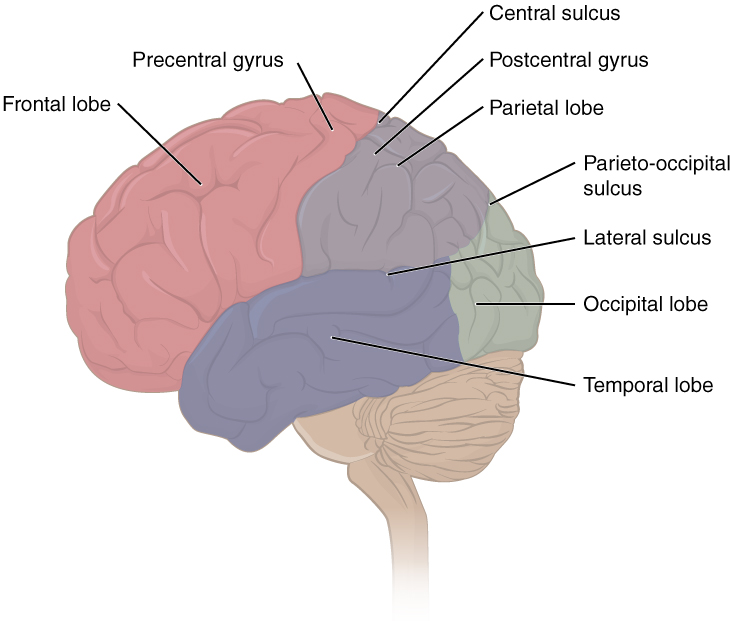
Beyond formal operations
Piaget's stage theory ends with formal operational thought — the adolescent's new power to reason abstractly, test hypotheses, and follow pure logic. But logic alone is a poor tool for most of the problems adulthood actually delivers, which are messy, contradictory, and bound up with people. A young manager weighing whether to fire an underperforming but struggling employee, or a couple deciding whose career to relocate for, cannot find the answer by deduction; the "right" answer depends on context, values, and competing truths. Many researchers therefore describe a further, uniquely adult mode called postformal thought. It is relativistic — it accepts that knowledge is shaped by context and viewpoint rather than being simply true or false; it is dialectical — it holds and integrates contradictions instead of forcing a single answer; and it is pragmatic — it bends abstract logic to fit the real constraints of a situation.
William Perry traced this shift in college students, who typically move from dualism (every question has one right answer, held by authorities) through multiplicity (all opinions seem equally valid) toward commitment within relativism (choosing and standing behind a position while knowing others exist). Labouvie-Vief added that mature adult thinking reintegrates emotion with logic rather than treating feeling as noise. Schaie captured a related idea: young adults enter an achieving stage, in which intelligence is applied not to acquire knowledge for its own sake but to reach long-term goals like career and family.
The growth of expertise
The other great cognitive story of early adulthood is the building of expertise — deep, organized skill in a chosen domain. Expertise is not raw intelligence and it is not merely time served; it is the product of years of deliberate practice, the effortful, feedback-rich, goal-directed work that Anders Ericsson distinguished from simply doing an activity over and over. (The popular "ten thousand hours" figure comes from this research, though Ericsson emphasized that it is the quality and focus of practice, not a magic number of hours, that matters.) As expertise grows, the mind reorganizes: the expert nurse, mechanic, or chess master perceives meaningful patterns where the novice sees scattered details, acts quickly and almost automatically, adapts flexibly to the unexpected, and — crucially — knows the limits of their own knowledge.
| Dimension | Novice | Expert |
|---|---|---|
| Knowledge | Isolated facts and rules | Large, richly interconnected, well-organized |
| Perception | Notices surface features | Sees meaningful patterns and "chunks" |
| Processing | Slow, effortful, step-by-step | Fast, automatic, efficient |
| Flexibility | Rigid, bound to the rules | Adapts the approach to the situation |
| Self-knowledge | Overestimates skill, misses gaps | Accurate about what they do and don't know |
- Postformal thought extends beyond Piaget's formal operations: relativistic, dialectical, and pragmatic reasoning for ill-defined real-world problems.
- Perry charted the college move from dualism to commitment within relativism; Schaie's achieving stage applies intellect to life goals.
- Expertise is built through deliberate practice, not mere repetition or general intelligence.
- Experts reorganize knowledge into patterns, act efficiently, adapt flexibly, and judge their own limits accurately — but their skill stays domain-specific.
Section 3Intimacy versus isolation
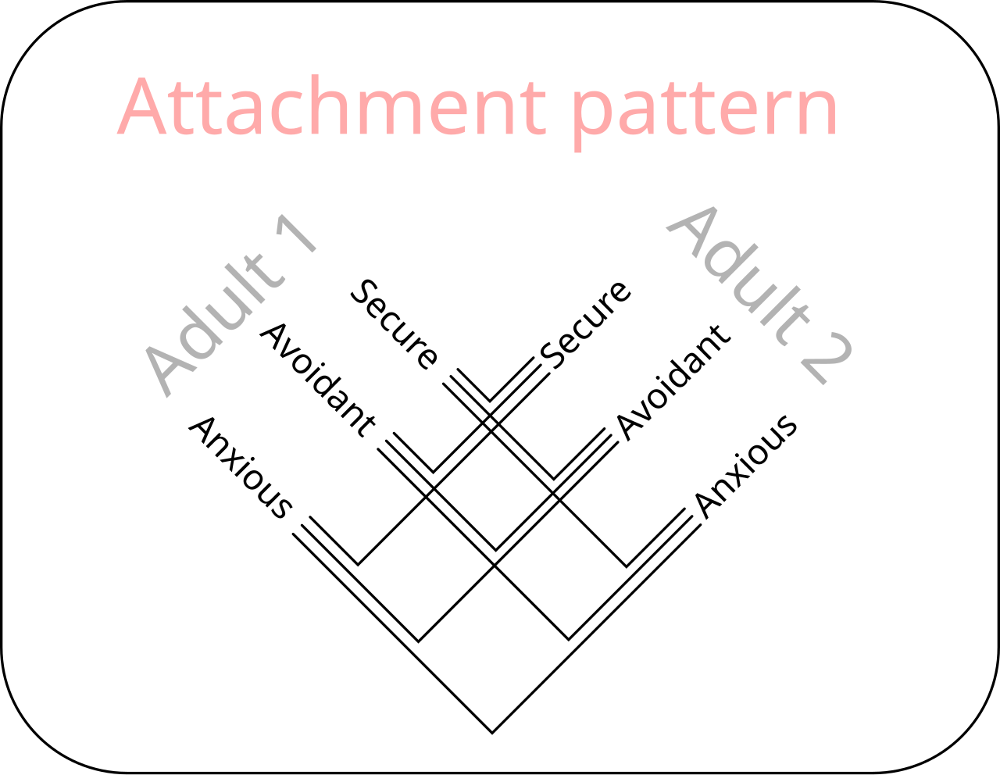
Erikson's sixth stage
In Erik Erikson's eight-stage map of the life cycle, young adulthood is the season of intimacy versus isolation. Having forged a coherent sense of self in the identity crisis of adolescence, the young adult now faces a new task: to fuse that identity with another person's in genuine closeness — the capacity to commit to a deep, mutual relationship that demands sacrifice, compromise, and the risk of being truly known. Erikson insisted on the order: you must know who you are before you can lose yourself in another without fear of disappearing. The young adult who cannot manage this closeness slides toward isolation — loneliness, guardedness, and a self-absorption that keeps others at arm's length. When the stage is resolved well, its lasting gift, in Erikson's language, is the virtue of love: the mature ability to be devoted to another despite differences and difficulties.
Attachment carries forward
How readily a young adult manages intimacy is shaped, in part, by patterns laid down long before. Bowlby argued that infants build an internal working model of relationships from early caregiving, and Ainsworth's Strange Situation sorted those models into secure and insecure styles. Hazan and Shaver proposed that these same models resurface in adult romance, producing recognizable adult attachment styles. Secure adults are comfortable with both closeness and independence and trust their partners; anxious (preoccupied) adults crave near-total closeness and fear abandonment; avoidant (dismissing) adults prize self-reliance and grow uneasy when a relationship asks for dependence. These styles are tendencies, not sentences: through a stable, responsive relationship or through reflection and therapy, an insecurely attached person can develop what researchers call earned security.
| Attachment style | How it feels in close relationships | Early echoes |
|---|---|---|
| Secure | At ease with intimacy and autonomy; trusts and depends comfortably | Consistent, responsive caregiving |
| Anxious / preoccupied | Longs for merger; watchful for signs of rejection | Inconsistent, unpredictable caregiving |
| Avoidant / dismissing | Values independence; keeps emotional distance | Rejecting or emotionally unavailable caregiving |
Friends and the social convoy
Intimacy is not the property of romance alone. Close friendships, often at their most abundant in early adulthood, meet many of the same needs for disclosure, support, and belonging. Antonucci's image of the social convoy captures it well: each of us travels through life inside a moving circle of relationships — partner, family, friends — that offers protection and company along the way. The size and warmth of that convoy matter for health. Chronic loneliness is now recognized as a genuine medical risk, associated with worse cardiovascular and immune outcomes, which is one more reason Erikson's stage is about survival as much as sentiment.
- Erikson's young-adult stage is intimacy versus isolation; its virtue is love, and it presumes a resolved identity.
- Infant internal working models resurface as adult attachment styles: secure, anxious/preoccupied, and avoidant/dismissing.
- Attachment style is a tendency, not destiny — earned security is possible.
- The social convoy of partners, family, and friends buffers stress; chronic loneliness is a real health risk.
Section 4Love and partnership

The triangle of love
Robert Sternberg's triangular theory of love proposes that love is built from three ingredients. Intimacy is emotional closeness — warmth, trust, and the sense of being deeply connected. Passion is the drive toward romance and physical attraction. Commitment is the decision to love and to maintain that love over time. Present alone or in combination, the three components generate distinct kinds of love. Romantic love couples intimacy with passion but lacks lasting commitment; companionate love joins intimacy and commitment after passion has cooled — the deep, affectionate bond of long marriages and old friendships; and consummate love, the complete form, holds all three at once. Researchers have long noted, as Hatfield and Berscheid emphasized, that passionate love burns hot and early but fades, while companionate love tends to grow — a shift that surprises couples who mistake the cooling of passion for the failure of love.
| Kind of love | Intimacy | Passion | Commitment |
|---|---|---|---|
| Liking (friendship) | ✓ | — | — |
| Infatuation | — | ✓ | — |
| Empty love | — | — | ✓ |
| Romantic love | ✓ | ✓ | — |
| Companionate love | ✓ | — | ✓ |
| Fatuous love | — | ✓ | ✓ |
| Consummate love | ✓ | ✓ | ✓ |
Partnering and family formation
Early adulthood is when most people choose long-term partners and, often, begin families — but the shape of that path has changed markedly. In many industrialized societies the median age at first marriage has risen into the late twenties or beyond, cohabitation before or instead of marriage has become common, and family forms have grown more diverse. When people do partner, they tend to choose others who resemble them in age, education, values, and background — a pattern called assortative mating. The move into parenthood is among the most profound transitions of the period: deeply rewarding, but also stressful enough that couples commonly report a dip in marital satisfaction in the demanding early years with a first child, before it recovers. And none of this is universal — cultures vary widely in whether marriages are arranged or chosen for love, and in how much the couple, rather than the extended family, is treated as the core unit.
- Sternberg's triangular theory builds love from intimacy, passion, and commitment, whose combinations yield seven kinds of love.
- Passionate love peaks early and fades; companionate love (intimacy plus commitment) tends to grow and sustains long relationships.
- Contemporary partnering features later marriage, common cohabitation, and diverse family forms; people pair by assortative mating.
- The transition to parenthood is rewarding but often dips marital satisfaction in the early, demanding years.
Section 5Work and the road to adulthood
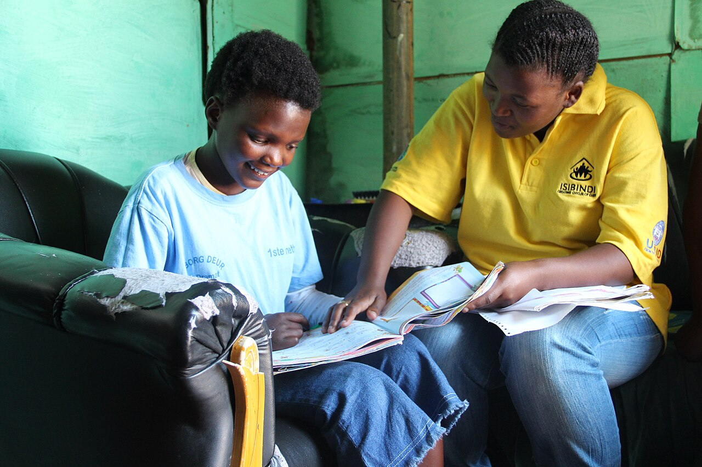
Work and identity
Alongside love, work is the great organizing project of early adulthood — the other half of Freud's formula for a healthy life. Work supplies far more than income. It structures the day, confers a social role and status, provides a community of colleagues, and answers, in shorthand, the question "what do you do?" that so often stands in for "who are you?" John Holland's influential model matches people to occupations by vocational personality type — the six RIASEC types of Realistic, Investigative, Artistic, Social, Enterprising, and Conventional — on the premise that satisfaction and stability follow when a person's interests fit the work. Donald Super described a longer arc across the lifespan; in early adulthood most people are in the establishment stage, entering a field, trying roles, and gradually stabilizing into a career that becomes part of who they are.
Emerging adulthood
The passage from adolescence to full adulthood has stretched out. Longer schooling, later marriage, and later parenthood have opened a new life phase that Jeffrey Arnett named emerging adulthood, roughly ages 18 to 25 (extending toward 29), characteristic of industrialized societies. Arnett described five features: intense identity exploration, especially in love and work; instability in relationships, jobs, and living situations; a self-focused freedom from obligations; a feeling of being in-between, neither adolescent nor fully adult; and a wide-open sense of possibilities and optimism. It is a period of trying on lives before committing to one.
| Feature of emerging adulthood | What it looks like |
|---|---|
| Identity exploration | Trying out possibilities in love and work to find a fit |
| Instability | Frequent changes in residence, relationships, jobs, and schooling |
| Self-focus | Fewer obligations to others; time to concentrate on oneself |
| Feeling in-between | No longer an adolescent, not yet feeling fully adult |
| Possibilities / optimism | High hopes; the sense that life is wide open |
When does adulthood begin?
If not marriage or a first job, what marks the crossing into adulthood? When Arnett asked young people, they did not point to the old role transitions — finishing school, marrying, becoming a parent. They named quieter, psychological, individualistic milestones: accepting responsibility for oneself, making independent decisions, and becoming financially independent. Adulthood, by this account, is less an event than an internal achievement — a shift in how a person carries themselves in the world — which is why two people the same age, one married with children and one single and still in school, may each feel, accurately, only partly grown up.
- Work shapes adult identity, structure, and status; Holland matches people to jobs by vocational type (RIASEC), and Super's establishment stage describes settling a career.
- Arnett's emerging adulthood (~18–25) is a distinct phase marked by identity exploration, instability, self-focus, feeling in-between, and optimism.
- Young people define adult status by psychological markers — responsibility, independent decisions, financial independence — over role transitions.
- Because adulthood is an internal achievement, its timing varies widely from person to person.
The chapter in one breath
- The body peaks physically in the twenties and early thirties; senescence then begins so slowly it goes unfelt, while the health habits set now shape health for decades.
- Postformal thought carries reasoning past Piaget's formal operations into relativistic, dialectical, and pragmatic thinking for real-world problems.
- Expertise grows through deliberate practice, reorganizing knowledge into patterns that let experts act quickly, flexibly, and self-aware — within a single domain.
- Erikson's young-adult crisis is intimacy versus isolation, yielding the virtue of love and building on a resolved identity.
- Infant attachment resurfaces as adult attachment styles (secure, anxious, avoidant), which are tendencies open to change, not fixed fates.
- Sternberg's triangular theory combines intimacy, passion, and commitment; passion fades while companionate love deepens and sustains partnerships.
- Work anchors adult identity, and Arnett's emerging adulthood describes the extended, exploratory bridge into an adulthood now defined more by responsibility than by milestones.
ReferenceWords worth knowing
A quick reference for the terms in this chapter — skim it now, or circle back whenever a word trips you up.
- Adult attachment styles
- Patterns of relating to romantic partners — secure, anxious/preoccupied, avoidant/dismissing — that echo infant attachment.
- Assortative mating
- The tendency to choose partners who resemble oneself in traits such as age, education, values, and background.
- Cohabitation
- Living together in a romantic partnership without being married; increasingly common before or instead of marriage.
- Commitment (Sternberg)
- The component of love that is the decision to love another and to maintain that love over time.
- Companionate love
- Deep, affectionate love combining intimacy and commitment without intense passion; typical of enduring bonds.
- Consummate love
- The complete form of love in Sternberg's theory, holding intimacy, passion, and commitment together.
- Deliberate practice
- Effortful, focused, feedback-rich practice aimed at improvement; the engine of expertise, distinct from mere repetition.
- Emerging adulthood
- Arnett's proposed life stage (~18–25) between adolescence and full adulthood, marked by exploration and instability.
- Establishment stage
- Super's career phase of early adulthood in which a person enters, tries out, and stabilizes an occupation.
- Expertise
- Deep, well-organized skill in a specific domain, built over years of deliberate practice.
- Intimacy (Sternberg)
- The component of love that is emotional closeness, warmth, and connection.
- Intimacy versus isolation
- Erikson's sixth psychosocial stage, the young-adult task of forming close bonds; its virtue is love.
- Passion (Sternberg)
- The component of love that is romantic and physical attraction and drive.
- Passionate love
- Intense, arousing early-stage love that tends to burn hot and then fade.
- Peak bone mass
- The greatest bone density a person attains, reached around age 30, setting the reserve against later osteoporosis.
- Postformal thought
- Adult reasoning beyond Piaget's formal operations: relativistic, dialectical, and pragmatic.
- Relativistic thinking
- Recognizing that knowledge is shaped by context and viewpoint rather than being absolutely true or false.
- Senescence
- The gradual biological decline of the body's systems, which begins even at the physical peak.
- Social convoy
- Antonucci's image of the moving circle of relationships that accompanies and supports a person through life.
- Triangular theory of love
- Sternberg's model in which love is composed of intimacy, passion, and commitment.
- VO₂ max
- Maximal oxygen uptake, the best single index of aerobic fitness; highest in the late teens and twenties.
- Vocational personality type
- Holland's idea (the RIASEC types) that job satisfaction follows when work fits a person's interests.
Check yourself
Middle Adulthood
Somewhere around forty, the body begins to keep score. Reading glasses appear on the bedside table, the mirror shows a few gray hairs, and the news arrives that a parent needs help. Yet middle adulthood — roughly ages forty to sixty-five — is far from a slow decline. It is often the season of greatest competence, authority, and reach: the years when accumulated knowledge peaks, when careers crest, and when a person becomes the generation others lean on from both sides. This chapter looks at the aging body and the midlife health that can be protected, at a mind that trades raw speed for deep expertise, at Erikson’s call to give something back, at the surprisingly stable self behind the “midlife crisis” headline, and at the crowded intersection of work and family that so many midlife adults stand in.
By the end of this chapter you can
- Define senescence and distinguish primary from secondary aging.
- Describe the physical changes of midlife, including menopause, the climacteric, and their health consequences.
- Contrast fluid and crystallized intelligence and explain how each changes across midlife.
- Explain the nature of expertise and how experts compensate for slowing processing speed.
- State Erikson’s stage of generativity versus stagnation and the ways generativity is expressed.
- Summarize the evidence on personality stability and evaluate the myth of the midlife crisis.
- Describe the midlife career peak, the sandwich generation, and how family relationships shift in these years.
Section 1The aging body and midlife health

Senescence: the gradual work of aging
Senescence is the gradual, universal biological aging of the body — the slow decline in the efficiency of organs and systems that begins, quietly, in early adulthood and becomes noticeable in midlife. It helps to separate two strands. Primary aging is intrinsic and largely unavoidable: it is written into the biology of the cell and unfolds in everyone who lives long enough. Secondary aging is the damage that accumulates from disease, disuse, and lifestyle — smoking, poor diet, sun exposure, inactivity — and it is far more preventable. Much of what people fear as “getting old” is actually secondary aging, which is exactly why midlife habits matter so much for what the later decades will feel like.
The visible signs are familiar. Skin loses collagen and elastin, so it thins and wrinkles; hair grays as pigment cells retire. Less visible but more consequential, the eye’s lens stiffens, producing presbyopia — the near-vision blur that sends nearly everyone to reading glasses in their forties — and the inner ear loses sensitivity to high frequencies, a change called presbycusis. Muscle mass slowly declines (sarcopenia), metabolism cools, weight tends to settle around the middle, and the walls of the arteries stiffen. None of this happens overnight, and none of it, at midlife, need be disabling.
Menopause and the climacteric
The most defined physical event of midlife is menopause, the permanent end of menstruation and fertility, dated only in retrospect after twelve consecutive months without a period. In industrialized countries the average age is about fifty-one. It does not arrive all at once: the years of hormonal turbulence leading up to it are called perimenopause, when estrogen levels fluctuate and then fall, producing the classic hot flashes, night sweats, disturbed sleep, and mood shifts. The broader hormonal transition of midlife — in either sex — is the climacteric.
The fall in estrogen has consequences beyond symptoms. It accelerates the loss of bone density, raising the risk of osteoporosis and fracture, and it removes some of the cardiovascular protection younger women enjoy. Men experience nothing so abrupt. Testosterone declines gradually — a slow drift sometimes loosely called andropause — and male fertility, though reduced, can continue for decades. Culture shapes the experience powerfully: in societies where older women gain status, menopause is reported with fewer distressing symptoms, a reminder that biology and meaning are braided together.
| System | Typical midlife change | Why it matters |
|---|---|---|
| Vision | Presbyopia — lens stiffens, near focus blurs | Reading glasses; near-universal by the mid-forties |
| Hearing | Presbycusis — loss of high frequencies | Trouble following speech in noisy rooms |
| Reproductive | Menopause / climacteric; falling sex hormones | End of fertility; bone & cardiovascular effects |
| Skeletal | Declining bone density | Osteoporosis and fracture risk, especially post-menopause |
| Muscular | Sarcopenia — gradual loss of muscle | Strength training slows it markedly |
| Cardiovascular | Arterial stiffening, rising blood pressure | Hypertension and heart disease become leading concerns |
Health at the peak of the middle years
Midlife is when chronic conditions first announce themselves — hypertension, type 2 diabetes, heart disease, arthritis, and rising cancer risk — and when the accounts of earlier decades come due. But it is equally the time when behavior has the most leverage. The “use it or lose it” principle is real: regular exercise preserves muscle, bone, and vessel, and protects the brain; not smoking, eating well, and managing stress can postpone or prevent much of what looks like inevitable decline. Health in these years is also profoundly shaped by circumstance — income, occupation, and access to care carve deep disparities — so midlife health is never a purely private achievement.
- Senescence is gradual biological aging; primary aging is intrinsic, secondary aging comes from disease and lifestyle and is largely preventable.
- Midlife brings presbyopia, presbycusis, graying, sarcopenia, and arterial stiffening — slow, not sudden.
- Menopause (average age ~51) ends fertility; falling estrogen raises osteoporosis and cardiovascular risk. Men have no equivalent abrupt event.
- Chronic disease emerges now, but exercise and lifestyle give midlife adults strong control over their trajectory.
Section 2Cognition in midlife

Two kinds of intelligence
The most useful idea for understanding the midlife mind, first drawn by Raymond Cattell and John Horn, splits intelligence in two. Fluid intelligence is raw mental horsepower — reasoning about novel problems, working memory, and the sheer speed of processing. It depends on the efficiency of the nervous system, peaks in the early twenties, and begins a slow, steady decline that becomes measurable in midlife. Crystallized intelligence is the opposite story: it is accumulated knowledge, vocabulary, verbal skill, and the well-worn judgment of a field. It rests on experience rather than speed, and it rises or holds steady well into the late middle years. The midlife mind, in short, is losing a little of one currency while getting steadily richer in the other.
This is why a middle-aged adult may take a beat longer to learn an unfamiliar app yet run rings around a twenty-five-year-old in any domain where knowing the terrain is what counts. K. Warner Schaie’s Seattle Longitudinal Study — which followed the same people for decades rather than comparing different age groups at one moment — found that several core abilities, including verbal ability, spatial orientation, inductive reasoning, and verbal memory, actually peaked in midlife, with only perceptual speed and numeric ability declining earlier. The longitudinal design mattered: earlier cross-sectional snapshots had confused true aging with cohort effects (the fact that later-born groups had more schooling), making midlife look worse than it is.
| Feature | Fluid intelligence | Crystallized intelligence |
|---|---|---|
| What it is | Reasoning, working memory, processing speed | Knowledge, vocabulary, expertise, judgment |
| Depends on | Efficiency of the nervous system | Accumulated learning and experience |
| Peak | Early adulthood | Late midlife or beyond |
| Midlife trend | Gradual decline | Stable or still rising |
| Example task | Solving an unfamiliar logic puzzle quickly | Defining rare words; diagnosing a familiar case |
Expertise: knowledge that outruns speed
The clearest advantage of the midlife mind is expertise — the deep, organized, domain-specific knowledge built by years of practice. Experts do not simply know more facts; they organize what they know differently. They perceive meaningful patterns where novices see clutter, group information into large chunks, and reach for automatic, well-rehearsed procedures, which frees mental resources for the hard part of a problem. A veteran nurse, mechanic, chess player, or teacher solves in a glance what a beginner must reason through step by step.
Expertise also explains how skilled performance survives the slow loss of fluid speed. Paul Baltes described the strategy as selective optimization with compensation: aging experts select the goals that matter most, optimize the skills that serve them through continued practice, and compensate for what has slowed with knowledge and shortcuts. The classic illustration is the concert pianist who, to hide slowing fingers, plays slow passages a touch slower so the fast ones seem faster by contrast. Midlife thinking also tends to grow more practical and dialectical — comfortable with contradiction, context, and shades of gray — a maturity of judgment sometimes called post-formal thought.
- Fluid intelligence (speed, reasoning) peaks early and slowly declines; crystallized intelligence (knowledge, vocabulary) holds or rises into late midlife.
- Schaie’s Seattle Longitudinal Study showed several abilities peak in midlife; cross-sectional studies had overstated decline via cohort effects.
- Expertise is organized, chunked, pattern-based knowledge that lets experts outperform faster novices.
- Selective optimization with compensation (Baltes) explains how skilled adults offset slowing speed with strategy and knowledge.
Section 3Generativity: giving something back

Erikson’s seventh stage
Erik Erikson placed a single great tension at the center of middle adulthood, the seventh of his eight psychosocial stages: generativity versus stagnation. Generativity is the concern for establishing and guiding the next generation — the wish to nurture, mentor, create, and leave something of value behind. Its opposite, stagnation (or self-absorption), is a slide into self-indulgence, a sense of going nowhere, of contributing nothing beyond oneself. When the tension resolves toward generativity, Erikson said, the emerging strength — the “virtue” of the stage — is care. It is worth placing the stage in the sequence: intimacy versus isolation precedes it in young adulthood, and integrity versus despair follows it in old age.
Generativity is not one thing. It shows up in biological form as bearing children, in parental form as raising them, in technical and occupational form as mentoring apprentices and passing on a craft, and in cultural form as contributing to institutions, communities, and traditions that will outlast the individual. A person with no children of their own can be intensely generative through teaching, volunteering, art, or leadership. What unites these expressions is the outward turn — from what can I get to what can I give and leave.
| Aspect | Generativity | Stagnation |
|---|---|---|
| Focus | The next generation; a legacy beyond the self | The self; comfort and personal gain |
| Feeling | Productive, needed, connected | Restless, empty, unproductive |
| Typical acts | Mentoring, parenting, creating, volunteering | Self-indulgence, disengagement, withdrawal |
| Resulting strength | Care | Rejectivity, self-absorption |
How generativity works — and why it matters
Dan McAdams gave Erikson’s idea sharper edges, describing generativity as a whole system: an inner desire for symbolic immortality and to be needed, a cultural demand that midlife adults take responsibility, and then concern, belief, commitment, action, and the narration of one’s life as a generative story. Highly generative adults, he found, tend to tell “redemptive” life stories in which hardship is transformed into something good that can be handed on. Generativity, in other words, is partly a way of making meaning of one’s own life.
It also pays. Adults who score high in generativity tend to report greater life satisfaction and psychological well-being, are more involved as parents and citizens, and are more invested in their communities and in politics that reach beyond their own lifetimes. Erikson did not claim the stage arrives on a fixed schedule — people can become generative early or late — but he was pointing at something real: the midlife adult stands at the hinge between the generations, and turning outward at that hinge is one of the strongest predictors of a life that feels worthwhile.
- Erikson’s seventh stage is generativity versus stagnation; its virtue is care.
- Generativity — guiding the next generation — can be biological, parental, occupational, or cultural, and does not require having children.
- Stagnation is self-absorption and a sense of unproductive stalling.
- McAdams showed generativity involves desire, cultural demand, concern, and action; it predicts well-being and civic engagement.
Section 4Personality and the myth of the midlife crisis

How stable is personality?
Ask whether people change in midlife and the honest answer is: less than you would think, and in orderly ways. Research using the Big Five traits — openness, conscientiousness, extraversion, agreeableness, and neuroticism — shows high rank-order stability in adulthood: the person who was more conscientious than her peers at thirty is very likely still more conscientious than her peers at fifty. At the same time there is gentle mean-level change in a consistent direction. On average, across midlife, conscientiousness and agreeableness rise and neuroticism falls — a drift toward greater emotional stability and social maturity that researchers call the maturity principle. People become, on the whole, a little steadier, warmer, and more dependable.
Alongside this stability, the self keeps working. Middle-aged adults revise their possible selves — Hazel Markus and Paula Nurius’s term for the selves we hope to become and fear becoming — often trading grand ambitions for more attainable, present-focused goals. Many report a subjective age younger than their years, feeling perhaps ten years younger than the number on the birthday cake. And a quiet stock-taking begins: a review of what has been accomplished and what time remains, which can sharpen priorities without any sense of crisis at all.
The midlife crisis, examined
The phrase “midlife crisis” was coined by Elliott Jaques in 1965 and popularized by Daniel Levinson, whose Seasons of a Man’s Life described a turbulent “midlife transition” of questioning and upheaval. The image stuck — the red sports car, the abrupt reinvention — and became a cultural cliché. But when researchers actually measured it, the crisis largely evaporated. The large MIDUS study (Midlife in the United States), led by Orville Gilbert Brim and colleagues, found that only a minority of adults report anything like a midlife crisis, and that when a “crisis” does occur it is usually tied to a specific event — a divorce, a job loss, an illness — rather than to reaching a particular age.
The fuller picture is that midlife is, for most people, a time of relative competence, control, and stability — a peak sense of mastery over one’s life. Difficult turning points are common, but they are not the same as a developmental crisis wired to the calendar. Well-being research even finds a gentle U-shaped pattern in some samples, with life satisfaction dipping modestly in the middle years before rising again — a nudge, not a collapse. The lasting lesson is that a stable, maturing self, not a predictable meltdown, is the real story of midlife personality.
| The popular image | What the evidence shows |
|---|---|
| A universal crisis strikes around 40–50 | Only a minority report a “crisis”; most feel stable and in control |
| Personality is upended | Traits are highly stable; change is small and toward greater maturity |
| Age itself triggers the turmoil | Distress, when present, tracks events (divorce, job loss, illness), not birthdays |
| Midlife is the unhappiest time | At most a modest U-shaped dip; mastery and life satisfaction are generally high |
- Big Five traits show high rank-order stability in adulthood, with small mean-level shifts toward maturity (the maturity principle): rising conscientiousness and agreeableness, falling neuroticism.
- The self stays active through revised possible selves and a younger subjective age.
- The midlife crisis (Jaques, Levinson) is largely a myth; MIDUS found crises are a minority experience, usually event-driven.
- Midlife typically brings a high sense of mastery, not developmental collapse.
Section 5Work, family, and relationships

Work at its peak
For many, midlife is the summit of working life. Earnings and authority tend to be highest, expertise is fully ripened, and job satisfaction often peaks as work becomes a settled part of identity rather than a scramble to prove oneself. Some adults reach a plateau and make peace with it; others feel a pull toward renewed meaning and change course — a “second act,” an encore career, or a return to school. These years are not without risk: age discrimination and the disruption of layoffs land hard in midlife, when reemployment can be slow. But for those with stable careers, midlife work often provides the platform from which generativity flows — mentoring the young, shaping an institution, training a successor.
The sandwich generation
The defining family fact of these years is captured in a single image: the middle-aged adult pressed between two generations who both need care. The sandwich generation is the cohort simultaneously supporting their own children — increasingly emerging adults still finding their feet, sometimes “boomerang” kids who return home — and their aging parents, whose health is beginning to fail. This double duty of caregiving falls disproportionately on women, who often become the family kinkeeper, coordinating everyone’s needs. The result can be genuine role strain: time, money, and energy stretched thin. Yet many in this position also describe deep meaning in it, experiencing the caregiving as an expression of the very generativity that defines the stage.
| Relationship | Common midlife shift |
|---|---|
| Marriage / partnership | Satisfaction often rises after children launch (the “empty nest” is frequently positive) |
| Adult children | Role changes from managing to consulting; “boomerang” returns are increasingly common |
| Aging parents | Caregiving begins; roles gradually reverse — the sandwich pressure |
| Grandchildren | Grandparenthood often begins, adding a new generative role |
| Friends & siblings | Ties often deepen; siblings reconnect around aging parents |
Relationships that shift and often deepen
The family relationships of midlife rearrange themselves, usually for the better. The much-feared empty nest — the departure of grown children — turns out, for most couples, to raise marital satisfaction rather than lower it, as partners rediscover time and attention for each other; the sad, purposeless empty-nester of legend is more exception than rule. Marital satisfaction across adulthood tends to trace a U-shape, dipping during the busy child-rearing years and climbing again afterward. New roles arrive: grandparenthood begins for many, offering generativity without the daily labor of parenting. Friendships and sibling bonds often deepen, and siblings frequently reconnect around the shared task of caring for parents. Divorce does still occur — “gray divorce” in the middle and later years has been rising — but the dominant theme of midlife relationships is continuity and, frequently, renewal.
- Midlife is often the career peak — highest earnings, authority, and job satisfaction — though age discrimination and layoffs pose real risks.
- The sandwich generation supports children and aging parents at once; caregiving falls heavily on women, who often serve as kinkeepers.
- The empty nest typically raises marital satisfaction; the departure of children is a normal, often welcome, developmental task.
- New roles — grandparenthood, renewed friendships, deepened sibling ties — commonly emerge, even as “gray divorce” rises.
The chapter in one breath
- Senescence is gradual aging; primary aging is intrinsic while secondary aging (from lifestyle and disease) is largely preventable — giving midlife adults real control over their health.
- Menopause (average age ~51) ends fertility, and the falling estrogen of the climacteric raises osteoporosis and cardiovascular risk; men have no comparable abrupt event.
- Fluid intelligence (speed, reasoning) slowly declines while crystallized intelligence (knowledge) holds or rises; Schaie’s longitudinal work shows several abilities peak in midlife.
- Expertise lets middle-aged adults outperform faster novices, and selective optimization with compensation offsets slowing speed with strategy.
- Erikson’s generativity versus stagnation defines the stage; guiding the next generation — its virtue is care — predicts well-being.
- Personality is highly stable with a gentle drift toward maturity; the universal midlife crisis is largely a myth, with distress tracking events, not age.
- Midlife brings a career peak, the sandwich generation’s double caregiving, and family shifts in which the empty nest usually raises marital satisfaction.
ReferenceWords worth knowing
A quick reference for the terms in this chapter — skim it now, or circle back whenever a word trips you up.
- Andropause
- The gradual, non-abrupt decline in testosterone in aging men; unlike menopause, it does not end fertility.
- Climacteric
- The broader midlife transition in reproductive hormones and fertility, of which menopause is the female milestone.
- Crystallized intelligence
- Accumulated knowledge, vocabulary, and judgment built from experience; stable or rising into late midlife.
- Empty nest
- The stage after grown children leave home; for most couples it raises rather than lowers marital satisfaction.
- Expertise
- Deep, organized, domain-specific knowledge that lets experts recognize patterns and outperform faster novices.
- Fluid intelligence
- Reasoning, working memory, and processing speed applied to novel problems; peaks early and slowly declines.
- Generativity
- Erikson’s midlife concern with guiding and establishing the next generation; yields the strength of care.
- Kinkeeper
- The family member — most often a midlife woman — who coordinates relationships and caregiving across the generations.
- Maturity principle
- The average adult drift toward higher conscientiousness and agreeableness and lower neuroticism.
- Menopause
- The permanent end of menstruation and fertility, dated after twelve months without a period; average age ~51.
- Midlife crisis
- A supposed universal upheaval around age 40–50; research finds it is a minority, usually event-driven, experience.
- Osteoporosis
- Loss of bone density that weakens bone and raises fracture risk, accelerated after menopause.
- Perimenopause
- The transitional years of fluctuating, then falling, estrogen that lead up to menopause.
- Possible selves
- Markus and Nurius’s term for the selves one hopes to become and fears becoming, which guide behavior.
- Presbycusis
- Age-related loss of hearing, especially for high frequencies.
- Presbyopia
- Age-related stiffening of the eye’s lens that blurs near vision, near-universal by the mid-forties.
- Primary aging
- Intrinsic, largely unavoidable biological aging written into the body’s cells.
- Sandwich generation
- Midlife adults simultaneously supporting their own children and their aging parents.
- Sarcopenia
- The gradual, age-related loss of muscle mass and strength, slowed markedly by resistance exercise.
- Secondary aging
- Preventable aging that results from disease, disuse, and lifestyle factors such as smoking and inactivity.
- Selective optimization with compensation
- Baltes’s strategy in which aging adults select key goals, optimize relevant skills, and compensate for losses.
- Senescence
- The gradual, universal biological aging of the body’s organs and systems.
- Stagnation
- The negative pole of Erikson’s seventh stage: self-absorption and a sense of unproductive stalling.
Check yourself
Late Adulthood
Late adulthood is not one experience but many. The years after sixty-five stretch across three or four decades and hold newlyweds and great-grandparents, marathon runners and hospice patients — which is why no single portrait of “old age” is ever true. This chapter takes up three questions people have asked for as long as they have grown old: why does the body age at all, what happens to the mind, and why do some people flourish in their final decades while others fade. You will meet the biologists who study cellular wear, the psychologists who chart memory and wisdom, and Erik Erikson, who saw in old age a last great task — to look back on one whole life and be able to call it good.
By the end of this chapter you can
- Distinguish programmed theories of aging from damage/error theories, and name the leading example of each.
- Explain the Hayflick limit and the role of telomeres in cellular aging.
- Separate primary aging from secondary aging and explain why the distinction matters.
- Describe the typical changes in the body and the senses in late adulthood, including presbyopia and presbycusis.
- Contrast normal age-related memory change with the memory loss of dementia, and describe Alzheimer disease.
- Summarize Erikson’s eighth stage, integrity versus despair, and the strength — wisdom — that resolves it.
- Compare disengagement, activity, continuity, and socioemotional selectivity theories of social aging.
- State what researchers mean by successful aging.
Section 1Why we age

Two great families of theory
Senescence is the gradual, universal decline in the body’s function that comes with time — the reason a seventy-year-old heart, kidney, and immune system do not perform like a twenty-year-old’s. Biologists have long argued about why it happens, and their explanations sort into two camps. Programmed theories hold that aging is built in — part of the genetic plan, a clock that ticks whether or not the body is damaged. Damage (or error) theories hold the opposite: aging is the accumulation of wear, injury, and mistakes that the body cannot fully repair. The honest modern answer is that both are partly right, and they act together.
The programmed camp
The most famous programmed idea is the Hayflick limit. In the 1960s Leonard Hayflick showed that normal human cells grown in a dish divide only a finite number of times — roughly forty to sixty — and then stop, entering replicative senescence. The clock behind that limit is the telomere, a protective cap of repeated DNA on the end of each chromosome. Every division shaves a little off the telomere; when it grows too short, the cell can no longer divide safely and shuts down. Other programmed theories point to a hormonal clock (the endocrine theory — menopause is its clearest signpost) and to a preset decline of the immune system (the immunological theory, or immunosenescence), which leaves older adults more vulnerable to infection and cancer.
The damage camp
The oldest damage idea is simple wear and tear: parts used for decades wear out. The most influential modern version is the free-radical theory, proposed by Denham Harman — reactive oxygen molecules, produced constantly by normal metabolism, nick DNA, proteins, and membranes, and the damage piles up faster than repair can keep pace. A related idea, cross-linking, describes how sugars bond onto proteins (glycation) and stiffen tissues over time, contributing to rigid arteries and clouded lenses.
| Theory | Camp | Core idea | Everyday sign |
|---|---|---|---|
| Telomere / Hayflick limit | Programmed | Cells can divide only a set number of times as telomeres shorten | Tissues renew more slowly with age |
| Endocrine | Programmed | A hormonal clock paces the decline | Menopause; falling growth & sex hormones |
| Immunological | Programmed | Immune defense is set to wane | Rising infection and cancer risk |
| Free-radical (oxidative) | Damage | Reactive oxygen molecules accumulate and injure cells | Oxidative damage rises across the lifespan |
| Cross-linking | Damage | Sugars bond to proteins and stiffen tissue | Stiff collagen, arterial stiffening, cataracts |
- Theories of aging split into programmed (aging is scheduled) and damage/error (aging is accumulated wear).
- The Hayflick limit caps normal cell divisions; shortening telomeres are the clock.
- The free-radical (oxidative) theory is the leading damage explanation; cross-linking stiffens tissues.
- No one theory explains aging — programmed and damage processes operate together.
Section 2The aging body and senses

Primary versus secondary aging
The single most useful idea in this chapter is the split between two kinds of aging. Primary aging is the universal, intrinsic, unavoidable biological change that happens to every human who lives long enough — gray hair, slower reflexes, the lens of the eye stiffening. Secondary aging is decline caused by disease, disuse, environment, and lifestyle — the heart disease that follows decades of smoking, the type 2 diabetes that follows years of inactivity. The distinction matters enormously, because a great deal of what people blame on “just getting old” is actually secondary aging: not inevitable, often preventable, and sometimes reversible.
Changes across the body
Primary aging touches every system. The skin loses collagen, elastin, and fat, so it thins, wrinkles, and bruises more easily. Muscle mass falls — a process called sarcopenia — and bone loses density, becoming osteoporosis when the loss is severe (especially in women after menopause). Together these raise the risk of falls and fractures, one of the great threats to independence in late life. The cardiovascular system stiffens: arteries harden, maximum heart rate falls, and blood pressure tends to creep up. Underlying all of it is a loss of reserve capacity — the spare margin every organ keeps for handling stress. A young body shrugs off a bout of pneumonia or a hot day; an old body has less cushion, which is why the same insult can tip an older adult into crisis.
The senses
The senses dim in characteristic ways. In the eye, presbyopia — the loss of near focus — sends nearly everyone to reading glasses by their late forties, and the lens later clouds (cataract) while the retina and optic nerve grow more vulnerable (macular degeneration, glaucoma). In the ear, presbycusis takes the high frequencies first, which is why an older adult may hear that you are speaking but miss the consonants, and struggle most in a noisy room. Taste and smell fade too, blunting appetite and putting nutrition at risk, and declines in touch and balance add to the danger of falls.
| System | Typical primary change | Everyday effect |
|---|---|---|
| Vision | Presbyopia; clouding lens (cataract) | Reading glasses, more light needed, glare |
| Hearing | Presbycusis (high frequencies lost first) | Trouble with consonants and noisy rooms |
| Muscle & bone | Sarcopenia; osteoporosis | Weakness; fall and fracture risk |
| Heart & vessels | Arterial stiffening; lower max heart rate | Rising blood pressure; less exertional reserve |
| Skin | Less collagen, elastin, and fat | Wrinkling, thinning, easy bruising |
- Primary aging is universal and intrinsic; secondary aging comes from disease, disuse, and lifestyle and is often preventable.
- Sarcopenia (muscle loss) and osteoporosis (bone loss) drive falls and fractures.
- Vision loses near focus (presbyopia); hearing loses high frequencies first (presbycusis).
- Falling reserve capacity means older bodies meet stress with less margin.
Section 3Cognition and memory

What the mind keeps and what it loses
Aging does not empty the mind; it reshapes it unevenly. Psychologists distinguish fluid intelligence — processing speed, working memory, and the ability to solve novel problems — from crystallized intelligence, the store of vocabulary, facts, and know-how a person has accumulated. Fluid intelligence begins a slow decline in early adulthood; crystallized intelligence holds steady or keeps growing well into late life. In memory, the same pattern holds: episodic memory for recent events and working memory slip the most, while semantic memory (general knowledge) and procedural memory (how to ride a bike, how to cook a familiar meal) are well preserved. The everyday face of normal aging is a slower search — the tip-of-the-tongue moment, the misplaced keys, the name that surfaces an hour later.
Wisdom and emotion
Something is also gained. Researchers define wisdom as expert judgment about the practical and uncertain problems of living — weighing competing perspectives, tolerating ambiguity, and giving good counsel. Paul Baltes and his colleagues studied it as the pragmatics of life, and while wisdom is not automatic with age, it becomes more common. Emotion, too, often improves: older adults report steadier moods and show a positivity effect, attending more to positive information and letting go of the small frictions that preoccupy the young.
When it is more than aging: dementia and Alzheimer disease
Dementia is an acquired, progressive decline across two or more cognitive domains, severe enough to interfere with daily life. It is not a normal part of aging — most people who reach their eighties never develop it. The commonest cause, roughly two-thirds of cases, is Alzheimer disease. Its hallmark pathology is a pair of abnormal proteins: beta-amyloid plaques that build up between neurons and tau neurofibrillary tangles that choke them from within. The damage begins in the hippocampus and entorhinal cortex — the brain’s memory hub — which is why the first symptom is losing recent memories, and then spreads outward. The course runs from an early stage (recent memory, word-finding), through a middle stage (language, orientation, and the activities of daily living), to a late stage of near-total dependence. Age is the biggest risk factor; family history and the APOE-e4 gene add to it, as do the same cardiovascular risks that harm the heart.
| Feature | Normal age-related change | Dementia |
|---|---|---|
| Forgetting | Misplaces keys, recalls the event later | Forgets whole events; cannot retrace them |
| Words | Occasional tip-of-the-tongue | Frequent; substitutes wrong words |
| Daily life | Stays independent | Impaired — missed bills, getting lost |
| Course | Stable year to year | Progressive decline |
| Insight | Aware of the lapses | Often unaware |
- Crystallized intelligence (knowledge, vocabulary) holds up; fluid intelligence (speed, working memory) declines.
- Wisdom — expert judgment about life’s pragmatics — can grow, and emotion regulation often improves.
- Dementia is an acquired, progressive loss of cognition that impairs daily life; it is not normal aging.
- Alzheimer disease, the commonest dementia, shows beta-amyloid plaques and tau tangles beginning in the hippocampus.
Section 4Integrity versus despair

Erikson’s eighth stage
Erik Erikson mapped the whole lifespan as eight psychosocial stages, each turning on a central tension the person must resolve. The eighth, the work of late adulthood, is integrity versus despair. Its task is to look back over the one life a person has actually lived and make sense of it as a whole. Integrity is the acceptance that this life — with its choices, losses, and limits — was meaningful and one’s own; it brings coherence and a measure of peace with mortality. Despair is the opposite: bitterness, unappeasable regret, and the panicked sense that time has run out to set things right or start again. As with every Erikson stage, the resolution is rarely all one or the other, but a favorable balance tilted toward integrity. The strength, or virtue, that emerges from that balance is wisdom.
The life review
The psychiatrist Robert Butler described the mental process behind this stage as the life review — a natural, often intensified turn toward reminiscence in later life, as a person surveys memories, reworks old conflicts, and searches for meaning. Far from “living in the past,” the life review is active construction: it is how a life gets integrated. Clinicians put it to use as reminiscence therapy, guiding older adults through their memories to ease depression and restore a sense of worth. And the eighth stage does not stand alone — it rests on the seventh, generativity versus stagnation, and on everything before it. A life spent caring for others and building things that outlast the self gives the older adult the most to look back on with integrity.
| Stage | Approx. period | Crisis | Virtue |
|---|---|---|---|
| 1 | Infancy | Trust vs mistrust | Hope |
| 2 | Toddler | Autonomy vs shame & doubt | Will |
| 3 | Early childhood | Initiative vs guilt | Purpose |
| 4 | School age | Industry vs inferiority | Competence |
| 5 | Adolescence | Identity vs role confusion | Fidelity |
| 6 | Young adulthood | Intimacy vs isolation | Love |
| 7 | Middle adulthood | Generativity vs stagnation | Care |
| 8 | Late adulthood | Integrity vs despair | Wisdom |
- Erikson’s eighth stage is integrity versus despair; its virtue is wisdom.
- Integrity = accepting one’s life as meaningful; despair = bitterness and fear that time has run out.
- Butler’s life review is a normal, meaning-making reminiscence; reminiscence therapy puts it to clinical use.
- The eighth crisis builds on the seventh (generativity) and every stage before it.
Section 5Aging well

Three ways to explain social aging
Why do social lives change in late adulthood, and what pattern is healthiest? The first influential answer, disengagement theory (Elaine Cumming & William Henry, 1961), claimed that aging brings a mutual, natural withdrawal — the older adult pulls back from society and society pulls back from the older adult. It once seemed plausible, but the evidence turned against it: withdrawal predicts worse well-being, not better. The rival activity theory (associated with Robert Havighurst) argues the reverse — that satisfaction comes from staying active and replacing lost roles with new ones — and it fits the data far better. Continuity theory adds a refinement: people age best by carrying forward their long-standing personalities, interests, and habits rather than by reinventing themselves.
Choosing what matters: socioemotional selectivity
The most powerful modern account is socioemotional selectivity theory, developed by Laura Carstensen. Its insight is that behavior depends on how much time a person feels stretches ahead. When the horizon is open, as in youth, people invest in gathering information and meeting new contacts. When the horizon narrows, as it does in late life, priorities shift toward emotionally meaningful goals and toward the people who matter most. The result is not passive disengagement but active selection: social networks grow smaller yet deeper, and the same positivity effect seen in memory shows up in relationships. Older adults are not lonelier by default — they are choosier. The convoy model (Robert Kahn & Toni Antonucci) captures the enduring inner circle of family and close friends who travel with a person across the decades, even as widowhood — more common for women — reshapes it.
What “successful aging” means
John Rowe & Robert Kahn gave the field its best-known model of successful aging: avoiding disease and disability, maintaining high physical and cognitive function, and staying actively engaged with life. Critics rightly note that the model can feel too demanding — it seems to shut out those living with chronic illness or disability, who may nonetheless report deep well-being. That objection points to a companion idea from Paul and Margret Baltes, selective optimization with compensation (SOC): people age well by selecting the goals that matter most, optimizing the abilities that serve them, and compensating for what has been lost — the pianist Arthur Rubinstein playing fewer pieces, more slowly practiced, with contrast added to disguise the slowing. Aging well, in the end, is less about escaping decline than about adapting to it with meaning intact.
| Theory | Core claim | Standing today |
|---|---|---|
| Disengagement | Older adults and society mutually withdraw | Largely rejected |
| Activity | Staying active and replacing roles sustains well-being | Well supported |
| Continuity | People age best by keeping long-standing patterns | Supported |
| Socioemotional selectivity | Shrinking time horizons shift priorities to emotional closeness | Strongly supported |
- Disengagement theory (mutual withdrawal) is largely rejected; activity and continuity theories fare far better.
- Socioemotional selectivity theory: shrinking time horizons make people prioritize close, meaningful relationships.
- Successful aging (Rowe & Kahn) = avoiding disease, keeping function, and staying engaged.
- Selective optimization with compensation describes how people adapt to loss and keep thriving.
The chapter in one breath
- Senescence is explained by programmed theories (telomeres and the Hayflick limit, endocrine and immune clocks) and damage theories (free radicals, cross-linking) acting together.
- Primary aging is universal and intrinsic; much of what we blame on age is secondary — from disease and disuse — and preventable.
- Bodies lose reserve capacity; senses fade (presbyopia, presbycusis); sarcopenia and osteoporosis drive falls and fractures.
- Crystallized intelligence holds while fluid intelligence slows; wisdom and emotion regulation can grow.
- Dementia — chiefly Alzheimer disease, with its plaques and tangles — is a progressive loss of function, not normal aging.
- Erikson’s eighth stage, integrity versus despair, asks the older adult to accept a life as meaningful; its virtue is wisdom, aided by Butler’s life review.
- Socioemotional selectivity, activity, and continuity — not disengagement — best describe healthy social aging; successful aging blends health, function, and engagement.
ReferenceWords worth knowing
A quick reference for the terms in this chapter — skim it now, or circle back whenever a word trips you up.
- Activity theory
- The view that well-being in late life comes from staying active and replacing lost roles with new ones.
- Alzheimer disease
- The commonest dementia, marked by beta-amyloid plaques and tau tangles beginning in the hippocampus.
- Crystallized intelligence
- Accumulated knowledge, vocabulary, and know-how; it holds steady or grows in late adulthood.
- Dementia
- An acquired, progressive decline in two or more cognitive domains severe enough to impair daily life; not normal aging.
- Disengagement theory
- The largely rejected idea that older adults and society naturally and mutually withdraw from each other.
- Fluid intelligence
- Processing speed, working memory, and novel problem solving; it declines gradually from early adulthood.
- Free-radical theory
- A damage theory holding that reactive oxygen molecules accumulate and injure cells over a lifetime.
- Hayflick limit
- The finite number of times a normal cell can divide before entering replicative senescence.
- Integrity versus despair
- Erikson’s eighth stage: accepting one’s life as meaningful (integrity) versus bitterness and regret (despair).
- Life review
- Robert Butler’s term for the natural, meaning-making reminiscence of late life; the basis of reminiscence therapy.
- Osteoporosis
- Severe loss of bone density, common after menopause, that raises the risk of fractures.
- Presbycusis
- Age-related hearing loss that affects high frequencies first, hurting speech clarity in noise.
- Presbyopia
- Age-related loss of the eye’s ability to focus on near objects.
- Primary aging
- Universal, intrinsic, unavoidable biological change that comes with time.
- Reserve capacity
- The spare functional margin an organ keeps for meeting stress, which shrinks with age.
- Sarcopenia
- The age-related loss of muscle mass and strength; responsive to resistance training.
- Secondary aging
- Decline caused by disease, disuse, environment, and lifestyle; often preventable.
- Selective optimization with compensation (SOC)
- Baltes’ model of adapting to loss by selecting key goals, optimizing strengths, and compensating for deficits.
- Senescence
- The gradual, universal decline in biological function that accompanies aging.
- Socioemotional selectivity theory
- Carstensen’s theory that shrinking time horizons shift priorities toward emotionally meaningful goals and relationships.
- Telomere
- A protective cap of repeated DNA on a chromosome’s end that shortens with each cell division.
- Wisdom
- Expert judgment about the practical, uncertain problems of living; the virtue of Erikson’s eighth stage.
Check yourself
Death, Dying & Bereavement
Death is the one appointment every human life keeps, yet our understanding of it is anything but fixed. A three-year-old thinks the dead can come back; a school-age child grasps that they cannot; an adult must decide what a good death even means. This chapter follows death across the whole span of a life — how the idea of it forms in a child's mind, how people meet their own dying, how modern care tries to ease the end, how survivors grieve, and how every culture wraps the raw fact of loss in meaning. Nothing here is morbid. Understanding death is, in the end, a way of understanding what it is to be alive and mortal together.
By the end of this chapter you can
- Define death using biological, clinical, and social criteria, and distinguish clinical death from brain death.
- Trace how the concept of death develops in childhood and name its four components — irreversibility, universality, nonfunctionality, and causality.
- Connect children's understanding of death to Piaget's stages of cognitive development.
- Summarize Kübler-Ross's five stages of dying and evaluate what the model gets right and where it misleads.
- Distinguish hospice from palliative care, and explain the purpose of advance directives.
- Describe the process of grief and the features of healthy mourning, and tell normal grief apart from complicated grief.
- Compare cultural and religious perspectives on death, dying, and mourning.
Section 1Understanding death

What death is
Death sounds like it should be simple to define — a person is either alive or not — but the closer you look, the more the line blurs. Biological death is the permanent end of the physiological processes that sustain a living organism. In practice, clinicians work with two more precise ideas. Clinical death is the moment the heart stops beating and breathing ceases; for a brief window it can sometimes be reversed by resuscitation. Brain death is the irreversible loss of all brain activity, including the brainstem that drives breathing — and once it occurs, no intervention can restore the person, even if a machine keeps the heart pumping. Modern medicine created this distinction: before ventilators, the heart and the brain failed together, so no one needed to ask which one counted as death.
Death is also a social event, not only a bodily one. A society decides who is treated as dying, when mourning may begin, and what a corpse means. The psychologist Robert Kastenbaum called this whole web of customs, roles, and meanings the death system — the network of people (funeral directors, clergy, coroners), places (hospitals, cemeteries), times (anniversaries, memorial days), objects, and symbols through which a culture manages mortality. A death, in other words, is a biological fact filtered through a human world.
How the understanding of death develops
Children are not born understanding death; they build the concept piece by piece, and the pace tracks their broader cognitive growth. Researchers Mark Speece and Sandor Brent identified four components that together make up a mature grasp of death. Irreversibility — the dead do not come back. Universality — everything that lives eventually dies, including me and everyone I love. Nonfunctionality — the body's functions all stop; the dead do not eat, feel, or dream. And causality — death has physical causes, not magical ones. Most children assemble all four between roughly ages five and seven.
The developmental sequence maps neatly onto Piaget's stages. A preoperational child (about 2–7 years) tends toward magical and animistic thinking: death looks like sleep or a trip, something temporary and reversible, and the child may believe a wish or a bad deed caused it. As the child enters concrete operational thought (about 7–11 years), logic firms up and the four components click into place — death becomes final, universal, and physically caused. In adolescence, formal operational reasoning allows abstract, even philosophical reflection on mortality; yet the adolescent's personal fable — the private sense of being uniquely invulnerable — can coexist with full intellectual knowledge that everyone dies. Understanding death, then, is not one insight but a slow convergence of several.
| Age / Piaget stage | Typical grasp of death | What is still missing |
|---|---|---|
| Infant / sensorimotor (0–2) | No concept; senses separation and absence | Everything — reacts to loss of a caregiver, not to death itself |
| Preschool / preoperational (2–7) | Death seen as reversible, like sleep or a journey; often thinks a wish or act caused it | Irreversibility, universality, causality |
| School age / concrete operational (7–11) | All four components in place: final, universal, functions stop, physically caused | Abstract or existential framing |
| Adolescence / formal operational (11+) | Abstract, philosophical, and personal reflection on mortality | Emotional integration; personal fable can blunt felt vulnerability |
- Clinical death (heart and breathing stop) can sometimes be reversed; brain death (irreversible loss of all brain and brainstem activity) cannot.
- Death is a social event too — Kastenbaum's death system is the cultural web of roles, places, and symbols around it.
- A mature concept of death has four parts: irreversibility, universality, nonfunctionality, and causality, usually mastered by ages 5–7.
- The sequence follows Piaget: preoperational children see death as reversible; concrete-operational children grasp all four components.
Section 2Facing death: the five stages of dying

Kübler-Ross and the five stages
In 1969, the psychiatrist Elisabeth Kübler-Ross published On Death and Dying, drawn from hundreds of interviews with terminally ill patients at a time when doctors rarely told people they were dying and rarely spoke to those who knew. Listening closely, she heard recurring emotional themes and organized them into five stages, easily remembered by the acronym DABDA. Denial — "This can't be happening to me; there must be a mistake" — a protective shock that buffers the first blow. Anger — "Why me? It isn't fair" — resentment that may spill onto family, staff, or God. Bargaining — "If I can just live to see my daughter married, I'll never ask for anything again" — an attempt to negotiate a reprieve, often with a higher power. Depression — the quiet sorrow of anticipated loss, mourning in advance for everything and everyone that will be left behind. And Acceptance — not happiness, but a calm, clear-eyed readiness that lets a person put affairs in order and say goodbye.
Kübler-Ross's contribution was enormous. She dragged dying out of the shadows and insisted that the dying be spoken to, listened to, and accompanied. She gave clinicians and families a vocabulary for feelings that had gone unnamed, and she seeded the modern hospice and death-awareness movements. Her stages remain the most widely known framework in all of thanatology — the study of death.
What the model gets right — and where it misleads
For all its influence, the stage model has real limits, and Kübler-Ross herself warned against reading it too rigidly. The stages are not a fixed sequence: people move back and forth, skip stages, revisit them, or feel several at once. They are not universal — not everyone experiences all five, and culture, personality, and the nature of the illness shape the path. The gravest misuse is prescriptive: treating the stages as a checklist a "good" dying person must complete, so that a patient stuck in anger or denial is judged to be doing death wrong. Empirical support for a lockstep order is weak. The wiser way to hold the model is descriptively — as a catalog of common reactions that helps caregivers recognize and normalize what a dying person may feel, without forcing anyone through a script.
| Stage | Inner experience | What it might sound like |
|---|---|---|
| Denial | Shock, disbelief; a buffer against the news | "The tests must be wrong." |
| Anger | Resentment, injustice; often displaced onto others | "Why me? It's not fair." |
| Bargaining | Attempt to postpone or undo the outcome | "Just let me see one more spring." |
| Depression | Anticipatory grief; sadness for coming losses | "What's the point of anything now?" |
| Acceptance | Calm readiness; peace, not necessarily contentment | "I'm ready. I've said what I needed to." |
- Kübler-Ross's five stages of dying are denial, anger, bargaining, depression, and acceptance (DABDA).
- She transformed care by insisting the dying be told the truth, listened to, and accompanied.
- The stages are not a fixed or universal sequence; people skip, repeat, or blend them.
- Used descriptively the model normalizes feelings; used prescriptively it wrongly judges how someone "should" die.
Section 3Care at the end of life

Hospice and palliative care
For most of history, dying happened at home, quickly, and without much medicine to offer. Today most deaths in wealthy countries follow long chronic illness, and a whole field has grown up to make that ending as comfortable and meaningful as possible. Two terms are often confused. Palliative care is comfort-focused care for anyone living with a serious illness — relieving pain, breathlessness, nausea, and distress, and supporting the family — and it can run alongside curative treatment at any stage, even for a patient expected to recover. Hospice is a specific model of palliative care for people near the end of life, typically when a physician estimates six months or less and the goal shifts fully from cure to comfort. Hospice care usually happens where the patient lives, delivered by a team of nurses, aides, social workers, chaplains, and volunteers.
The modern movement traces to Dame Cicely Saunders, who founded St Christopher's Hospice near London in 1967 on a simple, radical idea: that a dying person deserves rigorous relief of physical pain and attention to emotional, social, and spiritual suffering — what she called total pain. The aim of hospice is not to hasten death or to postpone it, but to let people live as fully as possible until they die, awake, comfortable, and among the people who matter to them.
Advance directives: deciding in advance
Because a dying person may lose the ability to speak for themselves, the law lets adults record their wishes ahead of time in advance directives. A living will is a written statement of what treatments a person does or does not want — for example, whether to be placed on a ventilator or fed through a tube if there is no reasonable hope of recovery. A durable power of attorney for health care (also called a health-care proxy) names a trusted person to make medical decisions if the patient cannot. A do-not-resuscitate (DNR) order instructs clinicians not to attempt CPR if the heart stops, and newer POLST-type forms translate a seriously ill person's wishes into portable medical orders that travel with them. These documents spare families agonizing guesswork and protect a person's own values at the moment they can no longer voice them.
| Term | What it is | Key point |
|---|---|---|
| Palliative care | Comfort-focused care for serious illness | Any stage; can accompany curative treatment |
| Hospice | Palliative care near the end of life | Goal shifts fully to comfort; often prognosis of ~6 months |
| Living will | Written statement of treatment wishes | Says what you want done |
| Health-care proxy | Durable power of attorney for health care | Says who decides for you |
| DNR / POLST | Medical orders about resuscitation and treatment | Portable orders clinicians must follow |
- Palliative care relieves suffering at any illness stage and can accompany curative treatment; hospice is comfort care near the end of life.
- Cicely Saunders founded the modern hospice movement around the idea of total pain — physical, emotional, social, and spiritual.
- A living will states treatment wishes; a health-care proxy names who decides; a DNR/POLST gives portable medical orders.
- Advance directives protect a person's values and spare families from guessing.
Section 4Grief and mourning

Three words that are not the same
Everyday speech blurs them, but the field keeps them apart. Bereavement is the objective situation of having lost someone to death — the fact of it. Grief is the inner response: the storm of emotions, thoughts, and even physical sensations — sorrow, longing, guilt, anger, fatigue, an ache in the chest — that loss sets off. Mourning is the outward, often culturally shaped expression of grief: wearing black, sitting shiva, holding a wake, visiting a grave. One can be bereaved and grieving privately while the rituals of mourning are handled by a whole community. Grief is also normal and, in some form, nearly universal; it is love's cost, and it is not a disease to be cured.
How grief actually moves
Early models borrowed Kübler-Ross's stages and applied them to the bereaved, but researchers have since offered richer accounts. J. William Worden reframed grief as active work rather than passive stages — his four tasks of mourning: to accept the reality of the loss, to process the pain of grief, to adjust to a world without the person, and to find an enduring connection with them while moving forward into life. Margaret Stroebe and Henk Schut's dual-process model describes healthy grieving as an oscillation: the bereaved swing back and forth between loss-oriented coping (facing the grief, crying, remembering) and restoration-oriented coping (handling practical changes, forming new routines and roles), and both are necessary. And the continuing bonds perspective overturned an older assumption that healthy grief means "letting go": most people keep a transformed relationship with the person who died — talking to them, carrying their values, feeling their presence at milestones — and this ongoing connection is healthy, not pathological.
When grief becomes complicated
For most people, acute grief softens over months into a quieter, livable sorrow; the loss is never erased, but life reopens. In a minority, grief stays intense, disabling, and unremitting for a year or more — the person is caught in ceaseless yearning, unable to accept the death or re-engage with life. This is complicated grief, now recognized in diagnostic manuals as prolonged grief disorder, and it responds to specific treatment. It is worth distinguishing grief from major depression: classic grief comes in waves tied to reminders and preserves self-worth and the capacity for moments of comfort, whereas depression is more pervasive, flattening, and marked by worthlessness. Naming the difference matters, because ordinary grief needs companionship and time, while complicated grief and depression may need professional help.
| Feature | Normal (uncomplicated) grief | Complicated / prolonged grief |
|---|---|---|
| Course over time | Intensity eases over months; life reopens | Stays intense and disabling a year or more |
| Emotional pattern | Comes in waves, tied to reminders | Constant, unrelenting yearning |
| Engagement with life | Gradually resumes roles and relationships | Withdrawn; unable to re-engage |
| Acceptance | Slowly accepts the reality of the death | Persistent disbelief or refusal to accept |
- Bereavement is the loss, grief is the inner response, and mourning is its outward, cultural expression.
- Worden's four tasks and the dual-process model's oscillation describe grieving as active work, not fixed stages.
- Healthy grief often means continuing bonds — a transformed, ongoing connection — not "letting go."
- Complicated (prolonged) grief stays intense and disabling for a year or more and, like depression, may need treatment.
Section 5Death across cultures

Death is a cultural construction
The biology of dying is the same everywhere, but its meaning is made by culture. Whether death is a wall or a doorway, whether it should be met with wailing or with stillness, whether the body is burned, buried, or exposed, whether the dead are feared or invited back once a year — all of this varies enormously, and none of it is "natural." Cultures differ, too, in how openly death is discussed. Some are death-accepting, weaving mortality into daily life; some are death-defying, pouring resources into postponing it; and some are death-denying, hiding the dying in institutions and the dead behind cosmetics and closed doors. Studying this range guards against mistaking one's own customs for universal truths.
Religious and ritual frameworks
The world's spiritual traditions offer strikingly different maps of what death is and what mourners should do — and the rituals do real psychological work, structuring the chaos of loss into steps a community can take together. In Jewish practice, burial is prompt and mourners observe shiva, a seven-day period of receiving visitors, followed by staged returns to normal life over a year. Islamic tradition also favors swift burial, with a defined mourning period and prayers for the deceased. Hindu practice generally calls for cremation and a sequence of rites (antyeshti) that help the soul on its journey toward rebirth, reflecting a belief in reincarnation. Many Buddhist traditions frame death through impermanence, using the time around dying for meditation and merit toward a favorable rebirth. In Mexico's Día de los Muertos, families build altars and welcome the dead back joyfully for a night. What every tradition shares is the impulse to answer death not with silence but with meaning, ritual, and one another.
| Tradition | Common practice | Underlying view |
|---|---|---|
| Jewish | Prompt burial; shiva (seven days of mourning) | Communal support; staged return to life |
| Islamic | Swift burial; defined mourning period and prayers | Submission to God's will; life continues beyond death |
| Hindu | Cremation; antyeshti last rites | Reincarnation; freeing the soul for its journey |
| Buddhist | Meditation and merit-making around death | Impermanence; rebirth shaped by the mind at death |
| Día de los Muertos | Altars (ofrendas); welcoming the dead for a night | The dead remain part of the family across a permeable line |
- The biology of death is universal, but its meaning and the rituals around it are culturally constructed.
- Cultures range from death-accepting to death-defying to death-denying in how openly they meet mortality.
- Religious traditions — Jewish, Islamic, Hindu, Buddhist, and many others — offer distinct rites that give loss structure and meaning.
- Cultural humility means asking what a death means to a particular person and family, not assuming one's own customs are universal.
The chapter in one breath
- Death has biological, clinical, and social definitions; brain death is irreversible loss of all brain activity, unlike reversible clinical death.
- Children build the concept of death in four parts — irreversibility, universality, nonfunctionality, causality — usually by ages 5–7, tracking Piaget's stages.
- Kübler-Ross's five stages (denial, anger, bargaining, depression, acceptance) name common feelings of dying but are not a fixed or required sequence.
- Palliative care eases suffering at any stage; hospice is comfort care near the end of life, born of Cicely Saunders's idea of total pain.
- Advance directives — living wills, health-care proxies, DNR/POLST orders — let people direct their own care in advance.
- Bereavement is the loss, grief the inner response, mourning its outward expression; healthy grief keeps continuing bonds rather than "letting go."
- Complicated (prolonged) grief stays disabling for a year or more; the meaning of death and its rituals are shaped by culture and religion the world over.
ReferenceWords worth knowing
A quick reference for the terms in this chapter — skim it now, or circle back whenever a word trips you up.
- Advance directive
- A legal document recording a person's wishes for medical care in case they later cannot decide for themselves; includes living wills and health-care proxies.
- Anticipatory grief
- Grief that begins before a death, as a person or family mourns an expected loss in advance.
- Bereavement
- The objective state of having lost someone to death.
- Brain death
- Irreversible loss of all brain activity, including the brainstem; considered death even if machines maintain circulation.
- Clinical death
- The stopping of heartbeat and breathing, sometimes reversible by resuscitation within a short window.
- Complicated grief
- Intense, disabling grief that persists a year or more; recognized diagnostically as prolonged grief disorder.
- Continuing bonds
- The healthy maintenance of a transformed, ongoing connection with a person who has died.
- Death system
- Kastenbaum's term for the cultural network of people, places, times, objects, and symbols through which a society manages death.
- DNR (do-not-resuscitate) order
- A medical order directing clinicians not to attempt CPR if the heart or breathing stops.
- Dual-process model
- Stroebe and Schut's account of grieving as oscillation between loss-oriented and restoration-oriented coping.
- Grief
- The internal emotional, cognitive, and physical response to loss.
- Health-care proxy
- A durable power of attorney for health care; a person named to make medical decisions if the patient cannot.
- Hospice
- A model of comfort-focused care for people near the end of life, once the goal shifts from cure to comfort.
- Irreversibility
- The understanding that death is permanent and the dead do not return; one of the four components of the death concept.
- Kübler-Ross five stages
- Denial, anger, bargaining, depression, and acceptance (DABDA) — common reactions to dying, not a required sequence.
- Living will
- A written advance directive stating which treatments a person does or does not want near the end of life.
- Mourning
- The outward, culturally shaped expression of grief, such as rituals and customs.
- Nonfunctionality
- The understanding that all bodily functions cease at death; a component of the death concept.
- Palliative care
- Comfort-focused care that relieves suffering in serious illness and can accompany curative treatment at any stage.
- Thanatology
- The scientific study of death, dying, and bereavement.
- Total pain
- Cicely Saunders's concept that suffering in dying is physical, emotional, social, and spiritual at once.
- Universality
- The understanding that all living things eventually die, including oneself; a component of the death concept.